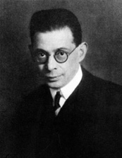
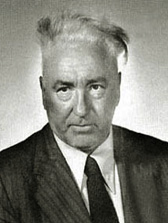
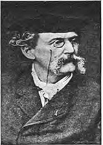
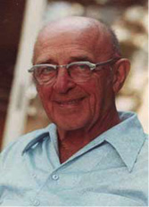
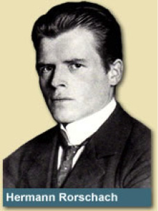
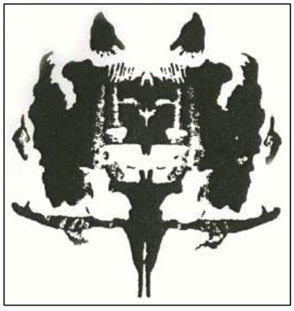
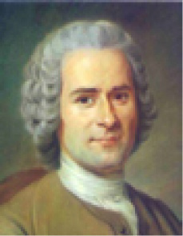
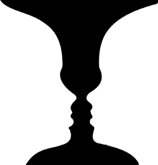
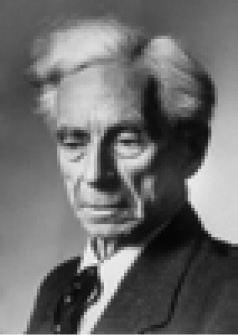

R
radikal (radical) Düşüncede, tutum ya da davranışta belli bir yeğlemeyi ödünsüz benimseyen.
radikal davranışçılık (radical behaviorism) B. F. Skinner’ın koşullama kuramı; davranışın en son nedeninin çevresel etkenler olduğunu ve bunların inceleme konusu yapılması gerektiğini savunan; insan aklını bilimsel açıdan bir kara kutu olarak nitelendiren psikoloji felsefesi. Bkz. davranışçılık; tanımlayıcı davranışçılık.
radyo (radio) Her türlü sesi uzağa ileten sistemin ve bu sesleri alan aygıtın adı. Radyo verici postası, sesleri elektromagnetik dalgalara yükleyerek havaya salıyor. Bu dalgalar, antenler aracılığıyla havadan alınıyor. Dalga, anten üzerinden bir akım geçiriyor. Radyo alıcı, bu akımı çeşitli işlemlere uğrattıktan sonra kulakla duyulacak ses haline getiriyor. Verici istasyonların birbirine karışmaması için her birinin yayınladığı dalga boyu, dolayısıyla frekansı ayrıdır. Alıcı, verici postanın frekansına ayarlanıyor ve o postanın yayını dinleniyor. Elektrikle, pille ve elektronikle çalışan radyolar yapılmıştır.
radyoaktiflik (radioactivity) Radyum, uranyum gibi bazı cisimlerin gazları iyonlandıran fizyolojik değişikliklere neden olan ve daha başka fiziksel etkiler oluşturan ışınımlar yayma özelliği; radyoaktivite.
radyo ve televizyonla eğitim (radio and television education) Kamusal ve özel radyo ve televizyondan yararlanılarak yapılan eğitim. Eğiticilerin ya da eğitim amaçlarına uygun programların yer aldığı bu yayınlar, sınıflara, eğiticilere, okul dışındaki öğrencilere ve halka yönelik eğitsel amaçlı programlar yayımlıyor. Radyo ve televizyonun çocuk gelişimine etkisi önemlidir.
rage Bkz. kör nefret.
rahim Bkz. döl yatağı.
rakip (rival) Herhangi bir işte birbirinden ileri geçmek isteyenlerin her biri.
RAM Rehberlik ve araştırma merkezinin kısa adı.
Rankçı psikanaliz (Rankian psychoanalysis) Otto Rank’ın geliştirdiği ve ruhsal gelişimde doğum öncesinin doyurucu ve güvenli dengesini aramayı vurgulayan, Freud okulunun bağımsız sayılabilecek bir uzantısı. Bkz. RANK, Otto.
RANK, Otto (1884-1939) Kendi kendini yetiştirmiş Avusturyalı psikanalist. Viyana’da doğdu; ABD’nin New York kentinde öldü. Bir Yahudi aileden gelen ve asıl adı Rosenfelt olan Rank’ın çocukluğu ve gençliği sıkıntı içinde geçti. Teknik meslek okulunda öğrenim gördü. 1904’te Freud’un yapıtlarını okudu ve çok etkilendi. Yazdığı, sanatçının yaratıcılığının ve edebiyatın psikanalitik yorumlarını yaptığı Sanatçı adlı kitabını okuyan A. Adler, onu Freud’la tanıştırdı ve Rank, Freud’un Çarşamba Toplantıları’na katılmaya başladı. 1906’da Viyana Psikanaliz Derneği’nin sekreterliğine getirildi. Ayrıca üstlendiği Freud’un özel sekreterliğini yirmi yıl sürdürdü. Freud’un isteği ile Viyana Üniversitesi’nde Alman dili ve edebiyatı bülümünde okumaya başladı. 1909’da yayımladığı Kahramanların Doğuşu Söylencesi ile psikanaliz çevresinde ün kazandı. 1912’de Avrupa’daki psikanaliz dergilerinin yayın kurullarında yer alarak, farklı görüşleri savunmaya başlayan Jung ve Adler’e karşı Freud’u savundu. Aynı yıl dokrorasını tamamladı ve tezini genişleterek Şiir ve söylancede Ensest Motifi adıyla yayımladı. Don Juan söylencesini Oedipus karmaşası açısından yorumladığı Don Juan Tipi adlı yapıtını yayımladı. 1924’te birçok tartışma ve eleştirilere yol açan Doğum Travması adlı yapıtını yayımladı. Aynı yıl, New York’ta konferanslar verdi, hastalara psikanaliz uyguladı ve sonbaharda Viyana’ya döndü. Kitabına yönelik yoğun eleştirilerin de etkisiyle 1926’da Paris’e yerleşti ve psikanalizden koparak kendi psikoloji anlayışını geliştirmeye çalıştı. 1927-1929 arasında üç ciltlik Bir Genetik Psikolojinin Anaçizgileri’ni yayımladı. 1934’te ABD’ye yerleşti. Rank, “çocuğun anneden kopup dış dünya ile karşılaşmasının yarattığı ruhsal örselenme” demek olan doğum travması kavramıyla psikanalizde yeni bir yaklaşımı başlatmış oldu. Zihinsel gelişimdeki en önemli öğenin doğumla bebeğin annenin güvenli döl yatağından atılması, annenin bedeninden ayrılması olduğunu savundu. Ona göre tüm nevrozların kaynağı, bu ayrılmanın yarattığı temel kaygıdır. Çağcıl psikanalizde önemli bir yer tutan iyi-kötü anne, ilk sevgi, döl yatağına geri dönüş fantezileri, ayrılık kaygısı gibi kavramlara Rank’ın bu yaklaşımı öncülük etmiştir. Freud’un çevresindekiler ve Freud, cinselliği ve Oedipus karmaşasını ikinci plana iten bu görüşe şidddtle karşı çıkmışlardır. Rank, çözümlemelerinde de tedavi yönteminde de bu görüşünü temel almıştır. Ona göre hastanın üzerine uzandığı kanepe, dölyatağını; hastaya uygulanan psikanaliz de doğumu simgeliyordu. Buna göre her analiz seansının bitibi, hastanın anneden ilk ayrılışının yeniden yaşanmasıdır. Hastanın psikanalizin bitmesine direnç göstermesinin nedeni budur. Rank’a göre babaya düşmanlığın nedeni, çocuğun anneye geri dönüşüne babanın engel olmasıdır; babanın anne ile ilişkileri değildir. Cinsellik de doğum travmasının acılı anısını bastırma girişimidir. Yaşamının son yıllarında kültür, sanat ve sanatçıyı ruhsal açıdan irdeleyen Rank, 1932’de yayımladığı Sanat ve Sanatçı’da sanatın, din gibi, insanın ölümsüzlük isteğinin bir anlatımı olarak anlaşılması gerektiğini; bunun sanatta daha bireysel, daha özsever, daha az toplumsal bir biçimde ortaya çıktığını savundu. Başlıca yapıtları: Der Küntsler, 1907 (Sanatçı); Der Mithus von der Geburt des Heldens. 1909 (Kahramanın Doğuşu Söylencesi); Das Inzest-Motiv in Dichtung und Sage, 1912 (Şiir ve Söylencede Ensest Motifi); Die Don Juan-Gestalt, 1924 (Don Juan Tipi); Trauma der Geburt, 1924 (Doğum Travması); Grudzüge einer genetischen Psychologie 1927-1929 (Bir Genetik Psikolojinin Anaçizgileri); Art and Artist: Creative Urge and Personality Development, 1932 (Sanat ve Sanatçı: Yaratıcı Dürtü ve Kişilik Gelişimi); Beyond Psychology (ö.s.), 1941 (Psikolojinin Ötesi).

rastgele (random) 1. İstatistikte, belli bir plandan, önceden belirlenmiş bir düzenden yoksun olan; sistematik olmayan, yalnızca olasılık temelinde belirlenebilen. 2. Araştırmada örneklemdeki her şeyin, deneğin ve benzerlerinin eşit seçilme şansına sahip olması. Bkz. rastgele değişken; rastgele etkinlik; rastgele hata; rastgele olmayan örneklem; rastgele öğrenme; rastgele örneklem; rastgele seçim; rastgele özgüleme.
rastgele değişken (random variable) 1. Deneyde bağımsız değişkenle birlikte ya da onun yerine bağımlı değişkeni etkileyen ve denetlenmeyen ya da denetlenemeyen bir kirletici değişken. 2. Değeri rastgele belirlenen bir değişken. Burada rastlantıya bağlı olan, değişkenin değeridir.
rastgele etkinlik (random activity) Görünürde belli bir hedefi, amacı bulunmayan ya da belli bir uyarıcıya yönelmeyen davranışlar. Örneğin, bebeklerin davranışları böyledir.
rastgele hata (random error) Araştırmalarda yalnızca rastlantıya bağlı olan hatalar; yansız hata. Bkz. sabit hata; sistemli yanlılık.
rastgele olmayan örneklem (non-random sample) Rastgele örneklemin olanaksızlığı durumlarında seçilen örneklem. Bu tür örneklemler; uygunluk (deneklerin ulaşılabilirliği), gönüllülük (gönüllü deneklerin alınması), amaca yöneliklik (deneklerin belli özelliklere sahip olduğu için seçilmesi) ve kartopu (önceki deneklerin tanıdığı kişilerin denek olarak seçilmesi) gibi koşullarda seçiliyor. Bkz. rastgele örneklem.
rastgele öğrenme (incidental learning) Tasarlama ve belirli bir güdü söz konusu olmadan rastgele koşullar içinde gerçekleşen öğrenme.
rastgele örneklem (random sample) İstatistikte örneklemin, popülasyondaki herkesin eşit seçilme şansına sahip olmasını ve böylece seçilen örneklemin popülasyonu temsil etmesini (popülasyon örneklerinden en azından kimilerini-eğitim düzeyi, toplumsal-ekonomik statüsü, zekâ düzeyi, yaşı, cinsiyeti ve benzerlerini içermesini) sağlamaya yönelik bir seçme tekniği. Burada amaç, örneklem üzerinde yapılan araştırmadan elde edilen sonuçların, popülâsyona genelleştirilmesini olanaklı kılmaktır. Rastgele örneklem, rastgele özgüleme ile karıştırılmamalıdır. Bkz. rastgele olmayan örneklem.
rastgele özgüleme (random assignment) Deneklerin, herkesin deney ya da kontrol grubuna girme şansı eşit olacak biçimde gruplara özgülenmesi; rastgele tahsis. Bu yöntemle her deneğin, bağımsız değişkenin her düzeyine katılma şansının eşit olması kesinlik kazanmış ve birbirine denk grupların oluşturulması; yani deney sonuçlarını etkileyebilecek bireysel ayrılıkların denetlenmesi sağlanmış oluyor. Deneylerdeki rastgele özgüleme ile diğer araştırmalardaki rastgele örneklem arasında fark vardır. İlki, neden-sonuç ilişkilerini ortaya çıkarmayı hedeflerken, ikincisi popülâsyona genelleştirme yapmayı olanaklı kılıyor.
rastgele seçim (randomization) Nesne, denek ve benzerlerinin belirlenebilir yanlılıklar ya da sistemli yapılar içermeyecek biçimde seçilmesi. Bkz. rastgele; rastgele örneklem.
rastgele tahsis Bkz. rastgele özgüleme.
rastlantısal (accidental) Rastlantıyla ilgili, rastlantıya değgin, rastlantıya dayanan. Bkz. rastlantısal bunalım; rastlantısal gözlem; rastlantısal öğrenme; rastlantısal örneklem; rasatlantısal uyarıcılar.
rastlantısal bunalım (accidental crisis) Topluluk psikolojisinde iki temel bunalım türünden biri; tesdadüfi kriz. Aile üyelerinden birinin ölümü, hastalık, kaza, ameliyat, işini yitirme ya da değiştirme, ailesel geçimsizlik gibi stresli ve bir anlamda önceden kestirilemeyen bir yaşam deneyimiyle ortaya çıkan akut bir davranış ya da duygu düzensizliği. Bkz. olgunlaşma bunalımı
rastlantısal gözlem Bkz. gözlem.
rastlantısal örneklem (accidental sampling) Olayların, kişilerin ve benzerlerinin sistematik, popülasyonu temsil edecek yöntemlerle değil de yalnızca rastlantıya bağlı olarak seçilmesi; tesadüfi örneklem. Sokağa çıkıp yoldan geçen şu kadar kişiyi örneklem olarak almak, buna örnektir. Bu tür örneklemler, doğası gereği, yanlıdır. Rastlantısal örneklemin yanlılığını, herkesin eşit seçilme şansına sahip olduğu rastgele örneklem ortadan kaldırıyor.
rastlantısal uyarıcılar (incidental stimulus) Kas krampı ağrısı, kapı zili, gürültü gibi dış duyusal yapıdaki rüya uyarımları.
rasyonalizasyon Bkz. neden bulma.
rasyonalizm Bkz. akılcılık.
reaksiyon Bkz.tepki.
reaksiyon teşkili Bkz. tepki oluşumu.
realite Bkz. gerçeklik.
realizm Bkz. gerçekçilik.
realizm ve eğitim (realism and education) Realizmi savunan düşünürlerin önde gelenlerinin felsefeleriyle ilişkili eğitim anlayışlarının dayandığı temel önermeler. Bu düşünürlerden Aristoteles (İ. Ö. 384-322), gerçek varlığı, fenomenlerin içinde gelişen öz (hep olmuş olan varlık) olarak tanımlıyor. Aristoteles, bu görüşüyle realizmin kurucusu sanını almıştır. Platon’un (Eflatun’un) ise idealarla nesneleri birbirinden ayrı olarak düşündüğü biliniyor. Ona göre gerçek evren, akılla kavranan idealar evrenidir. Aristoteles’e göre ise idealar, nesnelerin içindedir. Nesneleri idealar nesne yapıyor (forma sokuyor; maddeye canlılık kazandırıyor.) Aristoteles bunu canlılık ilkesi olarak adlandırıyor; idealar evreniyle nesneler evrenini birleştiriyor. Ona göre madde, oluşup biçim kazanan bir olabilirlik; öz, olabilme olanağı ve gücüdür. Maddede biçim kazanma itilimi; formda da bir ereğe (ilk devindiriciye) doğru devinim gücü vardır. Bütün var olanların ve özlerin en yükseği ve en iyisi, salt formdur (ilk devindiricidir). Kendi kendini düşünen, düşünmenin düşünmesi, bilincin bilincidir (tanrısallıktır). Tanrı, devinimleriyle evreni etkilemiyor; ancak, evren, ona ulaşmak istediği için ona doğru deviniyor. Bu nedenle her türlü devinimin nedeni Tanrıdır. Ruh, bedenin işlevi; öte yandan da bedenin biçimlenmesini ve bir ereğe yönelmesini sağlayan; bedenin devinimleri ve değişimleri içinde kendini olgunlaştırıp gerçekleştiren form; bedeni devinderen, ona egemen olan güçtür. Ruh; bitkisel, hayvansal ve insansal olmak üzere üç tabakalıdır. Bitkisel ruhta özümseme ve üreme; hayvansal ruhta onların yanı sıra kendiliğinden devinim, istek ve duyum; her insanda aynı oranda olmayan bitki ve hayvan ruhlarının üzerine yükselen insan ruhunda ise akıl baskındır. Bitkisel ruhu baskın olanlar köle; hayvan ruhu ağır basanlar tüccar ve zanaatkâr; akılsal ruhu baskın olanlar da yurttaş oluyorlar ve devleti bunların yönetmesi gerekiyor. Edilgin akılla, beden kullanılarak edinilen duyu verileri biçimlendiriliyor. Aklın kendi kendine salt etkinliği olan etkin akılla ise mutlak doğru elde ediliyor. Araştırmalarda tek tek nesnelerden yola çıkıp gözlemleyerek, deneyerek, sınayarak tikelden tümele; kesin olmayan bilgiye varılıyor. Bilgi edinmede hem tümevarım hem de tümdengelim kullanılabiliyorsa da tümdengelim baskınlık taşıyor. Çünkü duyum, zorunlu olarak bireyseli (tikeli) ilgilendiriyor. Buna karşılık bilim, evrensel bilgiye dayanıyor. Bilimsel bilgi, akılsal sezgi ile varılan tümelin bilgisidir. Akıllı ve toplumsal-politik bir hayvan olan insan, ahlak olgusuna ancak toplumda (devlette) erişebiliyor. Bir toplumda yaşamayan ya hayvandır ya da Tanrı. İnsan için en yüce erek, mutluluktur. Ancak, mutluluğa, insanın özü olan aklını kullanarak erişebiliyor. Akıl, eylem ve düşünme ile kendini gösteriyor. Eyleme dayananlar etik erdem; düşünmeyle ilgili olanlar ise bilinçsel erdemdir. Etik erdemleri yüreklilik, cömertlik, dostluk, ölçülülük, adalet gibi alışkanlıklarla, yapıp etmelerle elde edilenler oluşturuyor. Bilinçsel erdemleri ise uzun süren bir isteç eğitimi kazandırıyor. Dengeli durum ise tüm aşırılıklardan ve çelişkilerden sakınmayı, “doğru orta”yı bulmayı gerektiriyor. Eğitim, hem toplum hem de birey açısından ele alınmalıdır. Ancak, yalnızca özgür yurttaşlar (akıl yönü baskın olanlar) eğitilmelidir. Eğitim, bedeni ve ruhu güzelleştirmek için yapılmalıdır. Erkekler daha akıllı oldukları için zihinsel eğitim yalnızca onlara verilmelidir. Öncelikle ve ağırlıklı olarak toplumsal eğitim gerçekleştirilmelidir. Aristo’ya Göre Toplumsal Eğitimin Dayanması Gereken İlkeler: (1) İnsan, ancak toplum içinde var olduğuna göre eğitim, kişiyi toplumun erdemli bir varlığı yapmak için gerçekleştirilmelidir. Bunun için insanın akla ve tutkulara yönelik yanları sentezlenmesi gerekir. Bilim, bilgelik, güzel sanatlar ve kılgısal kavrayış gibi nitelikler, zihinsel erdemleri; cesaret, cömertlik, hakseverlik, ölçülülük, yiğitlik gibi nitelikler de ahlaksal erdemleri oluşturuyor. Zihinsel erdemler, açıklamalarla öğretilebiliyor. Ahlaksal erdemler de araştırmalarla ve kişiye yaptırarak kazandırılabiliyor. (2) Aile önemlidir; çünkü ilk toplumsallaşma orada başlıyor. Devlet ise varlığını yasalara uygun bir eğitimle sürdürebiliyor. İnsanlar, yasalara uygun olarak eğitildiğinde, insan insanlaştırılmış oluyor. Bu yapılamadığında devlet yıkılabiliyor. Kişi Açısından Eğitimde Uyulması Gereken İlkeler: (1) İnsanlar yetenek bakımından farklı olduğu için, yalnızca erkek yurttaşlar eğitilmelidir. Kadınların beyni erkeklerin beyninden daha küçük olduğundan, kadınlarda akılsal yön daha zayıftır. (2) 0-5 yaşına dek çocuklar çalışmaya ve öğretime başlatılmamalıdır. Bu yaşlarda oyunlara ve masallara yer verilmelidir. 5-7 yaşlarında, öğrenecekleri şeyler onlara seyrettirilmelidir. 7-10 yaşlarında müzik ve entelektüel eğitim verilmelidir. 10-21 yaşlarında da savaş yöntemleri ve cinsel duygulara egemen olma, perhiz yapma yolları, öğretilmelidir. Bunlar, zihinsel ve ahlaksal eğitimle verilebilir. Önce beden eğitimiyle başlamalı, zihinsel (entyellektüel) eğitim onun üzerine oturtulmalıdır. Bu amaçla müzik, dilbilgisi, güzel konuşma, grafik, aritmetik, geometri, diyalektik, felsefe, politika ve devlet bilimi dersleri okutulmalıdır. İnsan, zekâsını özdeşlik, çelişmezlik, üçüncü seçeneğin olanaksızlığı gibi aklın kurallarına uygun olarak kullandığında ahlaksal davranışlar gösterip mutlu oluyor. İyilik, doğruluk, ölçülülük, yiğitlik gibi değerler, alıştırmalarla öğretiliyor. Eflatun ve Aristo felsefelerinin temelinde insan bulunuyor ve eğitim, özgür olan insanlar için hedefleniyor. Eskil Yunan’da ve Ataerkil Krallık Dönemi’nde baskın eğitim görüşü kahramanlık; Kent devleti döneminde bedence ve ruhça güzel insan yetiştirme; Atina demokrasisinde, seçkin yurttaşlara güçlülük, iyilik, ahlaklılık, erdemlilik, ölçülülük, hakseverlik, yiğitlik kazandırmak; Helenistik Dönem’de özgürlerin dilbilgisi, güzel konuşma, diyalektik, aritmetik, geometri, astronomi ve müzik adlı yedi sanatıyla genel formasyon gerçekleştirmek; Roma’da ise tüm bunlarla birlikte hatipliği geliştirmekti. Hıristiyanlıkta ise temelde Tanrı bulunuyor ve erdemlilik, öbür erdemlerin de hizmetine girdiği dindarlıktır. Tanrı önünde eşit olduklarına göre, kadın-erkek, yoksul-zengin, şu ya da bu ırktan, meslekten ayırılmadan herkes dinsel eğitimden geçirilmelidir. Tanrı odak olunca, günahkâr olan insan, ikinci plana atılmıştır; onun için, bu dünya bir sınav dünyasıdır. Bu anlayış biçimini, Eskil Yunan ve Roma görüşleriyle ilk kez İ. S.215’te İskenderiyeli Klemens bağdaştırdı. Sonra A. Augustinus, bu sentezi temellendirdi ve tek yanlı, İncil’in buyruklarını yerine getiren insan görüşü yaygınlaştı. Özgürlüğün yedi sanatından dilbilgisi, güzel konuşma ve tartışma, Tanrı’nın buyruklarını öğretme ve varlığını kanıtlamada; matematik ve astronomi, kutsal günleri hesaplama ve kiliseler yapmada; müzik de dinsel içerikli olarak kilise korolarında kullanılmaya başladı. Pek çok din okulu ile iş yaşamı için meslek ve kent okulları kuruldu. Ortaçağ’da egemen olan Skolastik Düşünce Akımının Özellikleri: (1) Felsefeyi teolojinin açıklanması ve temellendirilmesi için bir araç olarak kullanarak ikisini bağdaştırmak. (2) Aristoteles’e bağlı kalarak onun mantığını dinsel buyrukların kanıtlanması için kullanmak. (3) Araştırma, inceleme, deney, gözlem yerine Platon, Aristoteles, S. Anselmus, A. Thomas gibi düşünür ve kilise babalarının görüşlerini benimseyip yazdıkları kitapları ezberlemek, sorunları bunlarla çözmek. Bunlara ek olarak da Sokrates’in doğruyu buldurma yöntemini kullanmak. Bu görüş, Batı dünyasında Rönesans’a dek sürüyor. Rönesans döneminde ve ondan sonraki idealist ve realist görüşlerde büyük bir değişiklik olmuyor. Descartes’a göre ilk neden (arkhe), Tanrı; Spinoza’ya göre Tanrı ya da doğa; Leibniz’e göre (Monat (Tanrı); Berkeley’e göre evrensel ruh (Tanrı); Hegel’e göre ise mutlak bilinçtir (Geist’tir). İnsanı Descartes, düşünen varlık; Spinoza, doğanın ve kendi düşüncelerinin varlığı; Leibniz, evren üzerindeki tasavvurların küçük bir bölümünün tam bilincine sahip olan bir varlık; Locke ve Herbart da doğal ve ruhsal bir varlık olarak niteliyor. İdealistler genellikle temelinde Stoacı ahlak anlayışı olan bilgelik ahlakını savunuyorlar. Descartes, ılımlı, tutarlı, kararlı olmak, kendini yenmek, dünyayı değiştirmekten çok kendini değiştirmek, ölçülü olmak, görevini yapmak; Spinoza, akla uygun yaşamak, ölçülü olmak, erdemli olmak, bilge olmak, yıkmamak; Leibniz, akla uygun yaşamak, açık seçik bilgi sahibi olmak ve sevmek, bilge olmak; Berkeley, Tanrı’ya ulaşmak; gerektiğini ileri sürüyor. Kant, akla dayalı yaşamak, ödevini çıkar gütmeden yerine getirmek; realist Locke, ahlaklı olmak için erdemli olmak, bilgi ve beceriye, iyi bir yaşam biçimine sahip olmak gerektiğini; Herbart, ahlaklılığın iyilikseverlik, doğruluk, hakseverlik, yetkinlik ve mutluluk olduğunu savunuyor. İdealistlere göre akıl yürütme (bilgiye, doğruya ulaşma) yolu genelde tümdengelimdir. Descartes’e göre bunun yolu bilimsel kuşkudur. Bunun için analiz, sentez yapılmalı, sonra denetlenmelidir (sezgi, tümevarım, tümdengelim). Spinoza’ya göre sezgi ve tümdengelim; Berkeley, Leibniz ve Kant’a göre tümdengelim; Hegel’e göre tez, antitez ve sentez (diyalektik); realistlerin çoğuna göre tümevarım; Locke ve Herbart’a göre de deney, gözlem, inceleme yoluyla algılamadır. Klasik realizm ile idealizme dayanan daimicilikte insan, “akıllı ve özgür, davranışlarından sorumlu bir varlık” kabul ediliyor. Onun niteliği değişmez; o nedenle kesin doğrular vardır ve onlara akılla varılır. O nedenle çoğu kez tümdengelim; kimi de tümevarım kullanılmalıdır. Gezi, deney, gözlem, mutlak doğrunun bulunmasında aklın kullandığı araçlardır. Aklını tutarlı kullanabilmesi için insan, yaşadığı toplumdaki bilgi birikimini edinmelidir. Bu birikim, düşünceyi, sanatı, toplumsal kurumları ve ahlaksal ilkeleri de içerir. Eğitimin görevi, insanı bu yolla mutlak doğrulara ulaştırmak, evrensel gerçeğe uyumunu sağlamak, özgür ve mutlu kılmaktır. Aklı zihinsel çalışma, tutarlı akıl yürütme, aklın ilkelerine uyma; istenci ise gözlem, inceleme, araştırma ve disiplin geliştiriyor. Eğitim, insanı bu hedeflere ulaştırmalıdır. Değerlendirmede (sınama durumunda) ise hedef, genelde entelektüel aristokrat yetiştirmek olduğu için öğrencinin aklını çalıştırıp çalıştırmadığını yoklayan sorulara yer veriliyor. Sorular, gerçek yaşam yerine ideal ve evrensel gerçekleri içeriyor. Realist Program: Realizme göre gerçek olan madde, değişmez ve ölümsüzdür. Bu yaklaşımda insan, doğal ve toplumsal bir varlık olarak algılandığı için eğitim, insanı toplumsallaştırma süreci olarak görülüyor. Gerçeğe, en etkili akıl yürütme yolu kabul edilen tümevarımla ulaşılmaya çalışılıyor. Tek olay, olgu ve nesnelerden genele gidiliyor. Çünkü madde dil, tarih, coğrafya, fizik, kimya, biyoloji, botanik, matematik gibi disiplinlere ayrılabiliyor. Bu yapılardan her biri, doğal ve toplumsal ilişkileri açıklayan genellemeler, kavramsal yapıya ilişkin bir çerçeve sunuyor. Realist program akla dayandığı için bu çerçevenin sunuluşunda en etkili öğe akıl kabul ediliyor. Her disiplin kendi içinde örüntüleniyor. Örneğin, üniversiteler, tıp, fen, edebiyat, güzel sanatlar, mühendislik, eğitim, ekonomi biçiminde fakültelere; onlar da bölümlere ayrılmış bulunuyor. Bu nedenle realist yaklaşım, disiplinleri göz önünde bulunduruyor Bu yaklaşımın iki özelliği vardır: (1) Fizik, kimya, biyoloji, tarih, coğrafya, matematik gibi disiplinlerle ilgili öğretilecek olan bilgi, gerçeği yansıtmalı ve üniteler biçiminde örüntülenmiş olmalıdır. (2) Her disiplinin içeriği, öğrencinin gelişimine, hazırbulunuşluğuna, öğrenme-öğretme ilkelerine uygun olarak düzenlenmelidir. Bunları gözlem, deney teknikleri, kütüphane araştırması, araştırma-soruşturma stratejisi oluşturmalıdır. Öğretmen, öğrendiklerini öğrencilere aktarırken düzanlatımdan, söylevden, monografiden ve kitaplardan yararlanmalıdır. İlköğretimde ise okuma yazma, kestirim, araştırma önem taşıyor. Ortaöğretimin içeriği ise bilim insanları ve uzmanlarca hazırlanıyor. Bilgi; gözlem, deney, inceleme, araştırmayla elde ediliyor; çünkü insan zihni boş bir levhadır. Bunlara bağlı olarak programda dersler, konular ve öğretmen odak alınmıştır. Hiçbir bilgisi olmayan öğrenciye evrensel doğruları, bilim insanları, uzmanlar ve öğretmenler aktaracaktır. Realist programın üç öğesini öğretmen, öğretilecek bilgiler, beceriler ve öğrenci oluşturuyor. Öğretmen, konunun uzmanı olmalı; evrensel doğruları tam ve kesin olarak bilmelidir. Neyi, nasıl öğreteceğini, öğrenciyi nasıl güdüleyeceğini bilmelidir. Bilgi ve beceriler, dil, tarih, coğrafya fizik, kimya gibi derslerde belirtilmelidir. Öğretmen bu disiplinlerde hangi evrensel bilgi ve becerileri, hangi sıraya göre vereceğini belirlemelidir. Öğrenci, kafası boş, bilgi ve beceri kazandırılacak olan, aklını kötüye kullanabilecek kişidir. Öğrenme, disiplin ve çaba isteyen, sıkı ve zor bir iştir. Öğrenci, öğretmenin istediklerini, okulun kurallarını karşı çıkmadan yerine getirmelidir. Realist eğitimde, idealist eğitim için de söz konusu olan geniş alan yaklaşımı ile disiplin alanı program desenleri kullanılıyor. Disiplin alanı yaklaşımı, gerçeğin sınıflanmış bilgisini temel kabul ediyor. Gerçek, dersler biçiminde belirlenmiş; bunlar da kendi içlerinde alt disiplinlere ayrılmıştır. Bu program yaklaşımında, konu alanı yaklaşımındaki gibi konu, doğal yapısı içinde örüntüleniyor. Ancak, konu alanı yaklaşımında içeriğin açık ve temellendirilmesi önemli sayılmazken, disiplin alanında çok önemseniyor. Disiplinle bilgi, bu programın temel özelliğidir. Öğrenilecek konunun yapısı, kullanılacak yöntemi de belirliyor. Örneğin, öğrenci tarihi öğrenecekse bir tarihçi gibi araştırma; fizik öğrenecekse fizikçi gibi deney yapmalıdır. Disiplin alanı yaklaşımında öğrenci, deney, gözlem, araştırma yaparak öğrenmeye etkin biçimde katılıyor. Ayrıca öğrencinin her disiplin yapısını ve onun dayandığı mantığı algılaması; kavramlar ve ilkeler arasındaki ilişkileri, araştırmanın nasıl yapılacağını anlaması isteniyor. Bunda bilginin geçişi de bekleniyor. Öğrenciden, öğrendiği ilke ve yöntemleri, yeni ve benzer durumlarda kullanması da bekleniyor. Buna uygun bir eğitim ortamı düzenleniyor. Bütün bunlara karşın, bu yaklaşımda da temelde disiplinler ve öğretmen bulunuyor; öğrenci ikinci planda kalıyor. Bkz. eğitim akımları; idealizm ve eğitim.
referans (reference) 1. Bir metinde geçen bir sözün, düşüncenin, aktarılan bir bölümün ve benzerlerinin alındığı kaynak. 2. Bir kimsenin daha önce çalıştığı yerlerde işe yarar çalışmalar yaptığını gösteren belge. Bkz. referans çerçevesi; referans düşünceleri; referans grup; referans grup kuramı; referans kuruntusu; referans noktalı eğitim; referans noktası.
referans çerçevesi (frame of reference) 1. Konum ve hareket belirlemede kullanılan bir koordinat eksenleri sistemi. 2. Bireyin ya da grubun düşünceleri, davranışları ve sonuçları değerlendirirken, gerçek dünyayla baş etmeye çalışırken kullandığı ölçüt, standart ve kavram kümesi, ahlaksal ve öbür normların toplamı. 3. Gelişmekte olan çocuğun, genişleyen coğrafi deneyim aralığı. Çocukta bu gelişme, sırasıyla vücut bölümlerinin eşgüdümünden, yakın çevreye ve sonunda yerler arasındaki uzaysal ilişkiye doğru ilerliyor. Bkz. referans düşünceleri; referans grup; referans grup kuramı: referans kuruntusu; referans noktalı eğitim; referans noktası.
referans düşünceleri (ideas of reference) Kişinin yakın çevresindeki olayları, nesneleri ya da kişileri, kendisiyle doğrudan ilişkiliymiş; özel, olağandışı bir anlamı varmış gibi yorumlaması. Kişi, bunların hafif türlerinde bilinçlidir; başkalarının kendisini durakta, otobüste, pastanede ve benzeri yerlerde fark ettiğini ve görülmesini istemediği yönlerini gözlemlediklerini düşünmekten kendini alamıyor. Bu düşüncelerin kendinden kaynaklandığını, başkalarından daha fazla dikkat çekmediğini; ancak, böyle düşünmekten kendini alamadığını biliyor. Ağır biçimlerinde ise kişi, başkalarının kendisini eleştirdiğine, ona güldüğüne ve benzerlerine inanıyor; bu düşünceler, bir kuruntu düzeyine çıkabiliyor ve genellikle özbilinçli bir eksiklik duygusuna dayanıyor. Bkz. referans; referans kuruntusu.
referans grup (reference group) Bireyin standartlarını ve kanılarını, kendi inançlarını, değer yargılarını, yaşam biçimini, davranışlarını ve benzerlerini değerlendirirken ya da tanımlarken ölçü olarak aldığı bir toplumsal grup. Birey, söz konusu grubun bir üyesi olabiliyor da olmayabiliyor da. Referans grubu, özlenen (kişinin üyesi olmak istediği); bu nedenle ideallerinden, inançlarından ve değer yargılarından derinlemesine etkilendiği bir grup olabileceği gibi, olumsuz (ait olmak istemeyeceği), kendi değerlerini ve inançlarını gruptakilerle karşıtlık içinde tanımlamaya çalıştığı bir grup da olabiliyor. Bkz. referans; referans grup kuramı.
referans grup kuramı (reference group theory) İnançların, önyargıların, tutum ve davranışların toplumsal ve bireyler arası standartların büyük oranda ölçü olarak kullanılan referans grupça belirlendiği savı. Bu biçimde referans alınan grup, genellikle aynı toplumsal konuma sahip bir grup olacaktır. Örneğin, yoksullar kendi durumlarını değerlendirirken zenginleri değil, diğer yoksulları referans alıyor. Bkz. referans grup.
referans kuruntusu (delusion of reference) Kişinin, yakın çevresindeki insanların, nesnelerin ya da olayların kendisiyle olağandışı ölçüde anlamlı bir ilişkisi olduğuna inanması. Kişi, örneğin, insanların kendisi hakkında konuştuklarını, dedikodu ettiğini; radyo programlarının, televizyondaki filmlerin, haberlerin ya da gazetelerin kendinden söz ettiğini ileri sürüyor. Hemen her olayı; örneğin, yol işaretlerini, reklam afişindeki yazıları, televizyon sunucusunun sözlerini kendisine yönelik gizli bir ileti gibi, gizli bir anlamı varmış gibi yorumluyor. Genellikle olumsuz, aşağılayıcı olan; ancak içeriğinde görkemlilik öğeleri de bulunabilen bu kuruntular, paranoid şizofrenide sıklıkla görülüyor. Bkz. paranoid düşünce; paranoya; referans; referans düşünceleri; yardım kuruntusu.
referans noktalı eğitim (anchored instruction) Referans noktası ya da somut bir izlek (genellikle bir tür olay çalışması ya da sorun durumu) üzerinde tasarlanan ve öğrencilerin incelemesine sunulan eğitim etkinlikleri.
referans noktası (anchor) 1. Gözlemcinin, yapacağı değerlendirmede dayanak olarak kullandığı bir ilk standart. Örneğin, bir derinlik algısı deneyinde deneklerin, nesneler arasındaki uzaklığı ayarlaması için deneyci, iki nesne arasındaki uzaklığı verdiği zaman bir referans noktası belirlenmiş oluyor. Bu uzaklık değeri, deneklerin sonraki yargılarında bir referans noktası olarak iş görüyor. 2. Belli bir tepkiyle (iç durumla) ilişkilenen belli bir yapı, davranış ya da uyarım. Örneğin, vücudun belli bir kısmına dokunulması, belli bir duygu için referans noktası oluyor. Türüne ve oluş biçimine göre referans noktası, klasik koşullama ya da işlemsel koşullamayla karşılaştırılabiliyor. Bkz. referans noktalı eğitim.
refleks (reflex) Belli uyarıcılar karşısında organizmanın verdiği doğuştan gelen; dolayısıyla öğrenme gerektirmeyen türe özgü, istemsiz, sabit tepkiler; tepke. Bu tepkiler, çoğunlukla bilinçli tepkilerden çok daha hızlı olup bu özelliği nedeniyle, ateşe değmek üzere olan elin, anında, istemsizce geri çekilmesi gibi, yaşamsal bir önem taşıyabiliyor. Aynı olaya bilinçli yaklaşım söz konusu olsaydı bu, çok daha fazla zaman alacağından, elin yanması engellenemeyecekti. Bkz. refleks arkı; refleks ketleme; refleksoloji; refleks zinciri.
refleks arkı (reflex arc) Refleks işlevini temsil ettiği; duyu sinyallerini alan, bu sinyalleri omuriliğe; bağlantı ve devinim sinyallerini kaslara taşıyan eylemci sinir hücrelerinden oluştuğu düşünülen nörolojik birim; tepke arkı.
refleks ketleme (reflex latency) Merkez sinir sisteminin, doğuştan gelen şaşırma refleksi türünden refleksleri devre dışı bırakma süreci; tepke ketleme. Bu süreç, planlı, istençli devimsel etkinliğin gelişimi için gerekli bir öncüldür.
refleksoloji (reflexology) 1. Ruhsal süreçlerin, birer refleks ya da refleks örüntüsü olarak anlaşılabileceğini savunan mekanik, davranışçı yaklaşım; tepkebilim. Bu yaklaşımda uyarıcılara yönelik istemsiz, kendiliğinden tepkilerin (reflekslerin), özellikle insan ve hayvan davranışları üzerindeki etkileri inceleniyor. Refleksoloji terimi, özellikle Pavlov ve Bechterev’in, reflekslerin, sinirsel köklerine dayalı olarak incelenmesi amacıyla geliştirdiği fizyolojik yaklaşım için kullanılıyor. 2. Ayaklar, eller ve kulaklar üzerindeki belli organları temsil ettikleri savunulan özel noktalara baskı uygulanarak gerçekleştirilen ve parmakla akupunktura benzeyen bir alternatif tedavi tekniği.
refleks zinciri (chain refleks) Dizideki bir tepki harekete geçince, yutkunmada olduğu gibi, birbirine bağlı bir dizi refleksin bunu izlemesi; zincirleme tepke.
reform Bkz. iyileştirme.
regresyon Bkz. gerileme.
rehabilitasyon Bkz. yeniden güçlendirme; iyileştirme.
rehberlik ve araştırma merkezi (counseling and research center (RAM)) Eğitim kurumlarındaki rehberlik ve psikolojik danışma hizmetlerinin etkin bir biçimde yürütülmesi; ildeki özel eğitim gerektiren bireylere tanı konulması, rehberlik ve psikolojik danışma hizmetlerinden yararlandırılması için gerekli çalışmaları yürüten kuruluş; RAM. Rehberlik ve araştırma merkezi müdürlüğü; Rehberlik ve Psikolojik Danışma Hizmetleri Yönetmeliği’ne göre merkez müdürlüğü, merkez müdür yardımcılığı, bölüm başkanlığı, rehberlik ve psikolojik danışma hizmetleri bölüm başkanlığı, özel eğitim hizmetleri bölüm başkanlığı, uzmanlıklar biçiminde örgütlenmiştir. Bir de merkez komisyonu bulunuyor. Bunların her birinin görevleri, söz konusu yönetmelikte belirtilmiştir.
rehberlik ve psikolojik danışma (guidance and psychologycal counseling) Kendini, çevresindeki olanakları tanıması, gizilgüçlerini geliştirmesi, sorunlarını çözebilmesi ve kendini gerçekleştirmesi için kişiye, bu işi meslek edinmiş olan uzmanlarca yapılan düzenli yardım süreci; psikolojik danışma ve rehberlik (PDR). Rehberlik ve Psikolojik Danışmanın Birincil İşlevi: Bu işlev, kişinin kendisini tanımasına yardım etmektir. Kişinin kendisini tanıması için devimsel ve bilişsel yeteneklerinin, ilgilerinin, değer yargılarının, tutum ve davranışlarının, yaşamdan beklentilerinin, hoşlandığı ve hoşlanmadığı varlık, olay ve olguların neler olduğunu bilmesi gerekiyor. Bu hizmetle kişiye kendisi, bir, dıştan değerlendirici çalışmalarla; bir de kendi gözü ile görmesine dayanan çalışmalarla tanıtılıyor. Dıştan değerlendirme, gözlem, anket, test gibi teknik ve araçlar kullanılarak gerçekleştiriliyor. Kişiye kendini kendi gözü ile tanıtıcı çalışmalar ise, psikolojik danışma, özgeçmiş gibi tekniklerden yararlanılarak yapılıyor. Bu uygulamalardan elde edilen bulgu özetleri, görüşmelerle danışana (öğrenciye) iletiliyor. Bu bilgilerden gizli kalması gerekmeyenler, öğrenci gelişim dosyasına (toplu dosyaya) işlenerek, öğrencinin eğitiminden sorumlu olanların bilgisine sunuluyor. Kişi, kendisine ve çevresine ilişkin bilgileri özümsedikçe, benliğini gerçekçi doğrultuda değiştirme, doğru kararlar verebilme ve kendini yönetebilme olanağını elde ediyor. Kişiye bu ruhsal bağımsızlık kazanma yolu, dıştan değerlendirme ile değil; bir iletişim tekniği ve kendini öğrenme süreci olan psikolojik danışma ile açılıyor. Rehberlik ve psikolojik Danışmanın İkincil İşlevi: Bu ise bilgi verme, yerleştirme ve izleme hizmetlerini yerine getirmektir. Bilgi verme ile bireyin kişisel-toplumsal uyumuna yardım ediliyor. Birey, verimli çalışma ve tam öğrenme yolları; kişilik gelişim kuralları; yetenek ve ilgilere göre program; okul ve meslek seçimi; burs, kredi ve yurt olanakları ve benzeri konularda bilgilenme gereksinimi duyuyor. Bunlar gibi örneğin, birer kişilik hizmeti olan sağlık hizmetlerini, ucuz ve iyi beslenme yollarını tanıtma da bir rehberlik ve psikolojik danışma hizmetidir. Yerleştirme denilince, rehberlik ve psikolojik danışma aracılığı ile bir okula, bir programa ya da bir mesleğe gitmek üzere kararlar alabilmesi ve uygulayabilmesi için kişiye yardım etme, gerekli olanakları sağlama gibi işlevler anlaşılıyor. İzleme hizmetlerini ise, kişinin aldığı kararların sonuçlarını değerlendirmeye yönelik rehberlik ve psikolojik danışma hizmetleri oluşturuyor. Bununla birlikte rehberlik ve psikolojik danışma, “her derde deva bir hizmet” olmadığı gibi, birey, çocukların anne babaları bu hizmetten yararlanmak istemedikçe kendisine herhangi bir yardımda bulunulamıyor. Rehberlik ve Psikolojik Danışmanın Amaçları: Rehberlik ve psikolojik danışmanın amacı bir tümceyle; bireyin, kendini tanımasını ve kendi güçlerine güvenmesini sağlayarak, kişisel-toplumsal gelişimine yardımcı olmaktır. Bu amaçla rehberlik ve psikolojik danışma hizmetlerinden yararlandırılan birey, şunları başarabilecek düzeye geliyor: (1) Kendi yetenek ve ilgilerini, eğitim olanaklarını, içinde yaşamakta olduğu toplumun beklentilerini ve meslekleri tanıyor. (2) Özyapısından gelen ya da doğal ve toplumsal çevresinin etkileri sonucu ortaya çıkan sorunlarını görebiliyor ve bunları çözümleyebiliyor. Bedensel, devimsel, bilişsel ve duyuşsal sorunlarının olası çözüm yollarını inceleyerek bu çözüm yollarından kendine en uygun olanını kendi özgür istenciyle seçebiliyor. Sorunlarının çözümünü planlayabiliyor ve bu plan doğrultusunda, beklenen eylemleri gerçekleştirip gerekli uyumu gösterebiliyor. (3) Başkalarıyla iyi ilişkiler kurabiliyor. Yaşama karşı olumlu bir tutum gösteriyor. (4) Boş zamanlarını en uygun biçimde kullanabilmek için gerekli anlayış ve görüşü ediniyor. Rehberlik ve Psikolojik Danışmanın İlkeleri: Rehberlik ve psikolojik danışma hizmetlerinin verilişi sırasında şu ilkelerin göz önünde tutulması gerekiyor: (1) Rehberlik ve psikolojik danışma, çocuk ve insan haklarına, demokratik toplum değerlerine ve bireysel gereksinimlere dayandırılacaktır. (2) Rehberlik ve psikolojik danışma hizmetleri, kendilerini tanımak, sorunlarını çözmek, kendilerine yeter duruma gelmek isteyen her bireye sunulacaktır. (3) Rehberlik ve psikolojik danışmada bireye, saygın bir varlık olarak bakılacaktır. (4) Rehberlik ve psikolojik danışmada bireye, kendisi için seçimler yapma ve kararlar verme özgürlüğü tanınacaktır. (5) Rehberlik ve psikolojik danışma, sürekli yararlanılabilecek bir hizmet olarak uygulanacaktır. (6) Bireysel boyuttaki rehberlik ve psikolojik danışma, gizlilik temeline dayanacaktır. (7) Rehberlik ve psikolojik danışma hizmetleri, öğrenci odaklı bilimsel ve çağdaş eğitim sisteminde uygulanacaktır. (8) Rehberlik ve psikoljik danışma, öğrencilerle ilgili olan herkesin işbirliği ile yürütülecektir. (9) Rehberlik ve psikolojik danışma hizmetlerinde, bireysel ayrılıklar göz önünde tutulacaktır. (10) Rehberlik ve psikolojik danışma ile bireyin bedensel, zihinsel, toplumsal ve duygusal yönden, ilgi ve yetenekleri doğrultusunda bütünüyle geliştirilmesine ve kendini gerçekleştirmesine çalışılacaktır. (11) Rehberlik ve psikolojik danışma, eğitimin ayrılmaz bir parçası olarak uygulanacaktır. (12) Rehberlik ve psikolojik danışma, her okulun kendi amaç, gereksinim ve olanakları ile çevre koşullarına ve öğrencilerin düzenli olarak değerlendirilmesine dayandırılarak uygulanacaktır. (13) Rehberlik ve psikolojik danışma, örgütlü, planlı bir biçimde ve profesyonel bir hizmet olarak verilecektir. Rehberlik ve Psikolojik Danışmanın Sınırlılıkları: Rehberlik ve psikolojik danışma, sınırlılıkları olan bir hizmetler bütünüdür. Sağlıklı bir kişilik geliştirmek için psikolojik yardımla birlikte öbür kişilik hizmetlerinin de karşılanması gerekiyor. Ancak, bu hizmetlerden yararlanmak durumunda olan kişinin kendisi, anne babası, öğretmeni, yöneticisi ile anlayış ve işbirliği yapılabildiği ölçüde gerçekleştirilebiliyor. Bütün bu ilgililere karşın, tutarlı bir rehberlik ve psikolojik danışma hizmeti verilemiyor. Özellikle danışana karşın onun sorununu çözme olanağı bulunmadığı gibi onunla birlikte onun sorununu çözmeye de olanak yoktur. Alanın uzmanından ve öbür ilgililerden öncelikle beklenen, bu hizmetlerden yararlanmak isteyen kişiye kendi gerçeklerini, sorunlarını ve çevresini tanıması için yardımcı olmaktır. Bu anlamdaki yardımla danışan, kendi güçlerini kullanarak sorunlarını çözebilecek ve kendini gerçekleştirebilecek duruma gelecektir. Rehberlik ve psikolojik danışma hizmetleriyle ulaşılmak istenen amaç budur. Bundan sonraki başarıyı kişinin olanakları, kararı, girişim gücü ve çabası belirleyecektir. O nedenle okulun rehberlik ve psikolojik danışma hizmetlerini vermeye hazır olmasıyla öğrencilerin tüm sorunlarının çözülebileceği sanılmamalıdır. Ayrıca bu hizmetlerden çoğu kez kısa sürede sonuç alınamadığı da bilinmelidir. Bkz. bireyi tanıma teknik ve araçları; davranış bilimleri; duyuşsal öğrenme ((4) Rehberlik ve Psikolojik Danışma Hizmetlerinden Yararlanma); gelişimsel rehberlik; psikolojik danışma; rehberlik ve psikolojik danışma çeşitleri.
rehberlik ve psikolojik danışma çeşitleri Bkz. eğitsel rehberlik; meslek rehberliği; kişisel rehberlik.
Rehberlik ve Psikolojik Danışmanın Amaçları Bkz. rehberlik ve psikolojik danışma.
Rehberlik ve Psikolojik Danışmanın İlkeleri Bkz. rehberlik ve psikolojik danışma.
rehberlik ve Psikolojik Danışmanın Sınırlılıkları Bkz. rehberlik ve psikolojik danışma.
rehber öğretmen (guidance counselor) İlköğretim ve ortaöğretim okullarında rehberlik ve psikolojik danışma hizmetlerini yürütmekle görevli öğretmen. Rehber öğretmen, rehberlik ve psikolojik danışma eğitimi görmüş olan bir görevlidir.
REICH, Wilhelm (1897-1957) Cinsel enerjinin canlılara özgü bir acunsal elektrik enerjisi olduğunu savunan psikanaliz kuramcısı. Reich, Galiçya’da bir Yahudi köylü ailesinin çocuğu olarak dünyaya geldi. ABD’nin Pennsylvania Eyaletindeki Lwisburg kentinde öldü. 1918’de başladığı Viyana Üniversitesi Tıp Fakültesi’ni 1922’de bitirdi ve Viyana Ruhçözümlemesi Bakımevi ile Viyana Ruhçözümsel Tedavi Toplu çalışması’nda işe başladı. 1921’de tıp öğrencisi olan ve ruhçözümlemesiyle ilgilenen Reich Annie Pink’le evlendi. 1922-1924 arasında Viyana Üniversitesi Hastanesi’nde nöropsikiyatri asistanı olarak çalıştı.1924’te toplu çalışmanın başkanı oldu. Freud’un yakın ilgisiyle Viyana Psikanaliz Derneği’ne üye oldu ve Freud’un başyardımcılığını yaptı. Daha sonra, dogmalara çelme takmaya başlayınca katı gelenekçi ruhçözümcülerce karalanmaya başlandı. Bedensel Boşalmanın İşlevi adıyla 1927’de yayımladığı ilk ve önemli kitabı, bu kopmanın ilk adımını oluşturdu. Bu kitabında ruhsal sağlığın orgazm gücüne bağlı olduğunu ileri sürdü. Ona göre, hastanın iyileşmeye gösterdiği direnmenin çözümlenmesi, rüyalarının çözümlenmesinden daha önemlidir. Kişilik Çözümlemesi adlı kitabında çözümleme uygulamasını şu biçimde tersine çevirmeyi önerdi: Hemen her zaman, sinir hastalığının temelinde cinsel bozukluklar vardır. Ona göre kişilik, bir bakıma bireyin dinamik koruyucu zırhıdır; bastırılmış dürtülerin baskısını azaltmayı ve benliği güçlendirmeyi amaçlayan bir zırhtır. Böylelikle bu zırh, cinselliği, haz duyma ve yaratma yeteneğini güçten düşürüyor. Cinsel Ahlakın Boy Göstermesi ve Cinsel Devrim adlı yapıtlarında da şu görüşü savundu: Sinir hastalığının geçmesi, cinsel bozuklukların düzelmesine bağlıdır. Ruh hastalıkları, ancak toplum sağlıklı kılınarak iyileştirilebilir. 1927’de Alman Komünist Partisi’ne girdi ve Cinsel Siyaset Derneği’ni kurdu. 1928’de Viyana’nın emekçi mahallelerinde işçiler için ruhsal bakımevleri açtı. 1933’te Hitler’in başa geçmesinden önce Danimarka’ya göç etti. 1934’te yapılan XII. Uluslar arası Psikanaliz Kongresi’nde Uluslar arası Psikanaliz Derneği’nden çıkarıldı. 1936’da bağışlar ve kimi meslektaşlarının yardımıyla kurduğu laboratuvarında orgazm kuramını biyolojik açıdan temellendirme çalışmalarını sürdürdü. 1939’da da ABD’ye yerleşti. 1939-1941 yılları arasında New School for Social Research’de öğretim üyeliği yaptı. Orada cinsel enerjinin, canlılara özgü bir acunsal eletrik enerjisi (orgon) olduğunu ileri süren kuramını oluşturdu. 1942’de Orgon Enstitüsü kuruldu. Uluslar arası Cinsel Ekonomi ve Orgon Araştırma Dergisi yayımlanmaya başlandı. Kanada’da bu enerjiyi tutup biriktirmek ve sonra da kullanmak üzere dev boyutlu bir laboratuvar kurdu. Mac Carthicilik salgını sırasında başı derde girdi ve birçok kez mahkemeye verildi, kitapları yakıldı. Pensilvanya’da hapishanede iken öldü. Psikanalizi her şeyden önce bir tedavi tekniği olarak gören Reich, libido kuramını çok önemsedi. Yalnızca kimi ruhsal bozuklukların değil; tüm nevrozların cinsel enerjinin boşaltılamayıp tıkanmasından ileri geldiğini savundu. Cinselliğin psikolojisinden cinselliğin biyolojisine adım atma yolunda hayli ilerleyen Reich’a göre doğadaki her şey gibi insanın coşkusal yaşamı da maddenin ve enerjinin yasalarına bağlıdır. Bu görüşüne uygun olarak insan ruhunu değil; bitkisel sinir sistemini hedefleyen tedavi yöntemi olarak vegetotherpie’yi geliştirdi. Başılıca yapıtları: Die Funktion des Orgasmus, 1927 (Bedensel Boşalmanın İşlevi); Charahteranalyse, 1933 (Kişilik Çözümlemesi); Massen Psychologie des Faschismus, 1933 (Faşizmin Kitle Ruhu Anlayışı); des Eimbruch desa Sexualmoral, 1935 (Cinsel Ahlakın Boy Göstermesi); Die Sexuelle Revolution, 1936 (Cinsel Devrim); Listın Little Man, 1948 (Dinle Küçük Adam); Der Krebs, 1948 (Kanser); Ether. Got and Devil, 1951 (İnsanın Doğadaki Yeri).

reklam psikolojisi (advertising psychology) Tüketicinin satın alma güdüleri, sloganların kullanılması ve değeri, basılı medyadaki reklam malzemesinin özellikleri, animasyonlar ve benzerleri de içinde olmak üzere etkili reklamcılık tekniklerini inceleyen psikoloji dalı: reklam ruhbilimi.
reklam ruhbilimi Bkz. reklam psikolojisi.
REM (rapid eye movement sleep) Hızlı göz hareketli uyku. Genellikle rüya görmeyle ilişkilendirilen uyku evresi. Bu evrede beyin dalgaları çok etkindir; EEG’de beta etkinlik gözlemleniyor, kas gerginliği azalıyor, göz kasları dışındaki kaslar felç oluyor. Freud, bu felç durumunu özkoruyucu içgüdünün dışavurumu olarak yorumlamıştır, Ona göre kişi, bu dışavurumu gerçekleştirmezse rüyasında gördüğünü yapmaya kalkacak ve her gece istenmeyen olaylar olacak, sayısız cineyatler işlenecektir. Her insan, gece boyunca ortalama 60-90 dakikada bir REM yaşıyor. İlk REM’ler çok kısa; birkaç dakika sürüyor. Gece ilerledikçe bu süre dakikanın üzerine çıkabiliyor. Bkz. REM uykusu davranış bozukluğu.
REM uykusu davranış bozukluğu (REM sleep behavior disorder) Olağan durumlarda REM uykusunda kişinin göz kasları dışındaki istemli kasları felç oluyor. Kimi insanlarda ise bu felç gerçekleşmiyor ve uyuyan kişi, rüyalarını yaşamaya (onları eyleme aktarmaya) başlıyor; bu da kimi zaman tehlikeli sonuçlar doğurabiliyor. Uyurgezerlik, bu tür bir bozukluk olarak değerlendiriliyor. Bkz. REM.
renk (clour) Işığın, özyapısına ya da cisimlerden yansımasına bağlı olarak gözde oluşturduğu duyum. Bkz. renk bilgisi; renk değişmezliği; renk duyumu; renk körlüğü; renklerin coşkusal özellikleri; renkli işitme; renk tedavisi.
renk bilgisi (chromatics) Çocuğun yaratıcı gücünü geliştirmede önemli bir etkisi olan bilgi. Çocuğa okulda renk zevk ve düşüncesinin verilmesi, rastlantılara bırakılmamalıdır. Çocukta renk düşüncesi 4-5 yaşlarında uyanıyor ve yaklaşık olarak 14. yaşta da estetik duyular ortaya çıkıp gelişiyor. Çocuk, renklere karşı yetişkinlerden daha duyarlı tepki gösteriyor. O nedenle çocuk odaları, derslikler çocuğun hoşuna giden renklerle boyanıyor ve buraların aydınlık olmasına özen gösteriliyor. Evde, çocuk bahçesinde ve ilköğretimin birinci kademesinde çocuklara renk zevki kazandırmak amacıyla renkli eşyalardan yararlanılıyor; onların oynamaları ve oyalanmaları için ellerine renkli şeyler veriliyor. Ünlü eğitimci Maria Montessori, Çocuklar Evine devam eden küçük öğrenciler için hazırladığı ilk alıştırma araçlarını 8 temel renkle bunların her birinin 8 tonla karıştırılmışı olmak üzere 64 rengi gösteren renkli levhacıklar ve renkli iplikler biçiminde düzenlemiştir. Küçük çocuk, renkleri yalnızca taklit etmemeli; onun yanı sıra rengi düşleyerek kullanmaya da alıştırılmalıdır. Çocuk, 120renkleri kullanarak yaratıcı çalışmalar yapma olanağına kavuşuyor. Yaptığı her türlü resimde hangi rengi kullanmak istiyorsa onu özgürce kullanması gerekiyor. Okul öncesinde ve ilköğretimin birinci kademesinde çocuklara kapatma boyaları ile yüzeyleri boyama biçimindeki çalışma, özellikle önerilmelidir. Bunun için renklerin farkları ve onları tokça kullanma öğrenilmiş olmalıdır. Bu gerçekleştirildiğinde, çocuğa belirgin bir renk tasarımı kazanması için yardım edilmiş oluyor ve sonuçta doyurucu nitelikte renkli şekiller ortaya çıkıyor. İlköğretimde renkli kalemler ve renkli kâğıtlar da kullanılıyor. Renkli kâğıtlarla yapılan yapıştırma işlerinde mat renkler yeğleniyor. Bunlarla renkler arasındaki ahenk daha kolay oluşturuluyor. Resim derslerinde çocuklara renk eğitimi vermek için çok fırsatlar vardır. Çocuklar, yaşları ilerledikçe eşyanın doğal renklerinin en güzel süs olduğunu anlamaya başlıyorlar. Kız çocuklarının renk düşüncesinin gelişiminbde dikiş derslerinin de çok yararı bulunuyor. Renkli kumaş ya da yün gibi malzemenin seçimi ve onların düzenlenişi öğrencilere bırakılarak bu gelişime katkı yapılması gerekiyor. Bütün bunların başarıyla uygulanabilmesi, renklerin ana niteliklerinin, etkilerinin; bir araya getirildikleri ya da birbirine karıştırıldıkları zaman nasıl değiştiklerinin ve renklendirilen eşyanın izleyiciler üzerinde nasıl bir etki yapacağının iyi bilinmesi gerekiyor. Bkz. MONTESSORİ, Maria.
renk değişmezliği (color constancy) Algısal değişmezlerden birisi. Bilinen bir nesnenin renginin farklı aydınlatma ortamlarında aynı biçimde algılanması. Uyarım (yüzeysel ışık yansıtma özellikleri) değişse bile nesneyi aynı nesne olarak algılıyoruz. Bkz. nesne değişmezliği.
renk duyumu (color sensation) Görme sinirleri ile alınan ve beyne götürülen uyarımların renk olarak algılanması.
renk körlüğü (color blindness, daltonism, achromatism, achromatopsia) Renkleri, çoğunlukla da kırmızı ile yeşili birbirinden ayırt edememe ile tanımlanan bir görme kusuru. İlaç kullanımına ya da yaralanmaya bağlı olarak da ortaya çıkmakla birlikte, olayların büyük çoğunluğunda renk körlüğü, kalıtsal bir görme kusurudur. Bkz. Sitilling testi.
renklerin coşkusal özellikleri (emotional characteristics of colors) Ayrı renklerin, yaşantıların oluşturduğu coşkusal tepkilere bağlanmasıyla ortaya çıkan belirti ve özellikler. Renklerin temsil ettikleri coşkular şöyle sıralanıyor: Kırmızı: Tüm renkleri en sıcağıdır; şiddeti ve gücü, coşkuyu temsil ediyor; iştah açıyor, kan akışını hızlandırıyor; grubu güdülüyor. Mavi: Dinginliği, güvenirliği simgeliyor; bu nedenle zeminlerde çok kullanılıyor. Yeşil: Güven veren bir renk olarak niteleniyor; bağlılığı, zekâyı, dengeyi ve dayanıklılığı simgeliyor; rahatlatıyor; sakinleştiriyor; iyileştirici etkide bulunuyor. Turuncu: Sıcak, hayranlık uyandırıcı, canlı, içten bir renk olarak niteleniyor. Kahverengi: İnsan devinimlerini hızlandırıyor. Sarı: İyimserliği temsil ediyor; geçiciliği ve dikkat çekiciliği simgeliyor. Mor: Soyluluğu, bilgeliği, lüks ve gücü simgeliyor; nevrotik duyguları ortaya çıkarıyor. Siyah: Gücü ve tutkuyu temsil ediyor; genellikle üzüntü ve depresyon rengi olarak biliniyor. Beyaz: Temizliği ve saflığı temsil ediyor. Bkz. renk bilgisi.
renkli işitme (colored hearing, chromesthesia) İstenç dışı, belirli sesleri duyarken belirli renkleri de algılama.
renk sağaltımı Bkz renk tedavisi.
renk tedavisi (color therapy chromotherapy) Renklerin ruhsal bozuklukların giderilmesinde kullanılması; renk terapisi; renk sağaltımı. Bu tedavi, kimi renklerin uyarıcı, yatıştırıcı etkileri olduğu varsayımına dayanıyor. Bkz. renk bilgisi.
renk terapisi Bkz. renk tedavisi.
represyon Bkz. bastırma.
Rep testi (rol kurgusu repertuarı testi) (roleconstruct repertory test (REP)) G. A. Kelly’nin, klinik uygulamasında yararlanılmak üzere, kişinin dünyayı ve olayları algılamada kullandığı kavram ya da kurguların, onun davranışlarını etkilediği görüşüne dayanarak geliştirdiği teknik. Bu testle, başkalarının hastanın yaşamında oynadığı rol gibi, hastanın önemli kurgularını belirleme amaçlanıyor.
reseptör Bkz. alıcı.
resim tamamlama testi (Picture completion test, incomplete Picture test) Görsel örgütleme yeteneğini ölçmede kullanılan bir araç; eksik resimler testi. Bu testte deneğin, eksiği bulunan bir bloku seçmesi ve yerine koyması ya da resmin eksik yanını çizerek tamamlaması isteniyor.
resim yorumlama testi 1. (Picture interpretation test) Resimlerin anlamını kavrama ya da açıklama yeteneğini ölçen bir test. 2. (Thematic Apperception Test. (TAT)) Standartlaştırılmış bir dizi resmin yorumlanmasını gerektiren yansıtıcı testlerden biri. Bkz. tematik değerlendirme testi.
resmi eğitim (public education) Devlete bağlı eğitim kurumlarında gerçekleştirilen eğitim.
resmi ölüm Bkz. beyin ölümü.
retiküler etkinlik sistemi (reticular activating system, Rett’s syndrome) Beyin kökünde bulunan ve omurilikle beyin kabuğu arasındaki sinyal alışverişinde genel bir filtre, aktarma ve düzenleme merkezi olarak çalışan karmaşık sinir hücreleri sistemi. Sistem, bu işlevleriyle hangi durumlarda hangi uyarıcılara tepki vereceğimizi etkiliyor; uyku, uyanıklık ve dikkat süreçleriyle kimi reflekslerde rol oynuyor. Bu merkezin uyarılması, algısal ayırt etme kapasitesinin artmasına; zedelenmesi ise komaya yol açabiliyor.
retorik (rhetoric) Klasik anlamda, bir düşünceyi sözel simgeler kullanarak sunma. Çağcıl kullanımda ise sağlam temelleri olan bilimsel sorgulamaların ve bulguların tersine yapay, boş açıklamalar anlamını taşıyor. Postmodernistler, her tür yazı ve konuşmanın klasik anlamda bir retorik olduğunu ileri sürüyorlar.
Rett sendromu (Rett’s syndrom) Doğum sonrası yaşamın ilk 6-7 aylık döneminde olağan bir gelişim gösteren; ancak, 1,5-2 yıl içinde ağır bunama, otizm, elleri amaçlı kullanma yetisinin yitirilmesi, başın gelişmemesi, konuşma bozukluğu, sara, spastik kısmi felç belirtileriyle ortaya çıkan X beğıntılı baskın bir kalıtsal gelişim bozukluğu. Erkek çocuklarında öldürücü olan bu hastalık, yalnızca kız çocuklarında görülüyor. Bkz. yaygın gelişim bozukluğu.
rezerv kapasitesi (reserve capacity) Organların ve vücut sistemlerinin, stres altında, normalde olandan 5-10 kat daha fazla çaba ortaya koyabilme yeteneği. Buna organ rezervi de deniyor.
Rh etkeni (Rh factor) İnsanların çoğunun kanında alyuvarların yüzeyinde bulunan antijenik bir medde; Rh faktörü. Bu maddenin bulunduğu kan grubuna ise Rh+; bulunmadığı kan grubuna ise Rh- adı veriliyor. Kan grubu, ABO sınıflandırılmasına göre belirleniyor. Kan nakli de aynı sınıflandırmaya ve bu etkene bağlı olarak yapılıyor. Örneğin, Rh- birisinin Rh+ kan alması, hemoliz ve anemiye yol açıyor. Aynı biçimde Rh- kan grubundan bir annenin karnındaki fetüsün Rh+ kan grubundan olması, annenin Rh+ kana karşı kalıcı antikorlar geliştirerek kan uyuşmazlığı denen ve giderilmemesi durumunda sonraki gebeliklerinde bebeğin alyuvarlarını yok ederek ölümüne neden olabilen bir duruma yol açıyor. İnsanların yaklaşık yüzde 85’i Rh+; geri kalanı da Rh- kan grubundandır.
Rh faktörü Bkz. Rh etkeni.
rıza yaşı (age of consent) Kişinin cinsel yaklaşımlara rıza gösterme ehliyetine sahip olduğu yaş. Yasayla belirlenen bu yaş, ülkeden ülkeye değişiyor. Bu yaşın altındakilerle cinsel ilişkiyi hukuk, tecavüz sayıyor. Ülkemizde bu yaş, 15’tir.
ribonükleik asit (ribonucleic acid) DNA’ya benzeyen tek örgülü bir nükleik asit dizisi; RNA. Adenin, sitosin, guanin ve urasil bloklarının birbirine eklenmesiyle oluşan RNA, DNA’da bulunan genetik bilgileri kopyalıyor ve yeni proteinlerin sentezinde kullanmak üzere hücrelere taşıyor. DNA kadar istikrarlı olmayan RNA, üretimi sırasında sıklıkla mutasyona uğruyor. Bu nedenle kimi virüsler dışındaki bütün canlı türleri RNA’yı yalnızca DNA’da kayıtlı bulunan genetik bilgileri taşıyan geçici bir molekül olarak kullanıyor. Buna karşılık HIV türü retrovirüslerde genetik bilgiler RNA’da saklanıyor. Bkz. deoksiribonükleik asit.

RIBOT, Théodule (1839-1916) Fransız düşünür ve psikoloğu. Ribot, Sorbonne’da öğrenim gördü. 1888’de Collége de France’ta profesör oldu. Revue Philosophique’i (Felsefe Dergisi’ni) yönetti. Deneysel psikoloji ile ilgili yazılar yazdı. Başlıca yapıtları: Les Mgladies de la Mémoire, 1881 (Bellek Hastalıkları); Les Maladies de la Volonte, 1883 (İrade Hastalıkları); Les Maladies dee la Personnalité, 1885 (Kişilik Hastalıkları); Psychologie de l’Attention, 1888 (Dikkat Psikolojisi).
ribozom (ribosome) Hücrelerde proteinin sentezlendiği yerler olarak iş gören, büyük bir RNA ve protein içeren yapılar.
rijit tip Bkz. beyinsel kötürümlük.
risk (risk) Psikolojide bir davranışın, insanın yaşamı, sağlığı, çevresi, ilişkileri ve benzerleri açısından istenmeyen, olumsuz sonuçlar doğurma gizilgücü ya da olasılığı. Bkz. riske girme; risk etkeni; riskli; riskli grup; riskten kaçınma.
riske girme (risk taking) 1. Kazanılacak olası başarı ya da ödüle karşı yitirme olasılığı hesabına dayanan bir tür bilinçli davranış. Bu, normal ölçülerde sağlıklı ve gerekli bir davranış biçimi olarak değerlendiriliyor. 2. Psikiyatride, genellikle bilinçsiz, mazohistik itkilerle ya da gösteriş yapma, kendini kanıtlama ve benzeri isteklerle güdülenen ve önemli, gereksiz risklere girmeyle tanımlanan bir davranış yapısı. Rus ruleti gibi tehlikeli oyunlar ve kumar, bunun örneklerindendir.
risk etkeni (risk factor) Kişinin belli bir bedensel ya da ruh risklisal bozukluğa yakalanma olasılığını artıran ırk, cinsellik, yaş, kilo, kalıtım, toplumsal çevre ve benzeri durumlar ya da sigara içme; alkol, uyuşturucu kullanma ve benzeri davranışlar; risk faktörü. Bkz. riskli grup.
riskli (at risk) 1. Bir sorunun, hastalığın ve benzerlerinin ortaya çıkma olasılığının türlü nedenlerle yüksek olması. 2. Suçluluk biliminde, Oscar Lewis’e göre, kenar semtlerin yaşam biçiminin, bir kuşaktan ötekine geçen ve duyumsamazlık, sinizm, çaresizlik, toplumsal kuramlara karşı güvensizlik gibi özelliklerle tanımlanan bir yoksulluk kültürü yarattığı ve bunun da söz konusu insanları suça daha yatkın kıldığı görüşü. Bkz. risk.
riskli grup (risk group) Kendilerini belli bir bedensel ya da ruhsal bozukluğa yatkın olan ortak özelliklere sahip insanlar topluluğu. Bkz. risk etkeni; riskli.
riskten kaçınma (risk aversion) “Eldeki bir kuş, daldaki iki kuştan iyidir.” kazanç-yitirme riskinin orantılı olduğu durumlarda yitirme riskini en aza indirme eğilimi. Bu eğilim, örneğin, hem yitirme hem de kazanç riskinin yüksek olduğu (kişinin büyük bir kazanç elde etmesinin mümkün olduğu) durumlarda da ortaya çıkıyor. İnsanlar, yalnızca yitirmenin kaçınılmaz olduğu durumlarda da riske girme eğilimi gösteriyor.
ritmik alıştırmalar Bkz. hareket tedavisi.
ritüel (ritual) Bir toplumda yaşayan bireylerin belli bir kısmının kabul ettiği ve birlikteliğin sürdürülmesi ya da pekiştirilmesi amacıyla belli simgeler çerçevesinde düzenli olarak yineledikleri dinsel ya da seküler kökenli tören ya da davranış.
RNA Bkz. gen; ribonükleik asit.
Robber mağarası (Robber’s cave) Çocuklar arasındaki grup davranışı incelemeleri için kullanılan terim. Muzaffer Şerif ile Carılyn Şerif, 1950’lerde minyatür bir toplum oluşturarak işbirliği, çatışma ve yapay olarak yaratılan çatışmaların çözümü gibi konuları incelemişlerdir. Yaz kamplarında bu amaçla bir dizi klasik doğal deney gerçekleştirmişlerdir. Bkz. ŞERİF, Muzaffer.
robotlarla eğitim (education with robots) Sönmez’e göre, gelecekteki olası eğitim sistemlerinden biri. Ona göre gelecekte eğitim, robotlarla yapılabilecektir. Okul öncesi, engelliler; ilk, orta, yüksek eğitim, yüksek lisans ve doktora öğrenimi, her meslek ve her ders için, her öğrencinin hazırbuluınuşluk düzeyini göz önünde bulundurarak eğitim ve sınav yapacak olan bir robot hazırlanabilecektir. Her öğrenci, kendi gizilgüçlerine, yeteneklerine, ilgilerine; bilişsel, duyuşsal, devinişsel ve sezgisel hazırbulunuşluğuna uygun programlarla donatılmış robotları kendi eğitiminde kullanabilecektir. Robotlar, öğrencinin belirlenmiş olan davranışı öğrenmesi için gerekli öğrenme-öğretme strateji, taktik, kuram, yöntem, teknik ve araç-gereci, gerekli zamanı kullanabilecek; öğrenciye gerekli ve uygun ipucu, dönüt, düzeltme, pekiştireç sunabilecektir. Gerekiyorsa öğrenciyi atelyeye, fabrikaya, tarlaya, iş yerine, laboratuvara, uzay aracına, hastahaneye, otomobile ve benzeri yerlere götürebilecektir. Bu çalışmaları önce sanal ortamda gerçekleştirecek; sonra da gerçek ortamlara taşıyacaktır. Bu robotlar, uygun ve değişik ölçme araçlarıyla, öğrencinin bir davranışı öğrenmeden öbürüne geçmesini önleyebilecektir. Robotlarla eğitim için Milli Eğitim Bakanlığı’ndaki Yüksek Eğitim Şurası’nda, Eğitim Kurmayı Enstitüsü’nde, Sınav Yüksek Kurulu Başkanlığı’nda, Eğitim Yüksek Kurulu Başkanlığı’nda gerekli düzenlemeler yapılacaktır.
ROGERS, Carl Ramson (1902-1987) Amerikalı psikolog; danışan odaklı (müşteri merkezli) terapinin öncüsü. Rogers, İllinois, Oak Park’ta doğdu; California, Jolla’da öldü. İnşaat mühendisi baba ile dindar bir annenin altı çocuğundan dördüncüsüdür. Wisconsin Üniversitesi’nde tarım eğitimi aldıktan sonra ilahiyat okumaya başladı. Okulu bitirdiğinde New York’a taşındı. Orada, liberal bir dinsel kurum olan Union Theological Seminary’a katıldı ve öğrencilik yıllarında başlayan dinden uzaklaşma, burada doruğa çıktı. Daha sonra, Columbia Üniversitesi’nde klinik psikolojisinden doktora aldı. Doktora çalışmaları sırasında Rochester’daki Çocuklara Kötü Muameleyi Önleme Derneği’nde çocuklarla ilgili araştırmalar yaptı. 1930’da bu kurumun yöneticiliğine getirildi. 1935-1940 yılları arasında Rochester Üniversitesi’nde ders verdi; araştırmalarının sonuçlarını Sorunlu Çocuklarda Klinik Terapi adlı kitapta topladı. 1940’ta Ohio Üniversitesi’nde klinik profesörü oldu. Bu yıllarda, kendi tedavi yaklaşımını geliştirmeye başladı ve zamanla hümanistik akımın önde gelen adlarından biri oldu. Yayımladığı Danışma ve Psikoterapi adlı kitabında, yargılamayan, anlayışlı ve içten bir terapistle ilişki kuran hastanın, güçlüklerini aşıp yaşamını yeniden düzene sokmak için gereken içgörüyü edinebileceğini ileri sürdü. Her insanda doğuştan gelen büyüme ve gelişme eğiliminin bulunduğunu; bu eğilimin normal yatağında akmasının (sağlıklı bir gelişimin), koşulsuz olumlu saygıya bağlı olduğunu; insanın kişiliği de içinde olmak üzere davranışlarına, kendi gizilgüçlerini gerçekleştirme güdüsünün yön verdiğini savundu. Ona göre ruh hastalıkları, bu gelişimin engellenmesi yüzünden ortaya çıkıyor. O nedenle tedavi (terapi), danışman’ın, danışana koşulsuz saygı göstererek onun gelişiminin önündeki engelleri aşmasına yardım etmeyi hedeflemesiyle gerçekleştirilebilir. Güdümsüz psikoterapide terapinin akışını, hızını ve süresini belirleme hakkı, danışanındır. Rogers, Chicago Üniversitesi’nde psikoloji dersleri verirken, üniversiteye bağlı bir danışmanlık merkezinin kurulmasını sağladı. Orada yöntemlerinin etkinliğini sınama olanağını buldu. Bulgu ve kuramlarını Danışanı Odak Alan Terapi; Psikoterapi ve Kişilik Değişimi; adlı kitaplarında topladı. Wisconsin Üniversitesi’nde psikoloji dersleri verirken Kişilik Kazanma; Bir Terapistin Psikoterapiye Bakışı adlı kitabını yazdı. 1963’te taşındığı California, La Lolla’da Kişi Araştırmaları Merkezi’nin kuruluşuna katıldı. Psikoterapi literatüründe hasta (patient) yerine, danışan (müşteri-client) terimini ilk kez, Rogers kullandı. Başlıca yapıtları: The Clinical Treatment of the Problem Child (1939) (Sorunlu Çocuklarda Klinik Tedavisi, Couseling and Psychotherapy (1942) (Danışma ve Psikoterapi), Client-Centered Therapy (1951) (Danışanı Odak Alan Tedavi), Psychotherapy and Personality (Psikoterapi ve Kişilik Değişimi), On Becoming a Person; A Therapist’s View Psychotherapy (1961) (Kişilik Kazanma Üzerine; Bir Terapistin Psikoterapiye Bakışı), Carl Rogers on Personal Power (1977) (Kişisel Güç Üzerine), Freedom to Learn fort he 80’s (1983) (80’lerde Öğrenme Özgürlüğü). Bkz. benlik kuramı; birincil eşduyum; danışan; danışan odaklı tedavi; duyarlık eğitimi; duygu yansıtımı; güdümlü tedavi; hümanist psikoloji; kendini gerçekleştirme; koşullu olumlu saygı; koşulsuz olumsuz saygı; özgüncelleme; tedavi ortamı; uyuşma; uyuşmazlık; yardım ilişkisi.

rol (role) Belli bir toplumsal kimlik ya da statüyle ilişkili olarak kişiden belli durumlarda ya da yaşamı boyunca kendisinin istediği ya da başkalarının beklediği ve aynı kimliğe, statüye sahip olan kişilerle paylaştığı kültürün biçimlendirdiği tutum, inanç, norm ve davranışlar grubu; bunlara bağlı olarak üstlendiği işlevler, yükümlülükler, kazandığı haklar ve ayrıcalıklar. Rol, yöneticilik gibi kazanılmış; siyahlık, beyazlık, kadınlık, erkeklik, çocukluk, erişkinlik, annelik, babalık, doktorluk, hastalık, öğretmenlik, öğrencilik gibi doğuştan ya da yaşamın belli bir döneminde kişiye yüklenmiş de olabiliyor. Bkz. rol beklentisi; rol çatışması; rol değiştirme; rol göstergeleri; rol haritası; rol karışıklığı; rol kuramı; rol modeli; rol oynama; rol oynama kuramı; rol provası; rol seti; rol uzaklığı; rol üstlenme: rol yapma; rol yapma kuramı; statü; sterotip; toplumsal rol.
rol beklentisi (role expectation) Grubun ya da toplumun, belli bir statüye ya da kimliğe sahip olan kişilerden beklediği tutum, davranış ve normlar silsilesi. Örneğin, annelik, öğretmenlik, doktorluk rolleri, toplumca bu rollerle ilgili olarak tanımlanmış sterotipik denebilecek bir dizi davranış yapısını çağrıştırıyor.
rol çatışması (role conflict) Kişiden beklenen ve bir gerilim ya da çatışma duygusu yaratan iki ya da daha fazla rolün birbiriyle çelişmesi. Örneğin, çalışan kadın, annelik ve yöneticilik rolleri arasında çatışma yaşayabilir.
rol dağıtım Bkz. rol oynama.
rol değiştirme (role reversal) 1. Özellikle karşılıklı toplumsal rollere sahip olan kişilerin ilişki içindeki rollerini değiştirmesi. Evlilikte, çalışmakta olan erkeğin işsiz kalması ve bunun sonucunda ev işleriyle uğraşması; buna karşılık annenin, evin geçimini sağlayacak bir iş bularak ev işlerinden uzaklaşması, rol değiştirmeyi örneklendiriyor. 2. Psikodrama, iş eğitimi ve benzeri rol yapma tekniğini kullanan oyunculardan örneğin, yöneticinin işçi; işçinin yönetici rolünü oynayarak, birbirinin bakış açılarını daha iyi anlamayı amaçlamaları.
rol göstergeleri (role indicators) Rol haritasında yer alan ve her temel etkinlik için etkin performansın nasıl olması gerektiğini tanımlayan kurallar ve standartlar. Bunların, ya etkinliğin sonucuyla ya da yapılış biçimiyle ilişkisi bulunuyor. Örneğin, bir rol göstergesi bize bir anne babanın, besin değeri yüksek yemekler yapınca, yemek yapmada başarılı olduğunu; günde, normalin üzerinde iş çıkaran işçinin ya da müşterilerini güler yüzle karşılayıp onlara adlarıyla seslenen garsonun başarılı olduğunu bildiriyor.
rol haritası (role map) Toplum genelinde erişkin rollerine ilişkin benimsenmiş açık kurallar ve standartlar. Rol haritası, bu rollerin etkili olarak sürdürülmesi ve toplumsal gereksinimlere yanıt vermesi için gereken sorumlulukların, temel etkinliklerin, rol göstergelerinin, bilgi, beceri ve yetilerin tanımını ortaya koyuyor.
rol karışıklığı (role confusion) Kadında erkeksi davranış ya da erkekte kadınsı davranış. Rol karışıklığı, doğuşta cinsel organların belirsizliği nedeniyle yanlış cinsellik nitelemesinden, çocukluk döneminde karşı cinsin giysilerinin giydirilmesinden, bebeklik döneminde anne babadan ayrı kalmaktan ve daha başka çevresel etkenlerden kaynaklanıyor. Bkz. cinsel kimlik; insanın sekiz çağı ((5) Kimlik Karmaşasına Karşı Kimlik Duygusunun Gelişimi).
rol kuramı (role theory) 1. Kişilik kuramında, kişilik gelişimini erkek, kız, suçlu, polis, yargıç ve benzeri rol edinimleriyle, bireyin rol modelleriyle, kültürel olarak öngörülen rol davranışlarıyla ve rol seçimindeki bireysel tercihlerle açıklayan bir kuram. Zimbardo deneyinden elde edilen bulgular, bu görüşü destekliyor. 2. Simgesel etkileşimcilikte, daha yapısal bir yaklaşım olarak davranışların, rol beklentileriyle belirlendiği görüşü. İlkini de kapsayan bu tanım, toplumdaki rol setleriyle cinsel etkinlikten suç davranışına; yardımlaşmadan yarışmaya dek insan davranışlarının çoğunu belirliyor. Bu da insan davranışının kaynağını genlerde ya da bedensel gereksinimlerde arayan biyolojik davranış kuramlarının tersi bir konumu ortaya koyuyor. Bu yaklaşımdan çıkan sonuçlardan biri, normaldışı kabul edilen davranış biçimlerinin örneğin, bireysel tedavi ya da hapis gibi yöntemler yerine toplumun yeniden örgütlenmesiyle değiştirilebileceği; ikincisi de toplumla bireyin karşılıklı olarak birbirini belirlediğidir. Örneğin, suçlunun olmadığı yerde polisten; öğrencinin olmadığı yerde öğretmenden söz etmek anlamsızdır. Bkz. doğa-çevre tartışması. 2. Rol yapma kuramı. Bkz. çözülme.
rol modeli (role model) Kişinin tutumlarını, hedeflerini, davranışlarını örnek aldığı, onlarla özdeşim kurduğu, onları taklit etmeye çalıştığı insanlar ya da gruplar.
rol oynama (role-playing) 1. Eğitimde ve psikoterapide, kişinin başkasının rolünü oynadığı ya da kendisi için yeni roller denediği bir eğitim tekniği; rol yapma. Başlangıçta bir psikodrama tekniği olarak geliştirilen bu teknik, günümüzde endüstride, eğitimde ve psikoterapide örneğin çalışanları müşteri ilişkileri konusunda eğitmek; grup ve aile tedavilerinde farklı tutum ve ilişki biçimlerini denemek; stresle ve çatışmayla başa çıkmanın farklı yollarını sınamak ve benzeri amaçlarla kullanılıyor. Bu teknik, kişinin risk almadan yeni rolleri denemesini ve yeni yöntemler keşfetmesini olanaklı kılıyor. Örneğin, kişi bir psikodrama seansında rolünde başarısız olsa bile, bu bir tehlike yaratmıyor ve başarıncaya dek aynı rolü yeniden yeniden oynayabiliyor. Böylece öğrendiği yeni yaklaşımları, gerçek yaşam durumlarına uygulayabiliyor. 2. Kişinin üstlendiği role uygun bulduğu biçimde ya da gerçek tutum ve duygularını gizlemek amacıyla, durumun gerektirdiği biçimde davranması. Bkz. rol oynama kuramı.
rol oynama kuramı (role enactment theory) Uyutum altındaki kişinin bilinç durumunda gerçekte herhangi bir değişiklik olmadığı; yalnızca uyutumcunun telkin ettiği rolü bilinçsizce oynadığı ve uyutumsal trans sırasında bu role uygun davrandığını savunan kuram. Bu kuram, uyutum gerçekleştirme yöntemlerine, uyutumcunun telkinlerine uymaya yönelik, toplumsal açıdan kabul edilebilir bir neden sağlıyor. Bkz. çözülme kuramı; durum kuramı.
rol provası (role rehearsal) Çocuğun, oyun içinde erişkin rolü üstlenmesi. Çocuklar arasında çok yaygın olan evcilik, doktorculuk ve benzeri oyunların çocuklara uygun erişkin rolleriyle özdeşim fırsatı sağlayan önemli bir toplumsallaşma öğesi olduğu kabul ediliyor. Bkz. toplumsal öğrenme kuramı.
rol seti (role set) 1. Belli bir statü ya da kimlikle ilişkisi olan rollerin toplamı. 2. İki ya da daha çok kişinin etkileşimiyle oluşturulan ortak toplumsal davranış. Her birey, örtülü ve karmaşık etkileşimlerle herkes için toplumsal bir kimlik ve rol tanımı oluşturuyor. Her rol kümesi, kamunun bildiği ya da üyelere öğretilmiş olan genel eylem kılavuzlarından oluşuyor. Bkz. rol kuramı.
rol uzaklığı (role distance) Kişinin gerçekte benimsemediği, özdeşleşmek istemediği bir rolü şu ya da bu nedenle sürdürmek zorunda kaldığında, oynadığı rolle kendisinin arasına koyduğu uzaklık; “Bu rol gerçekte bana göre değil; ama zorunluluk var.” diye düşünmesi. Bunun, yapılan işi küçümseme, kendine yakıştıramama, sıkıcı ya da anlamsız bulma gibi nedenleri olabilir. Bu yolla kişi, rolüyle ilgili olumsuz duygularını hafifletmiş oluyor.
rol üstlenme (role taking) Başka bir insanın rolünü oynama ya da olaylara onun bakış açısından bakabilme yetisi. Bu yeti, bilişsel ve toplumsal gelişimde önemli bir etken oluyor. Bkz. doğa-çevre tartışması; rol oynama kuramı.
rol yapma Bkz. rol oynama.
rol yapma kuramı (role construct theory) İnsanların çevrelerini anlaşılabilir ve kestirilebilir kılabilecek ve buna bağlı olarak uygun davranışa ilişkin ipuçlarını sunabilecek kurguları oluşturmaya ya da kavramları seçmeye ve dünyayı bu temelde algılayıp yorumlamaya, bu biçimde oluşturulan kurgu sistemini sürdürmeye çalıştığını ileri süren kuram. Bkz. rol oynama kuramı.
rol yayılması (role diffusion) E. H. Erikson’un, ergenin çeşitli rol modelleriyle (çeşitli insanlarla) kurduğu özdeşimler arasındaki uyumsuzluklarla tanımlanan gelişim evresi için kullandığı terim. Kişi, örneğin, farklı gereksinimlerine yanıt vermesi nedeniyle aynı anda hem saldırgan, despot bir önderle hem de barışçıl, insancıl bir aydınla özdeşleşebiliyor. Bkz. eşduyum; insanın sekiz çağı ((5) Kimlik Karmaşasına Karşı Kimlik Duygusunun Gelişimi).
romantik aşk (romantic love) Çoğu kez gerçekçi olmayan, tutkulu, ülküleştirilmiş bir aşk ilişkisi. Bu terim günlük dilde, cinsel birliktelik içermeyen ilişkiler için kullanılıyor. Bkz. aşk; sevgi.
Romeo ve Juliet etkisi (Romeo and Juliet effect) Ailelerin ya da başkalarının engelleme çabasının, iki insan arasındaki çekimi artırması. Bu adlandırmada, Romeo ve Juliet adlı romanın konusundan esinlenilmiştir. Bkz. tepkisellik kuramı.
RORSCHACH, Herman (1884-1922) Kendi adıyla anılan mürekkep lekesi testi’ni geliştiren İsviçreli psikiyatrist. Rorschach, Zürih’te doğdu; Herisau’da öldü. Bir resim öğretmeninin oğludur. 1912’de Zürih Üniversitesi’ni tıp doktoru olarak bitirdi. Münstelingen Akıl Hastanesi’nde görevli iken o dönemin ünlü psikitatristlerinden biri olan Eugen Bleuler’le üniversitede birlikte çalıştı ve 1912’de sanrılar üzerine hazırladığı teziyle psikiyatri uzmanı oldu. Bir yıl Rusya’da çalıştı. İsviçre’ye döndüğünde Herisau kanton akıl hastanesinde başhekim yardımcısı oldu. Ölünceye dek bu görevi sürdürdü. Bleuler ve Jung’un da etkisiyle psikanalize ilgi duydu ve 1919’da İsviçre Psikanaliz Derneği’nin kuruluşuna katılarak derneğin ikinci başkanlığına getirildi. Rorschach, psikanalizin yeni bir çığır açtığı dönemde bilimsel ve meslek yaşamına başlamıştı. Bilinçdışı duyguların, coşkuların ölçülüp ölçülemeyeceği konusuyla daha tıp öğrencisi iken ilgilenmişti. Rusya’dan döndükten sonra yerel dinsel topluluk önderlerinin kişilik yapıları üzerinde çalışırken, topladığı verilerin değerlendirilmesinde, belirli bir şeyi anlatmayan; ancak bir resmi andıran biçimlerin bir test aracı olarak kullanılabileceğini düşündü. Bu yaklaşımla rastgele 15 mürekkep lekesini kullanarak yaklaşık 300 ruh hastası ve 100 sağlıklı insan üzerinde deneyler yaptı. Bu çalışmalarının sonuçlarını, bugün kendi adıyla anılan test yöntemini sunduğu Psychodiagnostic (1921) (Ruhsal Bozukluklarda Tanı) adlı yapıtında topladı. Bu yapıt, sağlığında pek ilgi görmediyse de daha sonra psikolojide değerlendirme ve tanı koymada çok önemli bir araç durumuna geldi. Bkz. Rorschach mürekkep lekesi testi.

Rorschach mürtekkep lekesi testi (Rorschach Inkblot Test) İsviçreli psikiyatrist Herman Rorschach’ın geliştirdiği bakışımlı (simetrik), çoğu siyah –beyaz, kimisi de renkli ikircikli 15 mürekkep lekesinden oluşan yansıtmalı bir kişilik testi. Sistemli ve belli formatlı bir görüşme yöntemi olan testte kişiye mürekkep lekelerini neye benzettiği konusunda belli sorular soruluyor. Alınan yanıtlar, hareket, renk, bütünlük, ayrıntı, sıradan, sıra dışı, insan, hayvan, biçim açısından kümelendiriliyor; buna göre, testi alanın kişiliği bilişsellik, duygusallık, yaratıcılık, savunma mekanizmaları açısından yorumlanıyor. Bu test, kişinin yorum ve duygularını mürekkep lekeleri gibi görünürde bir anlam taşımayan uyaranlara yansıtması temeline dayanıyor. Hastanın kendi düşünce ve yorumlarına göre verdiği yanıtın yardımıyla onun algılama yeteneğini, zekâ düzeyini ve duygusal özelliklerini değerlendiriyor. Hastanın yanıtlarındaki ipuçlarından yararlanan bu alanın deneyimli uzmanı, hastanın derinlerdeki kişilik özelliklerini ve tepkilerinin anlamını ortaya çıkarıyor. Test, nesnelleştirme çabalarına karşın, yansıtma testlerinin öznelliğinden tümüyle kurtarılamamıştır. Yorumlamanın öznelliği, testi bilimsel geçerliği açısından kuşkulu duruma getirmiş olsa da testte kullanılan mürekkep lekesi, sokaktaki insan için psikolojinin simgesi olmuştur. Bkz. Behn-Rorschach testi; RORSCHACH, Hermann.

Rorschach Mürekkep Lekesi Testinden Bir Örnek
Rorschch Testi Bkz. Rorschach mürekkep lekesi testi.
ROUSSEAU, Jean Jeac (1712-1778) Fransız düşünür ve siyaset kuramcısı; 1789 Fransız Devrimi’in önderlerinin esin kaynaklarından biri. Rousseau, Cenevre’de doğdu; Paris yakınlarındaki Ermenoville’de öldü. Bir saatçi babanın oğlu olan Rousseau, annesini doğumundan kısa bir süre sonra yitirdi. Babası, çocukluğu boyunca ona Fransız ve Yunan edebiyatının başyapıtlarını dinletti. Katolikliğin yanında daha akılcı, daha bireyci ve sade olan Calvinist ahlak anlayışıyla yetiştirildi.1722’de babası bir kavga nedeniyle hapse girmemek için Cenevre’yi terk edince dayısının yanına yerleşti. Bir Protestan papazın yanında Latinceyi ve Klasikleri öğrendi. Noter kâtipliği, oymacı çıraklığı yaptı. Ustasının baskısından kurtulmak için 1728’de Cenevre’den kaçarak Savoie’ya gitti. Orada, Katolikliği yeni benimsemiş olan L. E. Warens’in koruması altına girdi. Protestanlığı reddederek Katolikliği kabul etti. 1729’da Savoie’ya döndü ve bir süre din eğitimi aldı. Sonra âşığı olduğu Warens’in yanında geçirdiği uzun yıllar içinde çeşitli işlerde çalıştı ve çokça okuyarak kendini geliştirdi. Bir müzik okuluna giderek İtalyan müziğini öğrendi, orkestra yönetecek düzeye ulaştı, beste yaptı ve müzik öğretmenliğine başladı. Geliştirdiği bir nota sistemi taslağını Bilimler Akademisine sunmak için Paris’e gitti. İki yıl sonra bastırdığı bu taslak, ona beklediği ünü getirmedi. Kurduğu ilişkilerin yardımıyla 1743’te Venedik büyükelçisinin sekreteri oldu. Ancak, anlaşamadığı için ertesi yıl Paris’e döndü ve kaldığı oteldeki oda hizmetçisi ile birlikte yaşamaya, bu arada varlıklı bir banker ailesinin yanında sekreterlik yapmaya başladı. Denis Diderot’yla tanıştı ve yakın bir dostluk kurdu. 1950’de Diderot’nun özendirmesiyle “Bilimler ve sanatlar ahlakın bozulmasına mı yoksa arınmasına mı hizmet etmiştir?”konulu yarışmaya katıldı ve konan ödülü aldı. Rousseau’nun bilimlerin; özellikle sanat ve edebiyatın eşitsizliğe dayalı uygar toplumda zenginlerin elindeki servetin ve köleliğin kaynağı olarak ahlakı bozduğunu savunduğu denemesi, büyük bir yankı uyandırdı. 1752’de yazdığı Köyün Kâhini adlı opera büyük bir başarı kazandı. Bunun üzerine kendisine verilmek istenen krallık onur ödeneğini reddetti. İlkeleri ile bağdaşık bir yaşam sürdürmek amacıyla Dublinlerin bankasındaki işinden de ayrıldı ve değerli eşyalarının tümünü satarak yaşamını nota kopya ederek kazanmaya başladı. Diderot ve arkadaşının çıkardığı Ansiklopedi’ye müzik maddeleri yazdı. Yazdığı siyasal yazılar, polisçe göz hapsine alınmasına neden oldu. 1755’te Dijon Akademisi’nin açtığı yarışmaya İnsanlar Arasındaki Eşitsizliğin Kaynağı ve Temelleri Üzerine Konuşma adlı yapıtıyla katıldıysa da ödül alamadı. Paris yaşamından usandığı için 1756’da bir kır evine yerleşti. 1757’de Ansiklopedi’de yazılan Cenevre maddesinde kentte felsefi düşüncelerin yayılması için tiyatro kurulması önerisine karşı çıktı ve Ansiklopedi’ye tiyatronun yerine, festivaller, danslar, spor yarışmaları ve oyunlar gibi eğlencelerin düzenlenmesi gerektiğini ileri süren bir mektup yazdı. Bu mektup, ansiklopedicilerden ayrılmasına yol açtı. 1761’de yayımladığı Julie yahut Yeni Heloise adlı romanı başarılı bulundu. Aynı dönemde yazıp 1762’de yayımladığı Toplum Sözleşmesi ya da Siyasal Hukuk İlkeleri adlı yapıtının Fransa’da dağıtımı yasaklandı. Aynı yıl yayımladığı ve Paris’te satışa çıkan Emil ya da Eğitime İlişkin adlı yapıtının dinle ilgili bölümünün yakılarak Rousseau’nun tutuklanmasına karar verildi. Bu nedenle Rousseau, İsviçre’ye geçti. Orada da mahkûm edildiği için gittiği Bern’den de ayrılmak zorunda kalınca Prusya’nın Neuchatel Prensliği’ndeki Môtiers köyüne sığındı. 1763’te, olası bir siyasal tartışmayı önlemek amacıyla Cenevre yurttaşlığından ayrıldı. 1764’te Voltaire’in kendisini hedef alan bir yazısı üzerine İtiraflar adlı özyaşamöyküsünü yazmaya başladı. Bir mektubu yüzünden evi taşlanınca bu kentten de ayrılmak zorunda kaldı. Gittiği Bern’den de yeniden sürüldüğünde Ocak 1766’da David Hume’un çağrısı ile İngiltere’ye geçti. Ne ki onunla da arası açıldı ve bir yıl sonra döndüğü Fransa’da adını değiştirerek birçok kent ve kasabada yaşadıktan sonra 1770’te oturma izni alınca Paris’e yerleşti. 1771’de Polonya milliyetçilerinin isteği üzerine Polonya ile ilgili bir siyasal reform tasarısı hazırladı. Yaşamı boyunca birçok kez birçok hastalıklarla da becelleşen Rousseau, son yıllarında herkesten kuşkulanması nedeniyle az sayıdaki genç ziyaretçi dışında kimseyle görüşmeddiği Ermenoville’e gidişinden kısa bir süre sonra öldü. Orada bir adaya gömülen Rousseau’nun kemikleri, Fransız Devrimi sırasında Paris’teki Pantheon’a taşındı. Rousseau, doğal hukuk görüşünü savunan düşünürlerin mirasçısı olmakla birlikte, halk egemenliğini savunmadıkları için onlara karşı çıkmıştır. Hobbes’un “İnsan, insanın kurdudur.” görüşünü, bir zamanlar hayranlık duyduğu Locke’tan aldığı kanıtları kullanarak çürütmeye çalışmıştır. Toplum Sözleşmesi’nin yazılışında, bu iki düşünürden de esinlenmiştir. Rousseau gelişimi, karşıtlıklar içeren ve çelişkili bir süreç alarak ale almıştır. Onun İnsaanlar Arasındaki Eşitsizliğin Kaynağı adlı kitabını Engels, diyalektiğin üstün yapıtları arasında saymıştır. Yazar, bu ilk büyük yapıtında, doğal durumda herkesin eşit ve özgür olduğunu ileri sürüyor. Ona göre maden işletmeciliğinin ve tarımın başlamasıyla; bireyin, bir toprak parçasını çevirerek orasının kendisine ait olduğunu ilan edişliyle doğal eşitlik bozulmuş ve zengin-yoksul, efendi-köle doğmuş; onların ortaya çıkışı da kuralları, yasaları doğurmuştur. Bu anlaşma, özgürlüğü ortadan kaldırmıştır. Çağdaş toplum, herkesin eşitliğine dayanan ve herkesin doğal haklarını güvence altına alan bir toplum durumuna gelmelidir. Rousseau, Toplum Sözleşmesi’nde ise daha önce sözünü ettiği hileli sözleşme yerine kimsenin kimse üzerinde otorite kurma hakkının olmadığı gerçek bir toplum sözleşmesini öneriyor. Ona göre toplum üyeleri, tüm doğal haklarıyla birlikte kendi varlığını, toprağını topluma bırakmalı, bir genel iradenin buyruğuna vermelidir. Genel irade, çoğunluk iradesi değildir; üyeler arasındaki ortak toplumsal çıkarlardır. Yasalar, halk tarafından yapılmalıdır. Halk iyiyi istediği halde bunu her zaman göremediği için bunu, halka ait yasama yetkisine sahip olmamak koşuluyla bir yüksek zekâ gerçekleştirmelidir. Halkın seçtikleri, onun vekili değil, yalnızca memurları olabilirler. Hükümet biçimi ne olursa olsun, egemenlik her durumda tümüyle halkındır. Rousseau, eğitim ve kültüre ilişkin görüşlerini de Emil ya da Eğitime İlişkin adlı yapıtında dile getirmiştir. Bu yapıtta öğretmenin istekleri ve otoritesine dayanan bir eğitimin özgür insanlar yerine buyurganlar ve köleler yetiştirmekte olduğunu vurguluyor. Çocuğun doğada gereksinimlerini tam bir özgürlük içinde gidermesi sağlanıp öncelikle bir insan olarak yetiştirilmesi; beynin eğitiminden önce bedenin eğitiminin gerçekleştirilmesi; çocuk, olgunluk çağına erişinceye dek kilise öğretilerinden ve ahlaksal eğitimden uzak tutulması; olgunluk çağına eriştiriğnde, öğretmeni ile özgür bir arkadaşlık ilişkileri içinde, toplumsal yaşamda kendisine gerekli olan şeyleri öğrenmesi gerektiğini ileri sürüyor. Rousseau’nun bu görüşleri, Pestalozzi ve Froebel başta olmak üzere eğitimciler üzerinde büyük etki yaratmış; onun çocuk psikolojisinin ve eğitiminin öncüsü; dahası kurucusu olarak anılmasına yol açmıştır. O, yoksulların dine gereksinimleri olduğunu ileri sürmüş; ancak kilise dogmaları yerine, kafaya değil duygulara dayanan, az sayıda kuralı olan basit, uygar bir din anlayışını savunmuştur. Rousseau’nun duyguyu öne çıkaran görüşleri, akla ağırlık veren 18. Yüzyıl Aydınlanma felsefesinin sona erişini simgeliyor. Düşüncelerinden etkilenmiş olan Kant, Fichte, Hegel gibi düşünürler, Romantizm akımını canlandırmışlardı. Onun Fransız Devrimi’ni etkileyen siyasal modelini, Jakobenler ve Robespierr, 1793 Anayasası ile yaşama geçirmeye çalışmış; ancak, bulanık iktisadi görüşü, uygulamaya da yansımıştır. Rousseau, savunduğu doğal haklara dayalı toplumsal eşitlik düzeni ile küçük mülk sahiplerinin sözcüsü olmuştur. Başlıca yapıtlar: Discours sur les sciences et les arts, 1750 (İlimler ve Saanatlar Üzerine Nutuk); Le devin du village, 1752 (Köyün Kâhini); Discours sur L’origine et les fundements de l’inégalité parmiles hommes, 1755 (İnsanlar Arasındaki Eşitsizliğin Kaynağı ve Temelleri Üzerine Konuşma); Du contrat social: ou principes du droit politique, 1762 (Toplum Sözleşmesi ya da Siyasi Hukuk İlkeleri); Emile ou de l’éducation, 1762 (Emil ya da Eğitime İlişkin); Confessions, 1765-1770 (İtiraflar); Dictionnaire de musique, 1768 (Müzik Sözlüğü); Les reveries du promeneur solitaire, 1782 (Yalnız Gezen Adamın Hayalleri).

röle çekirdeği (relay nuclei) Talamusta bulunan ve aldığı sinyalleri hiçbir değişikliğe uğratmadan başka bir yere ileten sinir hücreleri.
Rönesans (Renaissance) XIV. Yüzyılda İtalya’da başlayıp XV. ve XVI. yüzyıllarda Batı Avrupa’ya yayılan felsefe, edebiyat, güzel sanatlar alanındaki yenilik akımı. Ortaçağ’ın sınırlı, doğaya kapalı kalıplarını kırıp İlk Çağ Yunan ve Latin kültüründen esinlenme çabası, bu akımın başlıca özelliklerini oluşturuyor. Rönesans, Ortaçağ sonlarında Avrupa’da gelişen ekonomik ve toplumsal değişimler sonucunda ortaya çıkmıştır. Bu hareketin önce İtalya’da başlamış olmasının önde gelen nedeni de budur. Cenova, Venedik, Floransa gibi İtalyan kentleri o zamanlar, Avrupa’nın en zengin ticaret merkezleriydi. Haçlı Seferleri sırasında Doğu’ya giden orduları taşıma işi ve Doğu ile yapılan baharat ticaretiyle zenginleşen burjuva sınıfı, bu kentlerde siyasal iktidara da sahip olmuştu. İlk Çağ Yunan ve Latin edebiyat ve felsefe yapıtlarının Avrupa dillerine çevrilmesi hareketi demek olan hümanizma, Rönesans’ın başlangıcı oldu. İtalyan Rönesansı’nın başlangıcındaki yeni edebiyat hareketine Petrarch öncülük etti; onun ardından Boccacio bu yolda yapıtlar ortaya koydu. Rabelais, Monteigne, Fransa’nın yetiştirmiş olduğu ilk büyük Rönesans yazar ve düşünürleri olarak yerlerini aldılar. William Shakespeare de İngiltere’de Rönesans’ın en büyük temsilcisi oldu. Güzel sanatlar, en parlak örneklerini, XVI. yüzyılda verdi. Mimarlık alanında Bruneleschi, Alberti, Bromante, Polladio; heykelde Jaccopo della, Quercia, Ghilberti, Donatello, Verrochio, Pollajuolio, Michelangelo; resimde Gentile di Fabriano, Fra Angelico, Gozzoli, Carpaccio, Gentile ve Giovanni Bellini, Massacio, Rafaello, Leonardo da Vinci, Perugini, Boticelli, İtalya Rönesansı’nın önde gelen temsilcileridir. Albrecht Dürer de Almanya’nın ilk büyük ressamıdır.
röntgencilik (voyeurism) Cinsel heyecan yaşama amacıyla başkalarını soyunurken, sevişirken gizlice izleme sapıncı. Buradaki ince çizgi, heyecan duymak için cinsel etkinlikleri, çıplaklıkları gözlemlenen kişilerin, bundan habersiz olmalarının gerekliliğidir. Röntgenci, örneğin, porno filmleri, topluca izlenilen striptiz gösterileri ve benzeri etkinliklerden hiçbir heyecan duymuyor, zevk almıyor.
R tipi şartlandırma Bkz. işlemsel koşullama.
Rubin figürü (Rubın’s figure) Şekilde görüldüğü gibi, bir vazo ya da birbirine bakan iki insan yüzü gibi algılanabilen ikircikli bir figür. Bkz. belirsizlik; çift istikrarlı algısal olaylar; figür-zemin; figür-zemin ayırt etme; Gestalt; Pragnanz; tersine çevirme.

Rubin Figürü
ruh (psyche) 1. İnsanın aklının, duygularının, benliğinin, benlik ötesinin ve sezgilerinin oluşturduğu iç dünyası. Ruhsal (akılsal, duygusal ve sezgisel) tepkileri, insanın beyninin bir işlevidir. Bkz. anima, animus; JUNG, Carl Gustav; ruh imgesi. 2. İdealist felsefe ve dinde, ölümsüz bir varlık olarak tasarlanan madde dışı üstün bir varlık; tin. İnsan ve hayvan bedenine canlılık ve etkinliği, bedenden bağımsız olduğu düşünülen bu varlığın kazandırdığına inanılıyor. Bkz. ruh-beden sorunu; ruhcinsel boşalım; ruh dinginliği; ruh durumu; ruh durumu bozukluğu; ruh durumuyla tutarlı psikotik özellikler; ruh durumuyla tutarsız psikotik özellikler; ruh hastalıkları; ruh hastalıkları bilimi; ruh hastası; ruh imgesi; ruh sağlığı; ruh-sinir koşutluğu; ruhu okuma.
ruh argınlığı Bkz. psikasteni.
ruh-beden sorunu (mind-body problem) İlk kez Descartes’in ortaya koyduğu, zihin felsefesinde çok iyi bilinen sorun. Bu sorunu aklın (zihinsel süreçlerin), bedensel durum ve süreçlerle nasıl bir ilişki içinde olduğu; örneğin, algılarda ve istençli devinimler gibi süreçlerde nasıl bir etkileşim içinde bulundukları oluşturuyor. Bu konudaki temel yaklaşımlar şunlardır: (1) Beden ve ruh ayrı bütünlerdir; karşılıklı birbirini etkiler (etkileşimcilik). (2) Beden ve ruh örtüşürler; ama birbirinden ayrı süreçlerdir (koşutçuluk). (3) Yalnızca ruh vardır ve beden ruhun yansımasıdır (işlevidir) (idealizm). (4) Hem beden hem de ruh ortak bir bütünlüğün işlevleridir (ikili özellik kuramı) (5) Ruh, bedensel süreçlerin bir yan ürünüdür (epifenomenalizm). (6) Bedenle ruh, kendi yasalarına göre işleyen iki farklı bütünlüktür. (dualizm). (7) Yalnızca beden gerçektir; ruh yoktur (materyalizm).
ruhbilim Bkz. bilimsel psikoloji; psikoloji.
ruhbilimci Bkz. psikolog.
ruhbilimsel (psychological) Psikoloji ile ilgili, psikolojiye değgin; psikolojik.
ruhcinsel boşalım (psycholagny) İmgelem etkinlikleri çerçevesinde başlayıp sonuçlanan cinsel gerilim ve doyum.
ruhçözümleme Bkz. psikanaliz.
ruhçözümsel Bkz. psikanalitik.
ruhdevimsel (psychomotor) Ruhsal süreçlerin devinim üzerindeki ya da devimsel davranışların ruhsal süreçler üzerindeki etkileriyle, özellikle istençli devinimlerle ilgili; psikomotor.
ruhdevimsel alan Bkz. Bloom taksonomisi.
ruhdevimsel beceriler (psychomotor skills) Yürüme, konuşma, top oynama, bisiklet binme gibi duyu süreçleriyle devinimler arasında eşgüdüm gerektiren beceriler; psikomotor beceriler. Bu tür becerilerin kazanımı, zorluk derecesine göre şu sırayı izliyor: (1) Taklit: Kişli izlediği beceriyi yinelemeye çalışıyor. (2) Manipülasyon: Kişi beceriyi gözlemleyerek değil; anlatıldığı biçimde uytguluyor. (3) Duyarlı devinim: Kişi beceriyi yanlışsız, orantılı ve kesin bir biçimde gerçekleştiriyor. (4) Ayrıntılama: Kişi, birden fazla beceriyi belli bir sıraya göre, uyumlu ve tutarlı bir biçimde birleştiriyor. (5) Doğallaştırma: Kendiliğinden yapılabilecek duruma gelen becerileri kolaylıkla eyleme dönüştürüyor.
ruhdevingen Bkz. psikodinamik.
ruhdevingen bireysel sağaltım Bkz. psikodinamik yönelimli bireysel tedavi.
ruh dinginliği (psychological calmness)Telaşsız, ruhsal yönden erinç içinde olma; sürekli can sıkıcı bir durumu bulunmama. Bkz. ruh durumu.
ruh durumu (mood) Yaygın, uzun süreli olan ve belirginleştiğinde kişinin davranışlarını ve dünyayı algılayış biçimini önemli ölçüde etkileyen duygu; ruh hali. Ruh durumu, daha değişken olan ve içsel duygu tonunu dışa vuran duygu ile karşılaştırıldığında, duygusal iklim olarak değerlendirilebiliyor. Örneğin, hoşnutsuzluk; üzüntü, kaygı ya da sinirlilik gibi olumsuz duyguları; neşe; abartılı bir iyi olma, hoşnutluk duygusunu anlatıyor. Neşeli kişi, kendini “dünyanın tepesinde”, “bulutlarda” ve benzeri bir yerde duyumsadığını söyleyebiliyor. Dengeli kişi, normal aralıktaki duyguları duyumsuyor; ne depresyona giriyor ne de aşırı coşkulu oluyor. Taşkın kişi, sıklıkla kendi değerini ya da önemini abartan bir tutumla dışa vurduğu duygularını denetleyemiyor. Sinirli kişi ise kolay uyarıldığı için çabuk öfkeleniyor. Bkz. ruh dinginliği.
ruh durumu bozukluğu (mood disorder) Normal algıları, düşünce ve davranışları etkileyen yoğun, uzun süreli ruh durumu değişimi. Rahatsızlıkların ruh durumu bozukluğu olarak nitelendirilebilmesi için, ruh durumu değişiminin, genel işleyişi bozması, uzun süreli olması ve görünür bir nedene dayanmaması gerekiyor. DSM-IV’te depresif bozukluklar, çift kutuplu bozukluklar, genel tıpsal durumdan kaynaklanan ya da madde kullanımına bağlı ruh durumu bozuklukları ve benzerleri, bu grupta değerlendiriliyor. Bkz. ruh durumu.
ruh durumuyla tutarlı psikotik özellikler (mood-congruent psychotic features) İçeriği çökkün ya da taşkın ruh durumunda rastlanan tipik temalarla tümüyle tutarlı olan kuruntular ya da sanrılar. Örneğin, ruh durumu çökkün ise kuruntu ya da sanrıların içeriği kişisel yetersizlik, suçluluk duygusu, hastalık, ölüm, nihilizm ya da cezayı hak etmiş olma gibi aşağılayıcı kavramlara dayanıyor ve kuruntu, cezalandırılma temalarını içerebiliyor. Buna karşılık ruh durumunun taşkınlığında kuruntu ya da sanrılar, abartılı değer, güç, bilgi, kimlik, tanrısal varlıklarla ya da ünlü kişilerle özel ilişki gibi kavramlara dayanıyor ve kuruntu, cezalandırılma temaları içeriyor. Bkz. ruh durumuyla tutarsız psikotik özellikler.
ruh durumuyla tutarsız psikotik özellikler (mood incongruent psychotic features) İçeriği çökkün ya da taşkın ruh durumunda rastlanan tipik temalara uymayan kuruntular ya da sanrılar. Örneğin, ruh durumu çökkün ise kuruntu ya da sanrılar, kişisel yetersizlik, suçluluk duygusu, hastalık, ölüm, nihilizm ya da cezayı hak etmiş olma gibi temalar içermiyor. Ruh durumu taşkın olduğunda ise kuruntu ya da sanrılar abartılı değer, güç, bilgi, kimlik, tanrısal varlıklarla ya da ünlü kişilerle özel ilişki gibi temalar içermiyor. İçeriği yukarıdaki özaşağılama ya da görkemlilik duygusu gibi temalarla ilişkili gibi görülmeyen zulüm kuruntuları, düşünce sokma, düşünce yayma ve denetlenme kuruntuları bunu örneklendiriyor. Bunların yanı sıra taşkın olayda görülen katatonik stupor, dilsizlik ve olumsuzculuk da ruh durumuyla tutarsız psikotik özellikler olarak değerlendiriliyor. Bkz. ruh durumuyla tutarlı psikotik özellikler.
ruh hali Bkz. ruh durumu.
ruh hastalıkları (mental disease) Nevrozlar ve psikozlar gibi ruhsal bozukluklar: akıl hastalıkları. Bkz. uyumsuz davranış.
ruh hastalıkları bilimi (psychopathology) 1. Psikolojinin ruh hastalıklarını inceleyen dalı; psikopatoloji. Ruh hastalıkları bilimi gerçekte bir dal değil; biyoloji, fizyoloji, nöroloji, farmakoloji, tıp psikolojisi, psikiyatri gibi disiplinlerin ortak çalışmasını ve farklı alanlarda araştırmayı gerektiren bir daldır.
ruh hastası (psychopath) 1. Üstbenliği ve vicdanı gelişmemiş, bu nedenle ahlak değerleri bulunmayan; normal suçluluk ve acıma duygularından yoksun, suçluluk ve acıma duyguları olmayan, kolayca saldırganlık ve toplumdışı davranışlar gösteren tehlikeli kişi; vicdansız; toplumsal uyumsuz, psikopat. 2. Psikopatik kişilik tanısı konulan birey. Bugün bunların yerine daha çok antisosyal kişilik bozukluğu terimi kullanılıyor. Bkz. sosyopat.
ruh hekimi (psychiatrist,psychiater) Bkz. psikiyatrist, psikiyatr.
ruh hekimliği (psychiatry, psychiatrics, medical psychology) Bkz. psikiyatri.
ruh hekimliği kliniği Bkz. psikiyatri kliniği.
ruh imgesi (soul image) Jung psikolojisinde ruhsal aygıtın anima (kadın) ve animus (erkek) ilk örneklerinden oluşan derin, bilinçsiz bölümü. Bkz. analitik psikoloji.
ruhiyat Bkz. psikoloji.
ruhoyunsal boşalım Bkz. psikodrama.
ruh ölçümcü Bkz. psikometrist.
ruhölçümsel yaklaşım Bkz. psikometrik yaklaşım.
ruh ölçümü Bkz. psikometri.
ruh sağaltımcı Bkz. psikoterapist.
ruh sağaltımı Bkz. psikoterapi.
ruh sağlığı (mental health, mental hygiene) Kişinin acıyı acı, sevinci sevinç, mutluluğu mutluluk olarak duyumsaması; güçlerini acı veren etkenleri ortadan kaldırma ve mutlu olmayı gerçekleştirme yolunda verimli biçimde kullanması ve çevresine etkin bir uyum sağlaması durumu; mental hijiyen. Bunu başarabilmesi için kişinin, kendini olduğu gibi benimsemesi, değerli bir varlık olarak görmesi, kendine karşı olumlu ve sağlıklı bir tutum geliştirmesi; kısacası akıl ve duygu sağlığına sahip olması gerekiyor. Ruh sağlığı kavramı, bireyin normal ve normaldışı davranışlarıyla birlikte, içinde bulunduğu toplumla bireyin ilişkilerini de anlatıyor. Belli bir ölçüyü aşan dış baskılar, ruhsal dengeyi sarsıyor; stres, kaygı (anxiety), çatışma (conflict) ve başka davranış bozukluklarının ortaya çıkmasına yol açıyor. Bir yakının ansızın ölümü, ağır bir hastalık, işsizlik, can güvensizliği, boşanma, doğal yıkımlar (yangın, yer sarsıntısı, sel baskını, fırtına...) gibi etkenler, ruh sağlığını geçici ya da sürekli olarak bozabiliyor. Dış baskılar karşısında insanların dayanma güçlerinin, kırılma noktalarının farklı olduğunu görüyoruz. Örneğin bir kişi, sevgilisinin kendine yüz çevirmesini aşırı önemsediği için kendi canına kıymaya kalkarken, bir başka kişi, sevgilisinin yüz çevirmesini değil de varlığı, malı mülkü aşırı önemsemesi nedeniyle bunları yitirmesi durumunda benzer bir tepkiyi gösteriyor. Birçok kişi ise, her iki durumda da canına kıymayı aklından geçirmiyor. Gerçekçi çözüm olmayan yollara daha çok, sarsıcı kimi yaşantıları nedeniyle ruhsal güçleri azalmış olan insanlar başvuruyorlar. Ruh sağlığı, tıbbın bireyi her türlü hastalıklardan koruma, hastalıkların tedavisi ve hastaların yeniden uyumlarının sağlanması çalışmalarıyla uğraşan koludur. Psikoloji, sosyal psikoloji, psikometri, psikiyatri, rehberlik ve psikolojik danışma, toplumbilim, antropoloji, genetik , felsefe ve ekonomi, ruh sağlığının ilişkili olduğu ve yararlandığı başlıca bilim dallarıdır. Ruh sağlığı algısı çağa, topluma ve bireyin gelişim evrelerine göre değişiklik gösteriyor. Her toplum, aynı davranışları sağlıklı ya da sağlıksız olarak nitelemiyor. Örneğin, yoktan sesler duyan bir kişiyi ilkel toplumlar “ermiş” olarak görürken uygar toplumlar, “ruhsal bozukluğu olan kişi” diye nitelendiriyorlar. Dengeli bir kişi, saldırgan bir toplumsal çevrede yaşamak zorunda kaldığında, zaman içinde ruhsal dengesini yitirebiliyor. Ruh sağlığını çeşitli kişilik kuramları da az çok farklı biçimlerde ve farklı kavramlarla açıklıyor: Psikanalize Göre Ruh Sağlığı: Bireyin, içgüdülerini toplumla çatışmaya düşmeden doyurmayı başarmasıdır. Bu, ilkelbenlik, benlik ve üstbenlik arasında gereksinimlerin olumlu yollarla doyurulması konusunda bir anlaşmaya varılması demektir. Başka deyişle ruh sağlığı, kişinin aklın ilkelerini izleyerek, haz ilkesine göre yaşamaktan uzaklaşıp gerçeklik ilkesine göre yaşama yoluyla mutlu olması ve mutlu etmesidir. Örneğin, tam bir inançla “Ben peygamberim.”, “Ben Napolyon’um.” diyenler, türlü nedenler yüzünden gerçeklerle, aklın ilkeleriyle bağını önemli ölçüde koparanlardır. Başka ruhsal bozukluklar da bunlar gibi, değişik savunma mekanizmalarının belirli biçimlerde örgütlenmesi ile ortaya çıkıyor. Ruh sağlıklı kişi, yeterince güçlü bir benlik geliştirmiştir. Sağlıklı kişinin üstbenliği, aşırıbaskıcı değildir; esnek bir yapıya sahiptir. Sağlıklı insan, ne kendini dünyanın merkezi olarak görüyor ne de kendi istek ve gereksinimlerini bir yana iterek başkasını ya da başkalarını mutlu etmenin peşine düşüyor. Yalnızca kendi mutluluğunu amaçlamak ise bencil bir dünya kurmayı istemekle eşanlam taşıyor. Bu tür bir amaç peşinde koşanlar, “Herkes ve her şey, beni mutlu etmek için vardır.” düşüncesini taşıyorlar. Bencil kişiler, kendileri için paralanan insanları çok seviyorlar. Normal kişi, kendisi için yaratmayı başardığı mutlu dünyayı, başkalarıyla da paylaşmaktan hoşlanıyor. Yalnızca kendi mutluluğu için uğraşmak, başkalarının mutluluğunu kıskanmak nasıl normal değilse, başkalarını mutlu etmek uğruna kendi gereksinimlerini yok saynak da normal dışı bir davranıştır. Bireysel Psikolojiye Göre Ruh Sağlığı: Bireyin, ulaşılabilecek amaçlar belirleyip onlara ulaşarak güç kazanmasıdır. Birey, üstün, güçlü olma çabasında ne denli başarılı olursa, o denli mutlu oluyor ve yaratıcı benliğinin gücü ile dost, yardım sever bir toplumsal varlık durumuna geliyor. Eksiklik (aşağılık) duygusu kişiye, üstün olmayı gerçekleştirmek için kamçı görevi yapıyor; eksiklik (aşağılık) karmaşası ise kişiyi abartılı üstünlük çabalarına yöneltiyor. Bu da onun mutlu olmasını engelliyor. Analitik Psikolojiye Göre Ruh Sağlığı: Kişi, ırksal bilinçdışı istek ve eğilimlerini, toplumsal gerçekler engellemediği, bastırmaya zorlamadığı; kişiliğin dört temel işlevi olan düşünme, duygu, duyarlık ve sezgiyi uyumlu bir biçimde kullanabildiği ölçüde ruhsal yönden sağlıklı oluyor. Başka deyişle analitik psikoloji açısından ruh sağlığı, ırksal bilinçdışı istekleriyle dış dünya gereksinimlerinin uzlaştırılmasıdır. Bütüncü Yaklaşım Kuramcısı Horney’a Göre Ruh Sağlığı: Çocuğun, ruh sağlıklı bir yetişkin olabilmesi, gelişim sürecinde kendisinde kaygı ve güvensizlik yaratan etkenleri ortadan kaldırmasına bağlıdır. Bunun için kişi, insanlara yönelme, insanlardan uzaklaşma ve insanlara karşı olma gereksinimlerinden birine yapışıp kalmadan, üçünü birleştirici bir tutumla çözümleyebilmelidir. Bunu başarabilmesi için de temel kaygısının yoğun olmaması gerekir. Çocuğun gelişiminden sorumlu olanlara düşen görev, çocuk için bu olanakları yaratmaktır. İnsanın Sekiz Çağı Kuramına Göre Ruh Sağlığı: Bu kurama göre ruh sağlığına, gerekli görevleri yerine getirebilen bir benlik geliştirerek kavuşuluyor. Bu benlik, dış dünyadan gelen bilgileri belli bir düzene sokma, algılananları değerlendirme, uyum sağlayıcı davranışları yönetme ve geleceğe yönelik tasarımlar oluşturma gücüne sahip bulunuyor. Bu nitelikte bir benliği olan kişi, istediğini gerçekleştirip istediği gibi olabiliyor ve sonuçta kendini iyi görüyor. Böyle bir benlik kimliği kazanabilmesi için kişiye sorunlarla baş etmesini sağlayan yaşam deneyimleri gerekiyor. Sağlıklı bir toplumsal-ruhsal gelişimin güvencesi olan bu sonuca kişi, toplumsal-ruhsal gelişim aşamalarında sırasıyla temel güven, bağımsızlık, girişim, çalışma ve yapıcılık, kimlik, yakınlaşma ve üretkenlik duygularını ve benlik bütünlüğünü oluşturarak ulaşabiliyor. Bu gelişimle kişi; umut, istenç, amaç, yeterlik, bağlılık (sadakat), sevgi, bakım verme ve bilgelik erdemlerine sahip oluyor. Benlik Psikanalistlerine Göre Ruh Sağlığı: Bu psikanalistlere göre ruhsal sağlık, benliğin en önemli işlevleri olan düşünme gücünü ve bilinçli dikkati kullanarak kişinin davranışlarını yönetmeyi başarmasına bağlıdır. Davranışlar, yalnızca içgüdülerin güdümünde olmadığına; öğrenme süreçlerini de içerdiğine göre her insan, kendisine yön verme ve çevresindeki sorunlarla baş edebilme gücüne sahiptir. Bu nedenle kişi, düşünme gücünü ve bilincini (benliğini) sürekli zenginleştirerek ruh sağlığını geliştirip korumayı başarabilir. Davranışçı Psikolojiye Göre Ruh Sağlığı: Bu kuram, ruhsal yönden sağlıklı olmayı, iyi ve mantıklı öğrenim yaşantılarıyla toplumun onaylayacağı davranışları edinmeye bağlıyor. Buna göre, çevre nasıl koşullandırıyorsa kişi, öyle bir yaşam sürdürüyor. Özgürlükten Kaçış Yaklaşımına Göre Ruh Sağlığı: Bu sağlık, toplumun bir üyesi olarak insanın, örgütlenen toplumsal ve ekonomik güçlere egemen olduğu ve onlara köle olmaktan kurtulduğu, olumlu özgürlüğe ve tam olarak gelişmiş bir benliğe sahip olduğu zaman gerçekleşecek olan sağlıktır. İnsan, kendini mutsuzluğa sürükleyen etkenleri, ancak, ekonomik örgütlenmeyi insan mutluluğunun amaçlarına uygun duruma getirdiği; toplumsal oluşuma etkin olarak katıldığı zaman yok edecektir. İnsan doğası toplum yapısına dinamik bir uyum sağladığında sağlıklı kişilik oluşacaktır. Bu ise hümanist sosyalizm (insancıl toplumculuk) anlayışını yaşatmak ve yaymak için çabalarını sürdüren özgürlükçü toplumcuların gerçekleştirebileceği bir iştir. İnsan, kendi gerçeğine uygun bir yaşama ancak, bu yolla kavuşabilir. Toplumsal ülküler ve düşünceler, hümanist ülkülerle ancak o zaman bağdaşabilir. Varoluşçu Psikolojiye Göre Ruh Sağlığı: Bu psikolojiye göre insan, insanlar dünyasına yabancılaşmadığı, kendi dünyası içinde özgür olduğu zaman ruhsal sağlığa kavuşabilecektir. Kopukluk, ilişkisizlik ve duygusal donukluk yaşayan ya da sorunlarını mantıksal, zihinsel formüllerle kapatmaya çalışan insan sayısının giderek artmasının nedeni, çağdaş insanın hem insanlar dünyasına yabancılaşması hem de kendi dünyası içinde tutsak olmasıdır. Hümanist Psikolojiye Göre Ruh Sağlığı: Bu yaklaşıma göre ruh sağlığının gerçekleştirilmesi ise hümanist anlayışın temel alındığı bir aile ve okul eğitimi ile sağlıklı bir iletişim ve etkileşimi sağlayan ruhsal yapının varlığına bağlı bulunuyor. Bunu sağlayacak olan eğitimin, insana saygı, içtenlik ve dürüstlük ile eşduyumdan güç ve hız alması gerekiyor. Ruh Sağlığının Amacı: Ruh sağlığında amaç, ruhsal hastalıklara karşı kendini koruması için kişinin benliğini güçlendirmek ve yaşamdan istedikleriyle yaşamın ona verdikleri arasında bir uyum, denge oluşturmaktır. İnsan, yaşamı boyunca bu amaç uğrunda savaşım veriyor. Kişinin bireysel ve toplumsal amaçlarına ulaşmasını beden ve ruh sağlığı, oldukça kolaylaştırıyor. Bunun sağlanması için ruh sağlığı bilgileriyle kişinin ruhsal hastalıklara karşı savunma gücünün artırılmasına, gizilgüçlerini verimli bir biçimde kullanabilmesi için yapması gerekenler ortaya konuluyor. Ruh Sağlığının Etkinlik Alanı: Bireyin duyguları, düşünceleri, davranışları ve yaşamın bütün kesimleri, ruh sağlığının etkinlik alanı içine giriyor.. Genel ahlak (moral) ve meslek ahlakı (meslek etiği), dinsel yorumlar, değer yargıları, psikoloji ve psikiyatri kavramlarının yanı sıra ekonomik, politik ve benzeri alanlarla da ruh sağlığının ilişkisi bulunuyor. Özellikle yirminci yüzyılda, ruhsal bozukluklara yol açan ekonomik, toplumsal-ruhsal ve genetik nedenlerin ortaya çıkarılması, insanda ruh sağlığının korunup geliştirilmesini ve ruhsal hastalıkların tedavisine yardım eden bilgilerin büyük artış gösterdi. Ruh sağlığının çalışma alanları da tıptaki gibi bu artan bilimsel bilgilerin ışığında koruyucu ruh sağlığı, tedavi edici ruh sağlığı ve uyumlandırıcı ruh sağlığı olarak üç başlık altında toplanmıştır. (1) Koruyucu Ruh Sağlığı (ruh sağlığı bilgisi): Bu çalışmalarla sağlıklı bir kişilik gelişiminin nasıl gerçekleştirileceğine ışık tutuluyor. Kişilik bozukluklarının nedenleri, belirtileri, kişilik bozukluklarını ileri aşamada bir ruhsal bozukluğa dönüşmeden önleme yolları gösteriliyor. Beden sağlığındaki gibi ruh sağlığında da koruyucu çabalar öncelik taşıyor. Çocukluk dönemi yaşantılarının önemi anlaşıldıktan sonra koruyucu ruh sağlığı, daha hızlı gelişmeye başladı. Çocukluk dönemi yaşantılarının ruh sağlığı üzerindeki etkileri, çocuklardaki davranış bozuklukları, geniş çapta yirminci yüzyılın başlarından bu yana aydınlatılmaya başlandı. Daha önce altı aylık, bir, iki, üç, beş yaşındaki çocukların önemsenecek bir duygu ya da düşünce dünyalarının, birtakım uyum sorunlarının, ruhsal bozukluklarının olmayacağı sanılıyordu. Oysa bugün, Freud’un “İnsan, çocukluğunun çocuğudur.” sözü abartılı bulunsa da çocukluk yaşantılarının, bireyin kişiliğinde derin izler bıraktığı biliniyor. O nedenle ruh sağlığını koruyucu çabaların, annenin gebelik döneminden başlatılıp ölünceye dek sürdürülmesi gerekiyor. Çağdaş dünyada ruh sağlığı ile hekimlerden çok eğitimciler ilgilenmeye başlamışlardır. Çünkü davranış bozukluklarının pek çoğu, eğitim eksiklik ya da yanlışlıklarından kaynaklanıyor. Onun için evde anne babanın; okulda da öğretmen ve yöneticilerin, çocuk ve ergenin kişilik gelişimi ve uyumuna ilişkin sorunlarını çözmede ona yardım edebilecek donanıma sahip olmaları önem taşıyor. Bu yeterlik sağlandığı zaman, bugün çocuk ve ergende görülen davranış bozukluklarının çok büyük bir bölümü ortadan kalkmış olacaktır. Erken görülen ya da sezilen davranış bozuklukları, çoğu kez kolayca ortadan kaldırılabiliyor. Örneğin, Filiz niçin bu denli kendine güvensiz ve utangaçtır? Oğuz, neden hırsızlık yapıyor? Ayşe’yi hangi nedenler, sıklıkla otoriteye karşı çıkmaya zorluyor? Yetkin’i kavgacılığa, geçimsizliğe, okuldan kaçmaya iten nedenler nelerdir? Erdem, niçin hep yalan söylüyor? Ali, yetenekli görünmesine karşın, niçin tembelliğe sığınıp sınıfta kaldı? Bunlar ve benzerleri, yeterli eğitimcilerce çoğu kez nezle kadar kolaylıkla anlaşılabilecek ve ortadan kaldırılabilecek nitelikte sorunlardır. Kişinin ruh sağlığının korunmasında bir başka önemli etken, iş yerinin olanak ve koşullarıdır. Kişilerin mesleklerinde mutlu ve başarılı olmaları, onların ilgi, yetenek ve çabalarıyla işleri ve kazançları arasında bir dengenin bulunmasına bağlıdır. Bu denge sağlandığında; çalışan ve çalıştıran ilişkileri sağlıklı olduğunda; çalışanın kişisel sorunlarının çözülmesine yardım edildiğinde iş verimi de artıyor. Ruh sağlığını koruyucu ve geliştirici önlemlerin alınmadığı iş çevrelerinde uyumlu, dengeli, verimli bir çalışma düzeninin sürmesi olanaksızdır. Ruh sağlığını koruma çalışmalarına adalet kurumlarında ve askerlikte de gereksinim vardır. Ayrıca her ortamda; iş yerinde, sokakta, alışverişte, gezide, bir sergide, bir konferans ya da konserde, bir eğlence yerinde de insanlar, birbirinden ilgi, saygı ve gerektiğinde yardım bekliyorlar. Kişi, bu doğrultudaki olumlu iletişimi, ruhsal yönden sağlıklı olduğu ölçüde beklenen düzeyde gerçekleştiriyor. Buna göre koruyucu ruh sağlığının amacı, bedensel, duygusal, zihinsel ve toplumsal sorunlarını çözerek günlük yaşantılarını daha rahat, daha mutlu duruma getirmesi için bireye yardım etmektir. Birey, kendini gerçekleştirme amacına ne kadar yaklaşılırsa, yeniden eğitime o kadar az gereksinim duyulacaktır. Anne baba ve öğretmeni, rehberlik ve psikolojik danışma uzmanlarını asıl ilgilendiren, ruh sağlığının bu koruyucu koludur. Her anne baba ve öğretmen, ruh sağlığı bilgilerinin ışığında önce kendi istek ve eğilimlerine söz geçirebilmeli, onları en uygun biçimde yönlendirmelidir. Her okul, bir an önce donanımlı öğretmen ve yöneticilere, rehberlik ve psikolojik danışma uzmanlarına kavuşturulmalıdır. Biyoloji, genetik, fizyoloji, psikoloji ve psikiyatri ile ilgili araştırmalar, ruhsal bozulmaların nedenlerinin, dolayısıyla ruh sağlığının geliştirilmesi ve korunması yollarının her gün biraz daha aydınlanmasını sağlayan bulgular ortaya koyuyor. Bunlar, anne baba ve çocuklar; öğretmen ve öğrenciler arasındaki sağlıksız ilişkilerin anlaşılmasına ve düzeltilmesine kapı açıyor. Halkın aydınlatılması ve eğitilmesi görevi en çok, gerekli olanakların yaratılması koşulu ile öğretmenlere, psikiyatristlere, psikologlara, rehberlik ve psikolojik danışma uzmanlarına, yazarlara, sosyal hizmet uzmanlarına ve hemşirelere düşüyor. Radyo, özellikle televizyon, bilgisayar, bilgisunar ve öbür iletişim araçları, bu konuda önemli yararlar sağlıyor. Öğretmen yetiştiren kurumların tümünde koruyucu ruh sağlığının anlam ve öneminin, ruh sağlığını koruma yollarının öğretilmesine yer verilmesi, bu yolla öğretmen adaylarının, konunun bilincine vardırılması, genç kuşakların sağlıklı yetiştirilmeleri açısından önem taşıyor. Pratisyen hekimlerin, okul eğitimiyle; okuldan sonra da kurslarla, hastalarında gördükleri ruhsal bozukluk belirtilerine, uzman hekime başvurmadan tanı koyabilecek ve basit bozuklukları, fazla ilerlemeden ortadan kaldırabilecek düzeyde bir eğitim almaları, ruh sağlığının korunmasına önemli bir katkı sağlayacaktır. (2) Tedavi Edici Ruh Sağlığı: Bireyde görülen davranış bozuklukları, öteki kişilerle, toplumla ilişkilerinde önemli aksaklıklara yol açıyor. Bozukluk belirtilerini, bunların nedenlerini ortaya koyma ve bozuklukları düzeltme işiyle psikiyatristler ve psikolojik danışmanlar ilgileniyorlar. Tedavi çalışmalarını psikiyatri klinikleri, ruh ve sinir hastalıkları hastaneleri ( ruh sağlığı merkezleri) ve psikolojik danışma merkezleri yürütüyor. Ruh hastalıklarının tedavisi, beden hastalıklarının tedavisinden çok daha zordur. Çünkü bu tedavi, uzun süre istiyor. Bu hastalıklar, tek bir nedene ve çoğu kez organik nedenlere dayanmıyor. Birçoğunun nedeni, çocukluk yıllarının olumsuz yaşantılarına dek uzanıyor. Erken tanının tedaviyi kolaylaştırdığı, öteden beri biliniyor. İlköğretim, orta öğretim ve üniversitelerin mediko-sosyal merkezleri, poliklinikler, rehberlik ve araştırma merkezleri, okulların rehberlik ve psikolojik danışma büroları düzenli ve sürekli taramalar yapma; ilk belirtiler görülür görülmez tedaviyi başlatma olanağına kavuşturulduğunda tedavi, oldukça kolaylaşacaktır. Çağdaş anlayış, ruh sağlığı merkezlerini ve ruh sağlığı kliniklerini, psikiyatristin en yoğun çalışma alanı olmaktan çıkarmıştır. Yeni anlayış, psikiyatristin ve psikolojik danışmanın görev alanını daha da genişletmiştir. Bu anlayışta psikiyatrist ve piskolojik danışmandan beklenen görevlerden biri de evlerde, okullarda, sağlık ocaklarında, çocuk ıslahevlerinde, yetiştirme yurtlarında ve huzurevlerinde hastalar ya da danışanlarla bulundukları ortamda ilgilenmek ve özellikle buralardaki eğiticilere yol göstermektir. Hasta, hastanede olanak ölçüsünde kısa süre tutulacak; tedavi, hastanın hastaneyle ilişkisi kesilmeden, toplumsal yaşamın içinde sürdürülecektir. Günümüz anlayışında psikiyatrist, ruh sağlığı merkezlerinde ve ruh sağlığı kliniklerinde bir takım çalışması yürütmekle yükümlüdür. Bu takımı tıp hekimi, sosyal hizmet uzmanı, psikolog, psikolojik danışman ve psikiyatri hemşireleri oluşturuyor. Gündüz hastaneleri, bu amaçla geliştirilmiştir. Psikiyatri çalışmalarının hastane dışına taşınması, sosyal psikiyatri dalının gelişimi sonucunda doğmuştur. (3) Uyumlandırıcı Ruh Sağlığı: Ruhsal bozukluğu olan kişinin tedavisinde güdülen amaç, onun yitirdiği toplumsal uyum gücünü yeniden elde etmesini sağlamaktır. Uyumlandırma (rehabilitasyon, yeniden güçlendirme) çalışmalarında, meslek dallarıyla işbirliği yapılması da önemlidir. Belçika’daki Ghel adlı köy, yüzlerce yıldır ruh hastalarını barındırma, tedavi etme ve uyumlandırma çalışmaları yapmakla bu konuda ilk örnekliğini sürdürüyor. Ruh Sağlığı Yerinde Bir Kişinin Nitelikleri: Bu nitelikleri ile arkadaşlık, sevgi, aşk, önderlik, birlikte yaşama ve iş başarma gibi amaçlarına ulaşmada zorlanmıyor. Ruhsal yönden sağlıklı kişi, (1) Kendine güveniyor. Yeteneklerini gerçeğe yakın biçimde tanıyor. Aşırı üstünlük ya da aşağılık duygusu duymuyor. Önyargıdan uzak duruyor. Kendi özellik ve yeteneklerine uygun bir özdeğer, özgüven, özsaygı ve benlik duygusuna sahip bulunuyor. Ne olduğunu, ne olmak istediğini; ne yaptığını, ne yapmak istediğini biliyor. (2) Sıklıkla kaygı (anxiety), korku, kuruntu, üzüntü, eksiklik, güvensizlik, suçluluk, öfke ve nevroz belirtileri göstermiyor. Çevresinin yarattığı gerginlikleri gidermeyi başarabiliyor. Bununla birlikte günlük yaşamda zaman zaman yer alabilen; ancak, ruhsal bozukluk belirtisi olarak nitelendirilmemesi gereken ve çoğu kez nedeni bilinen kaygı, korku ve üzüntüleri elbette o da yaşıyor. (3) Ailesiyle, yakın ve uzak çevresiyle çoğunlukla olumlu ve tutarlı ilişkiler kuruyor. Değişen ortamlara uyum sağlayabiliyor. İş ve meslek alanının içinde ya da dışında, insanlarla işbirliği yapabiliyor, arkadaşlık kurabiliyor. (4) Bir arada yaşadığı ve işbirliği yaptığı insanlarla kendisi arasında sevgi ve saygıya dayalı bağlar oluşturuyor. Bir ya da birkaç kişiyle gizlerini paylaşacak kadar yakın ilişki kurabiliyor. Aile bireylerine bağlılığını sürdürmenin yanı sıra, toplumsal ilişki ağını da genişletebiliyor. Nerede bağlı, nerede bağımsız davranacağını ayırt ediyor. Yaşına, cinsiyetine, içinde bulunduğu toplumdaki kimlik ve statüsüne uygun davranış gösteriyor. (5) Toplumda belli bir yeri ve işlevi olduğunun bilincini taşıyor. Bu bilinçle verimli işlere yönelip çalışıyor. Yeteneklerini geliştiriyor ve gösterdiği başarıdan tat alıyor. (6) Cinselliği, yaşamın doğal, zengin ve önemli bir boyutu olarak görüyor. Karşı cinsle sevgiye dayalı ilişkiler kurabiliyor; eş seçmede bir başına sorumluluk yüklenebiliyor. (7) Geleceğe yönelik tasarı ve amaçlar oluşturuyor. Geleceğe umutla bakıyor. Amaçlarına ulaşmak için gerçekçi bir yol izliyor. Bu yolda önüne çıkan sıkıntılı durumlara katlanabiliyor. Başarısızlıklar karşısında yılgınlığa düşmüyor; savaşımını umutla ve kararlılıkla sürdürerek engelleri aşmaya çalışıyor. Gerçekleştiremediği isteklerini, başka başarılarla ödünlüyor. Örneğin, insan ilişkilerinde kendini başarısız buluyorsa bilişsel alanda çalışmayı deniyor. Tersine, yetenekleri sınırlı bir kişi de çevresiyle sıcak ilişikler kurmayı gerektiren bir alana yönelerek sevilen bir insan konumuna geliyor ve eksiğini bu yolla gideriyor. (8) Yaşama karşı, çok yönlü ilgiler geliştiriyor. Bu ilgi alanlarına dönük kendi başına kararlar alıyor ve girişimlerde bulunuyor. Sorumluluğunu üstlendiği eylemlerinin olumsuz sonuçlarına katlanabiliyor. Başarısızlıklarının nedenlerini nesnel olarak belirleyip eksik ya da yanlışlarını ortadan kaldırarak sorununu çözüyor. Özeleştiri yapıyor; kendi yanlışlarının kabahatini başkalarının sırtına yüklemiyor. Yanlışlarını yinelememeye ve düzeltmeye özen gösteriyor. (9) İçinde yaşadığı çevreyle, toplumla uyumlu çağdaş değerler ve inançlar geliştiriyor. Toplumun töre, gelenek, görenek ve değer yargılarını tümden yadsımıyor; kendini onların dışında görmüyor. Ancak, toplumun çağ dışı yasalarına ve değer yargılarına karşı tutum takınıyor; yeniliklere açık bir duruş sergiliyor Toplumun etkili ve katkı yapan bir üyesi olmak için uğraşıyor. Önyargılı olmamaya çalışıyor. Paylaşmadığı başka inançlara, ayrı kültür değerlerine saygı gösteriyor. (10) Mesleği dışında eğlendirici, dinlendirici ve geliştirici bilim, sanat, toplumsal dayanışma, yardımlaşma ve spor gibi uğraşlara yöneliyor. Kimi ruhsal sorunları da olsa, Freud’un sevmeyi, çalışmayı ve bilimsel bilgi edinmeyi önemsiyor. Bu sayılanlar bedensel, devimsel, zihinsel, toplumsal, duygusal ve cinsel bakımdan olgunlaşmış bir insanın nitelikleridir. Bunlar, birbirinden kolayca ayrılamaz özelliklerdir. Birey, bu niteliklerini hangi ölçüde, nasıl bir denge ve düzen içinde kişiliğine katmışsa, o ölçüde sağlıklı bir uyum gösteriyor. Beden sağlığı gibi ruh sağlığı da belli olumsuz koşullar yüzünden bozuluyor. Belli bir ölçüyü aşan dış baskılar, kişinin ruhsal dengesini sarsıyor; onda stres, kaygı (anxiety), çatışma (conflict) ve türlü davranış bozukluklarının ortaya çıkmasına yol açıyor. Bir yakınımızın birdenbire ölümü, ağır bir hastalık, işsizlik, can güvensizliği, boşanma, doğal yıkımlar; yangın, yer sarsıntısı, sel baskını, fırtına gibi etkenler, ruh sağlığımızı geçici ya da sürekli olarak bozabiliyor. Bir başka olgu da dış baskılar karşısında her insanın dayanma gücünün, kırılma noktasının aynı olmadığıdır. Gerçekçi olmayan çözüm yollarına daha çok, ruhsal güçleri zayıf olanlar başvuruyor. Ruh sağlığı bozukluğu, kişinin bütün yaşamını olumsuz etkiliyor. Nedenini bilmediği kaygı, üzüntü, kuruntu ve öfkeler onun karamsar, tedirgin, mutsuz ve uyumsuz olmasına yol açıyor; çevresindekilerle ilişkilerini ve iş düzenini bozuyor. Kimi ruhsal bozukluklar, bedensel hastalıklardan daha yıkıcı oluyor. Ruhsal dengesi yerinde olan kişi de örneğin, beklenmedik bir anda sevdiği bir insanı yitirince, yoğun bir mutsuzluk yaşayabiliyor. Bir süre onun da çalışma isteği azalıyor; o da bir süre yemeden içmeden kesiliyor, uyuyamıyor. Ancak onun, ruhsal bozukluğu olan kişiden farkı, yaşamın gerçeği olan bu tür olay ve olgular karşısında kolayca yıkılmaması; kısa sürede toparlanıp yastan çıkmayı başarabilmesidir. Sağlıklı insan, gönlünün çektiğine değil, gücünün yettiğine ulaştığında onunla yetinmeyi biliyor. Bkz. çocuk ve ergenin gelişim dönemleri; davranış bilimleri; dünyada ruh sağlığı; okulda öğrencinin kişilik gelişimi; ruh sağlığının ölçütü; ruh sağlıklı aile; Türkiye’de ruh sağlığı; uyumsuzluk.
Ruh Sağlığının Amacı Bkz. ruh sağlığı.
Ruh Sağlığının Etkinlik Alanı Bkz. ruh sağlığı.
ruh sağlığının ölçütü Bkz. LAING, Ronald David.
Ruh Sağlığı Yerinde Bir Kişinin Nitelikleri Bkz. ruh sağlığı.
ruh sağlıklı aile Bkz. aile.
ruhsal (psychologic, psychological) Ruhla, ruh yapısıyla (duygularla, bilinçli ve bilinçdışı davranışlarla) ilgili, ruha değgin; psikolojik. Bkz. ruhsal acı; ruhsal atalet; ruhsal bağımsızlık; ruhsal belirlenimcilik; ruhsal biyoloji; ruhsal bozukluklar; ruhsal-cinsel boşalım; ruhsal-cinsel gelişim; ruhsal-cinsel gelişim kuramı; ruhsal-cinsel işlev bozuklukları; ruhsal-cinsel travma; ruhsal çevre; ruhsal denge; ruhsal ekonomi kuramı; ruhsal etkileşim; ruhsal evrenseller; ruhsal gerçeklik; ruhsal gerileme kuramı; ruhsal gözlem; ruhsal güç; ruhsal güçsüzlük; ruhsal hava; ruhsal intihar; ruhsal kalıtım; ruhsal kökenli bedensel bozukluklar; ruhsal körlük; ruhsal olgunluk; ruhsal oluşum; ruhsal özdoyurum; ruhsal profil; ruhsal sağırlık; ruhsal tanılama; ruhsal tedavi; ruhsal tedirginlik; ruhsal travma; ruhsal uyuşukluk; ruhsal uzaklaşma; ruhsal uzlaşma; ruhsal yaklaşım; ruhsal yalnızlık; ruhsal yaşam alanı; ruhsal yetersizlik; ruhsal yöntem; ruhsal zaman; ruhsal zırhlanma.
ruhsal acı (psychic pain) Belirli bir uyaran ya da görünür bir neden olmadan duyulan duygusal acı.
ruhsal atalet (psychic inertia) Psikanalize göre, tedavi sırasında bir direnme ve engel olarak karşılaşılan bebeksi bir döneme takılıp kalma. Ruhsal ataletin, nevrozların temel özelliklerinden ve tedavinin önündeki en büyük engellerden biri olduğu kabul ediliyor.
ruhsal aralık Bkz. ruhsal uzaklaşma.
ruhsal aygıt Bkz. yapısal kuram (İlkelbenlik, Benlik, Üstbenlik).
ruhsal bağımsızlık (psychological weaning) 1. Çocuğun ruhsal yönden anne babaya bağımlılığının sona ermesi, kişinin kendi işine kendisinin karar verebilmesi ve işini sonuçlandırmayı, kendini yönetmeyi başarması; psikolojik bağımsızlık, ruhsal özerklik. Bkz. anne baba tutumları; bağımsız kişilik; insanın sekiz çağı ((5) Kimlik Karmaşasına karşı Kimlik Duygusunun Gelişimi); ruhsal olgunluk.
ruhsal bağımsızlık istek ve çabası Bkz. çocuk ve ergenin gelişimi ( 4)Ergenlik ve Delikanlılık Dönemi).
ruhsal-bedensel bozukluklar Bkz. ruhsal kökenli bedensel bozukluklar.
ruhsal-bedensel hastalıklar Bkz. ruhsal kökenli bedensel bozukluklar.
ruhsal-bedensel hekimlik Bkz. psikosomatik tıp.
ruhsal belirlenimcilik (psychic determinism) Freud’a göre, önemli, önemsiz her ruhsal olayın neden-sonuç yasalarına bağlı olduğunu ve özgür istence ya da rastlantıya bağlı olmadığını ileri süren görüş; ruhsal gerekircilik. Bu görüş, psikanalizin ana varsayımıdır. Bkz. belirlenimcilik; psikanaliz.
ruhsal biyoloji (psychobiology, biopsychology) 1. Adolf Meyer’in holistik görüşü. Bu yaklaşıma göre birey, biyolojik, toplumsal ve ruhsal yaşantıların bir toplamıdır; normal ve normaldışı davranışlar da bu toplamın içinde değerlendirilmelidir. 2. Ruhsal mekanizma ve işlevleri ağırlıklı olarak biyolojik bir bakış açısından inceleyen psikoloji dalı.
ruhsal bozukluklar (mental disorders) Uyumsuzluk diye adlandırılan, düzeltilmesi bir ölçüde kolay ruhsal sorunlardan daha karmaşık olan bozukluklar; zihinsel bozukluklar, psikolojik bozukluklar, anlıksal bozukluklar. Çocuğun belli bir gelişim evresindeki eksiklik ya da aksaklıkları giderilemeyip bir sonraki döneme aktarıldığında, yalnızca sonraki evrenin çözüm bekleyen sorunları katlanarak artırılmış olmuyor; o sorunların hem çözümü zorlaşıyor hem de bunlar giderek birer ruhsal bozukluğa dönüşebiliyor. Örneğin, oyun çağında arkadaşlarıyla birlikte olmaktan, onlarla oyun oynamaktan alıkonulan çocuk, okula gittiğinde arkadaşlarıyla birlikte oyun oynarken, çalışırken sorunlar yaşıyor. Eğer gereken yardım ve destek sağlanmazsa bu sorunlar, giderek daha ağır birtakım ruhsal bozukluklar olarak ortaya çıkıyor. Bu bozukluklar, zihinsel, duygusal bozukluk ve davranış bozukluğu biçiminde beliriyor. Bkz. alkol ve uyuşturucu madde bağımlılığı; anne yoksunluğu sendromu; cinsel sapkınlık; fobi; içgüdü kuramı (Çatışma); intihar girişimi ve intihar eylemi; madde kullanımından kaynaklanan bozukluklar; manik-depresif psikoz; mevsime bağlı duygusal bozukluk; nevrotik bozukluk; nevrotik kişilik; nevroz; obsesif-kompulsif nevroz; özgül gelişimsel bozukluk; paranoid kişlilik bozukluğu; paranoya; pazar nevrozu; psikoz; ruhsal kökenli bedensel bozukluklar; şizofreni; şizotip kişilik bozukluğu; zekâ geriliği.
ruhsal-cinsel gelişim (psychosexual stages) Batı’da da uzun yıllar tartışılan; sonra okullara ders olarak konulan; buna karşın, bu gelişim için nasıl saağlanacağına ilişkin kesin bir anlayış oluşturulamayan konu; psikoseksüel gelişim. Durum böyle de olsa bu konuda da doğru bilgilenmenin gerekliliği noktasında görüş birliğine bulunuyor. Çocuk ve gençte ruhsal-cinsel gelişim ve eğitim sorunları, yakın geçmişte ülkemizin gündeminde de yer aldı. Ne ki temel dürtülerimizden biri olan cinsellik, hâlâ yeme, içme, uyuma gibi doğal bir olgu olarak görülmekten uzak bir yerde duruyor. Temelde bir üreme ve üretme eylemi olan cinsellik, canlıların oluşumundan bu yana, her canlıda süregelen doğal bir olgu olduğu halde, gelişimin en üst düzeyinde olan insanoğlu, bu yaşamsal işlevine hâlâ gereksiz birçok baskı uyguluyor ve katı yasaklar ve kurallar koyuyor. Öyle ki bu baskılar nedeniyle kimi zaman bu işlev, doğallığından uzaklaştırılıyor; temel amacından bile saptırılıyor. Kimi toplumsal kural ve yasaklar, insanın bu doğal dürtüsünü doğru algılama, ortaya koyma ve yeterince doyurma eylemlerini engelliyor; işi “namus cinayetleri”ne dek vardırıyor. Psikanalitik kuramın geliştirilmesi ve psikanalitik tedavinin uygulamaları, nevroz sınıfına giren birçok hastalığın altında ve derinlerde, toplumsal engellemelerin ürünü olarak cinsel sorunların yattığı ortaya konmuştur. Oysa cinsellik, yaşamın bütününden bağımsız değil; onun içinde yer alan bir konudur. Bu nedenle ne her davranış bozukluğunun yaratıcısı olarak gösterilebilir ne de varlığı ve işlevi yadsınabilir. Öbür etkenler gibi cinsel bozukluk ve cinsel doyumsuzluklar da kimi normal dışı davranışların, huzursuzlukların ortaya çıkmasına yol açıyor. Ancak, “Cinsel sorunum var.” diye ruh hekimine başvuran pek çok hasta üzerinde yapılan incelemeler, bu bozuklukların birçoğunun doğrudan cinsel yaşantılarla ilgili aksaklıklara dayanmadığını gösteriyor. Bunların, ruhsal gelişim sürecindeki yetersizliklerden ve insanlar arasındaki yanlış ilişkilerden ileri geldiği görülüyor. Onun için yapılması gereken, cinsel konulara ve cinsellik kavramına da öteki konu ve kavramlar gibi doğru ve gerçekçi yaklaşmaktır. Gelişim Dönemlerinde Cinselliğin Ortaya Çıkış Biçimleri: Cinselliğin bugün, geçmişte sanıldığı gibi, ergenlikte ortaya çıkan, erişkinlikte yaşanan ve yaşlılıkta da sönüp biten bir olgu olmadığı biliniyor. Cinsellik, bireyin doğduğu günden ölümüne dek var olan ve onu haz elde etmeye iten bir içgüdüdür (dürtüdür). Bu anlam ve kapsamdaki cinselliğe, psikanaliz diliyle libido (yaşam içgüdüsü) ya da erotizm deniyor. Bu içgüdü, her gelişim döneminde değişik biçimlerde ve değişik doyum yollarıyla kendini gösteren bir yaşam enerjisidir. Çocukta yaşam içgüdüsü, onun doğumunu izleyen yıllarda, kendi varoluşunu sürdürme çabası olarak beliriyor ve çocuk, bunun için gereksindiği beslenme ve korunmayı sağlayacak olan annesine yöneliyor. Bu yöneliş ve bağlılık, yaşamsal bir gereksinimdir. Annesi, onun kısa bir süre önce yaşamını paylaştığı varlıktır. Bebek, algı ve düşünme yetenekleri geliştikçe, yaşamındaki ikinci önemli kişi olan babasına; ardından da ailenin öbür bireylerine yöneliyor. Düşünme yeteneği gelişmeye başlayan çocuk, yaşadığı toplumsal etkileşimlerle edindiği kavramlardan etkilenerek iç dünyası ile dış dünya arasında bağlar kurmaya başlıyor; kendi benliğini, bulunduğu ortamdaki rolünü tanıyıp benimsiyor. İşte onun bu benlik geliştirme sürecinde önemli bir ruhsal aşamayı da cinsel özdeşimi oluşturuyor. Bir gizilgüç olan yaşam içgüdüsü, başlarda çocuğun kendi varoluşunu koruma eylemlerini sürdürürken, bir yandan da toplumsal etkilerle onun algılarını zenginleştirip kavramlarını ve düşünme yeteneğini geliştiriyor. Dış etkilere ve izlenimlere çok açık olduğu bu öğrenme döneminde çocuk, bir yandan da sürekli olarak, kişiliğini etkileyen yaşantılar ediniyor. Bu izlenimlerle, 2-3 yaş dolayında, kız ya da erkek olduğunu algılıyor ve cinsel özdeşim gerçekleştirmeye başlıyor. Erinlik öncesi dönem olan 8-11 yaşlarında bir yandan toplumsal etkilerle beslenirken bir yandan da fizyolojik işlevlerini, algılama ve düşünme gücünü olgunlaştırıyor. Beden imgesini oluşturma ve benimsemeyi de bu yaşlarda tamamlıyor. Bütün bu gelişmelerle birlikte cinsellik de erişkinlikteki anlamını kazanmaya doğru yol alıyor. Cinsel organlar, cinsel dürtünün güdümüne girerek, asıl işlevi olan üreme etkinliğine hazırlanıyor. Erinlikten sonra organik gelişim hızla tamamlanınca da kişi, üreme eylemine hazır duruma gelmiş ve cinsellik, erişkinlikteki gerçek anlamını kazanmış oluyor. Cinsel Sapmalara Yol Açan Tutum ve Davranışlar: Çocuklar, küçük yaşlardaki ilk fizyolojik gelişimleriyle birlikte, keskin bir algılama yeteneği de kazanıyorlar. Çevrelerindeki doğru ya da yanlış konuşma ve davranışları, bir fotoğraf makinesi gibi saptıyorlar. Ne ki gördükleri ve duyduklarıyla ilgili bilgilerden yoksun oldukları için, kafaları nda onlara ilişkin bozuk ve yanlış imgeler oluşup yerleşebiliyor. O nedenle anne ve babanın, “Çocuktur, anlamaz, etkilenmez.” düşüncesiyle onların yanında her şeyi ulu orta konuşmaması; yararını, zararını düşünmeden, her davranış ya da eylemi onların önünde sergilememesi; onları kendi duygu ve düşüncelerine alet etmekten özellikle sakınması gerekiyor. Örneğin, kız çocuğu istediği halde, erkek çocuğu olan anne ya da baba, ona kız çocuğu gibi davranmamalıdır. Bunun tersi de yapılmamalıdır. Bu tür ters ve yanlış davranışlar, çocuğun ruhsal-cinsel gelişiminde kimi kalıcı bozuklukların oluşmasına; onda cinsel sapmaların ortaya çıkmasına yol açıyor. Yine, kimi anne ve babalar, bilincinde olmadan, çocuklarını, kendi cinsel sorunlarının, suçluluk duygularının, meraklarının bir boşalım aracı yapma yolunu seçiyorlar. Örneğin, cinsel konuları iğrenç bulan ve yasaklayan bir ortamda yetiştirilmiş, karşı cinsle ilişkilerinde başarılı ve mutlu olamamış anne ya da baba, çocuğunu bu duygularının etkisiyle bilerek ya da bilmeden cinselliğe, karşı cinse soğuk bakan, bu konulardan ürken birisi durumuna getirebiliyor. Çocukken mastürbasyona giriştiği için cezalandırılmış ve suçluluk duygusu geliştirmiş bir anne ya da baba, benzer bir yanlışı yapmaktan uzak duramıyor. En zararsız ve normal sayılan evrede çocuğunun bu eylemine tanık olunca, onu ağır bir biçimde cezalandırmaya kalkabiliyor. Bu anne ya da babanın, bilincinde olmadan yaptığı şey, gerçekte kendini, yaşamakta olduğu suçluluk duygusundan kurtarma çabasıdır. Geçmişte çapkınlık yapmış bir anne ya da baba, bu konularda aşırı tutucu ve yasaklayıcı bir tutum sergilemeyi de aynı mekanizmayla gerçekleştirebiliyor. Etkili Bir Cinsel Eğitim Uygulamanın Önemi: Cinsellikle ilgili yeterli bilgiden yoksun, bu konuda korkuları ve sorunları olan utangaç bir anne babanın, çocuğuna nasıl davranacağını bilememesi, bocalaması doğaldır. Bu konularda sorunu olmadığını sanan olgun, başarılı pek çok erişkinin bile çocuklarının değişik cinsel eğilim ve soruları karşısında apışıp kaldıkları bir gerçektir. 13-14 yaşına gelen çocuklarına bir şeyler söylemenin gerektiğini düşünüp de bunları ona bir türlü söyleyemeyen anne babalar vardır. Uygarlaşmayla birlikte doğadan ve doğal ortamlardan uzaklaştırılan çocukların bir de doğal dürtülerini bastırmaya, yapay birtakım toplumsal kurallara boyun eğmeye zorlanması, istenmeyen bir dizi sonuçlar doğuruyor; onları, yaşamamaları gereken bunalımlara düşürüyor; bunlar arasında intihara girişenler bile oluyor. Ergenlik çağındaki hızlı ya da yavaş gerçekleşen bedensel değişimleri, yok yere kendilerine dert eden genç sayısı, bugün de hayli kabarıktır. Bu gençlerin büyük çoğunluğu, bu konularla ilgili doğru bilgileri kendi anne babalarından alması gerektiği halde bunu elde edemiyorlar. Daha da kötüsü, onlarla bu konuları hiç konuşamayan gençlerin, bunlara başka kaynaklardan yanıt arama cesaretini bile gösterememeleridir. Çocuk, ilk toplumsal ilişkilerine aile ortamında başlıyor. Orada gördüklerinden etkilenerek ya iyi ya da kötü toplumsal ilişki biçimlerinin temellerini atıyor. Bu nedenle aile içindeki ilişkilerin düzenli ve olumlu olması çok önemlidir. Cinsellik de öncelikle bir kişinin, diğer bir kişi ile bir araya gelerek, karşılıklı iletişim ilkelerine dayanan ortak bir eylemde bulunması demek olduğuna için bu da iki kişinin toplumsal ilişkilerinin dengeliliği ve düzenliliği oranında başarıya ulaşıyor. Buna göre, bir kişinin cinsel gelişiminin beklenen düzeyde gerçekleşmesi için o kişinin önce toplumsal ilişkilerinin olumlu gelişim göstermiş olması gerekiyor. Toplumun yeni üyeleri olan çocuklara, sürekli değişen ve gelişen yaşama uyum sağlayacak nitelikte bir cinsel eğitimin verilmesi de bu nedenle tüm ileri toplumların ilgilendiği bir konu olmuştur. Cinselliğe ilişkin en sağlıklı tutum, cinselliği yaşamın bir parçası, doğal bir gelişim süreci, bir olgu olarak görmektir. Çocuğa temizlik, yürüme, konuşma, toplumsal davranış eğitimi nasıl, olağanüstü bir olay durumuna getirmeden, aile yaşantısı içinde yeri geldikçe, gereksinim duyulduğunda veriliyorsa cinsel eğitim de duyulan gereksinim oranında ve gizliliğine özel oluşuna dikkat edilerek verilmelidir. Aile içinde başlatılması gereken ilk ve etkili cinsel eğitim, çocuğa dengeli, düzenli bir yaşayış içinde, güven ve huzur duygusu yaratılarak verilebiliyor. Huzursuz, cinsel konularda bilgisiz, tedirgin, korkuları olan anne baba, çocuğa güven ve huzur duygusunu yaşatamadığı gibi, çocuk için birtakım sorunlar yaratıyor. Kendine güvenli, sağlıklı bir kişilik geliştirmiş olan insanlar, tüm ilişkilerinde olduğu gibi, cinsel ilişkilerinde de başarı gösteriyorlar. Öyleyse, küçük yaşlarda en iyi cinsel eğitim aracı bilgi değil, davranıştır. Bu çağda çocuğun etkili cinsel eğitimcileri, günlük yaşam içinde en yakın ilişkide bulunduğu erişkin kişilerdir. Anne baba, çocuğun diğer doğal gerçekler gibi cinsellik gerçeğini de normal gelişim sürecinde, sevgi ve anlayışla öğrenmesine yardımcı olmalıdır. Çocuk için en önemli ve gerekli yaşam gerçeği olan sevgi, ona hiçbir kitap, resim, film ya da ders aracılığıyla öğretilemiyor. Çocuk, sevgiyi en iyi, çevresindeki kişilerin; özellikle anne babasının birbirine karşı davranışlarından öğreniyor. Kitap, resim, film ya da ders gibi araçlarla ancak, ne olduğu, yaşanan insan ilişkileriyle kavranılan bu duygunun nasıl zenginleştirilebildiği, değişik alanlarda nasıl yaşandığı anlatılabiliyor. Sevginin doyasıya yaşandığı bir aile ortamında yetişen çocuğun cinsel eylemle ilgili sorusuna yanıt olarak, “Tıpkı senin anne baban gibi birbirini seven erişkin kişilerin yaptığı bir şeydir.” demek bile yetiyor. Bu yanıt, çocuğun kafasında somut bir ilk sevgi algısı oluşturabiliyor. Anne babası uyumsuz, sürekli birbiriyle çatışan çocuğa ise, sevginin ne olduğu konusunda sözle ya da yazıyla ne anlatılırsa anlatılsın, fazla bir anlam taşımıyor. Çocuğun cinsel soru ve cinsel oyunlarına karşı takınılması gereken tutum: Doğru bir cinsel eğitim, bebeklikten başlatılıp ergenliğin sonuna dek sürdürülen bir uygulamadır. Çocuk, konuşmaya başlar başlamaz, çevresiyle ilişki kurabilmek, çevresini algılayabilmek için, durmadan soru soruyor. “Annem (ya da babam) neden her sabah evden gidiyor?”, “Gökyüzü neden mavi?”, “Kedi niçin konuşmuyor?” gibi sorularının arasında “Çocuklar nereden geliyor?” ya da “Neden kızlarla oğlanların şeyleri birbirinin aynı değil?” gibi sorular da yer alıyor. Bu gibi soruların tümüne, doğru, inandırıcı, gelişim düzeyine uygun yanıtlar vermek gerekiyor. Bu yanıtlar yetersiz olunca ya da kimi sorular hoş karşılanmayıp yanıtsız bırakılınca, normal çocuk, bu merakında hoş karşılanmayan bir şey olduğu yargısına varıyor. Yanıtı saptırılan ya da doyurucu yanıt verilmeyen konuya çocuğun aklı takılıyor. Çocuk, bu konuların bir bölümünü daha sonra türlü davranış ve oyunlarıyla yansıtıyor. Kendisinde yoğun bir ruhsal acı yaratanlardan kurtulmak için de çoğu kez onları bastırıyor. Bastırılarak doyumsuz bırakılan bu istek ve meraklar ise ileride türlü simgesel belirtilerle bilince çıkıyor. Çocuk en çok, erişkinleri görerek, onlara öykünerek öğrenip gelişiyor; oyunlarında erişkin rollerine girerek onların davranışlarını yaşantıya dönüştürüyor. Bu yönüyle çocuk oyunları, bir tür yaşam provası, yaşam alıştırması ve çocuğun sorunlarının aynası görünümündedir. Çocuk, sorulmasının sakıncalı olduğunu sezdiği, tam yanıtını alamadığı sorularını da zaman zaman açıkça ya da örtülü (simgesel) bir biçimde oyunlarında ortaya koyuyor. Bunu gören büyüklerin korkuya, daha da kötüsü paniğe kapılmaları, çocuğu azarlamaları, cezalandırmaları, sorunu çözmediği gibi bu davranışlar sonraları, çok acı sonuçlara götürecek saplantıların oluşmasına yol açıyor. Çocuğun sık başvurduğu cinsel oyunlardan biri de mastürbasyondur. Çocuklarda ilk mastürbasyon girişimi 3-5 yaşlarında görülüyor. Karşı cinsin organlarına karşı merak da o yaşlarda uyanıyor. Bu, ne bir cinsel merak ne de cinsel bir suçtur; gerçekte gelişim sürecinin bir parçası, nesne dünyasını tanıma, bilmediği şeyleri öğrenme merakıdır. Öbür çocuklarla kimi cinsel oyun girişimlerine, kapı aralarından başkalarını gözetlemelere de bu sıralarda rastlanıyor. Bu eğilim ve girişimler karşısında gösterilecek en doğru davranış, çocuğun merakını, yaşına ve anlayış gücüne uygun bir biçimde gidermek ve dikkatini başka şeylere çekmektir. Bu konuları alayla ya da şakayla geçiştirmeye çalışmak da en azından, çocuğu inandırıcı ve doyurucu yanıttan yoksun bırakmaktır. Çünkü çocuk, her ciddi sorusuna ciddi bir yanıt almak istiyor. Çocukların 3-5 yaşlarında cinselliğe ilişkin sorduğu sorulara şöyle yanıtların verilmesi öneriliyor: Soru: “Neden benim de ağabeyiminki gibi bir şeyim yok?” Yanıt: “Kızlar ve oğlanlar ayrı ayrı yaratılmışlardır. Kızlarda öyle bir şey yoktur ki onlar büyüdüklerinde anne olabilsinler. Sadece anneler çocuk yapabilirler. Oğlanların öyle bir şeyi vardır; ama onlar, anne olamaz, bebek yapamazlar.” Soru: “Babamın neden göğüsleri yok?” Yanıt: “Yalnız annelerin göğüsleri olur ki yeni doğan bebeklerini besleyebilsinler.” Soru: “Bir baba kediyi bir anne kediden nasıl ayırabiliriz?” Yanıt: “Bir oğlanla bir kızı ayırt ettiğin gibi.” Soru: “Çocuklar nereden geliyor?” Ya da “Anne senin (veya bilmem ne teyzenin) karnında ne var?” veya “Ben nereden geldim?” Yanıt: “Çocuklar, annenin içinden çıkarlar. Onlar, annenin karnında büyürler. Annelerin içinde, çocukların büyümesi için, sıcacık bir yer, bir bebek yuvası vardır. Kızlar büyüyünce anne olur, bebek yapabilirler.” Soru: “Çocuk, anneden nasıl çıkar?” ya da “Doğmak ne demektir?” Yanıt: “Bebek yeniyken çok küçüktür ve annedeki bir delikten kolayca dışarı çıkabilir.” Soru: “Çocuk, hangi delikten çıkar?” Yanıt: “Kadınlarda çocuğun çıkması için özel bir delik vardır. Çocuk doğmaya hazır olunca o delik büyür ve çocuk çıkar.” Çocuk, bunlar gibi kısa ve yalın yanıtlarla konuyu pek kavrayamamış olsa bile, belli bir yanıt aldığı için rahatlıyor ve konuyu bir süre unutuyor. Bu yaşlarda çocuğa uzun ve ayrıntılı açıklamalar yapmak gerekmiyor. Daha sonra, anlayabileceği biçimde ve anlayabileceği dille kendisine bu bilgiler verildiğinde, bunları daha kolay kavrayacaktır. Ailede Sağlıklı Bir İletişimin Cinsel Gelişim Açısından Önemi: Bu ilk dönemden sonra, çocuğun cinsel merak ve ilgisi, 10 yaş dolayında yeniden canlanıyor. Çocuk, bu yaşlarda ergenlik öncesi denilen, birtakım fizyolojik ve ruhsal değişimlerin de başladığı zor evreye giriyor. Çocuk bu evrede toplumsal çevreyle ilişki kurmada zorlanıyor. Hem kendi içinde hem de çevresiyle kendisi arasında iletişim bozuklukları, hoşnutsuzluklar yaşıyor ve birçok şeye başkaldırmaya başlıyor. Bu dönemde çocuğun, anne babasıyla sağlıklı iletişim sürdürmesi; özellikle kendi cinsinden anne babayla rahat bir iletişim kurabilmesi, aralarında birçok konuyu, bu arada cinsel konuları da konuşabilmeleri, onun sağlıklı gelişimi açısından büyük önem taşıyor. Bu nedenle evde anne babadan; okulda da öğretmen ve yöneticiden bu aşamada da çocuğa rahat, gerçekçi bir tutum ve davranış göstermesi bekleniyor. Bitki ve hayvanlardan yola çıkılarak sözü insana getiren tartışmalarla çocuk, cinselliğin ayrıntılarını artık öğrenmiş ve bu konudaki bilgilerle donatılmış olmalıdır. Bu dönemde çocukta, üreme işlevlerine yönelik ilgi ağır basıyor. Çocuğun bu ilgisinden yararlanılarak ona bu sırada, toplumsal kurallarla cinsellik arasındaki ilişkiler de yalın bir dille anlatılmış olmalıdır. Ancak, bu yapılırken, çocuğun henüz almaya hazır olmadığı ayrıntılara girmemeye özen gösterilmelidir. Böyle yapılarak çocuk, zamansız uyarılmamalıdır. Anne babayla sağlıklı bir iletişim kurulmuş olmasının bir başka yararı da çocuğun cinsel sömürüye (istismara) karşı korunmasında etkili olmasıdır. “Çocuğun, bir akrabası ya da tanıdığı bir yetişkince, cinsel haz sağlamak amacıyla kullanılması” demek olan cinsel sömürü konusunu, çocuğuyla sağlıklı bir iletişim kurmuş olan anne baba, daha rahat konuşabilir. Cinsel sömürü eylemleri, gelişmekte olan (az gelişmiş) ülkelerde çoğunlukla saklanıyor. Oysa cinsel sömürü, çocukluk ve ergenlikte, depresyona yol açmanın yanı sıra, yaşam boyu süren daha ağır ruhsal travmalara (psychic trauma’lara) ve ruhsal bozukluklara neden oluyor. Tedavisinin çok zor, kimi zaman da olanaksızlığı anımsanırsa, çocukların cinsel sömürüden korunmalarının ne kadar önemli olduğu daha iyi anlaşılır. Cinsel bölgelerinin gizli yerler olduğu; herkese gösterilmemesi, elletilmemesi; böyle bir istekle karşılaştıklarında, oradan uzaklaşıp anne babalarından yardım istemeleri gerektiği de onlara anne babalarınca daha kolay anlatılabiliyor. Olanları kimseye duyurmamaları için kendilerine gözdağı verilmiş olsa bile, kesinlikle haber vermeleri gerektiğini, çocuğuyla sağlıklı iletişim kurmuş olan anne baba daha kolay söyleyebiliyor. Cinsel eğitim nasıl ve kim tarafından verilmelidir? Cinsel bilgiler kız ve erkeklere birlikte mi yoksa ayrı ayrı mı verilmesi daha doğrudur? Bu gibi sorulara hâlâ kesin bir yanıt bulunamamasının başta gelen nedenlerinden biri, cinselliğin çok özel ve duyarlı bir konu olmasıdır. Belli kurallarla sınırlı olan toplumsal yaşamda bireye bu eğitimin sarsıcı tedirginlikler yaşatacak biçimde verilmemesine dikkat edilmelidir. Zor da olsa okulda cinsel eğitim gereksinimi, ülkemizde de ağırlık kazanmaya başlamış; bu konuda ilk adımlar da atılmıştır. Yakın geçmişte iköğretim okullarının 2. kademesinde, konuya ilişkin birkaç eğitim denemesi gerçekleştirilmiştir. Öğrencilere sınıflarda cinsel gelişim konuları anlatılmış ve onların soruları yanıtlanmıştır. Onlara cinsel gelişimi anlatan bir de kitapçık verilmiştir. Okullarımızda okutulan fen bilgisi konuları arasında kimi cinsel gelişim konuları da yer alıyor. Toplumumuzun erişkin kişileri arasındaki birçok huzursuzluk ve ruhsal bozukluğun, şiddet uygulamalarının temelinde, cinsel bilgi yoksunluğu ve cinsel sorunlar yatıyor. Bireylerin sağlıklı ruhsal gelişim göstermeleri, cinsel bilgileri de zamanında ve gerektiği gibi almalarına bağlıdır. Kişi, en güçlü doğal gereksinimlerinden biri olan cinsel gereksinimlerini de yeterince tanımalı ve uygun yolla gidermelidir. Bugün toplumumuzda çocukların yanı sıra erişkinlerin de cinsel eğitim almalarının gerekliliği ortadadır. Bunun sağlanması görevi, öncelikle devlete düşüyor. Ailede çocuğun sağlıklı gelişimi ve eğitimi için her anne babanın uygulayabilecek düzeyde bilmesi gereken gelişim bilgilerinden biri de cinselliğe ilişkin bilgilerdir. En iyi sonuç, gençliğe hazırlanma döneminde verilen cinsel eğitimden alınabiliyor. Gençler, ergenlik sonuna dek cinsellikle ilgili tüm ayrıntıları, gerçeğe uygun ve açık bir biçimde öğrenmiş, cinsellikle toplumsal yaşamın gerekleri arasındaki dengeyi nasıl kuracaklarını algılamış olmalıdırlar. Bu öğrenme sonucu kendi mutluluklarında önem taşıyan cinsel yöntem ve önlemlerin neler olduğunu da kavrayan genç, kendini rahat, özgüvenli, mutlu bir yaşama hazırlamış olacaktır. Bkz. cinsel tedavi; içgüdü kuramı; psikanaliz; ruhsal-cinsel gelişim kuramı.
ruhsal-cinsel gelişim dönemleri Bkz. ruhsal-cinsel gelişim kuramı.
ruhsal-cinsel gelişim kuramı (psychosexual development theory) Psikanalize göre çocukların, yetişkinlerinkine benzemeyen; bu nedenle de çocuksu cinsellik denen cinsel yaşamlarını açıklayan kuram; psikoseksüel gelişim teorisi. Çocuklara cinsel duyguları, yalnızca üreme organları duyumsatmıyor. Yetişkinler, cinsel haz duymak ve soylarını sürdürmek için cinsel organlarını kullanırken çocuklar, cinsel haz amacıyla bedenlerinin birçok parçasından yararlanıyorlar. Üreme organları, bunlardan yalnızca biridir. Arkasının çimdiklenmesi, saçının okşanması, ağzıyla bir şeyi tutması, bir şeye bakması, cinsel organıyla oynaması gibi süreçler, çocuk için hep birer cinsel doyum yoludur. O nedenle aşırı ve zamansız uyarmaktan sakınmak amacıyla çocukları sıkmamak, dudaklarından öpmemek, “sevgilim, aşkım” gibi sözcüklerle sevmemek, yatak odasına almamak, koynunda yatırmamak, onların yanında soyunup dökünmemek gerekiyor. Çocuk cinselliği iyi kavranıldığında, çocukların sağlıklı bir gelişim gerçekleştirmelerine daha bilinçli biçimde yardım etme olanağı doğuyor. Bebekte cinsel duygular, henüz ayrışmamıştır. Zaman içinde ayrışma gerçekleştiğinde cinsel enerjinin (libidonun) bir bölümü, üretken cinsellikle ilgili olarak cinsel organlarda toplanıyor. Cinsel enerjinin büyük bir parçası ise benliğe yüceltiliyor. Bir bölümü de cinsel ilişki öncesi oyunlara bağlanıyor. Çocuğun evcilik oyunlarında, üretkenliği andıran davranışlara giriştiği, cinsel organını incelediği ve gösterdiği, cansız nesnelere bağlandığı, hayvanlarla yakınlık kurduğu ve bunlardan haz duyduğu gözlemleniyor. Freud, doğumdan 6-7 yaşlarına dek uzanan ve çocuksu cinsellik dönemi diye adlandırdığı yılları sırasıyla ağzcıl (oral) dönem, dışkıl (anal) dönem ve üretken (fallik) dönem olarak ele almıştır. Bu dönemleri izleyen yıllarda çocuğun cinsel yaşamında durulma ve gizillik başlıyor. O nedenle 6-7 yaşlar ile 11 yaş arasına Freud, gizil (latans) dönem adını vermiştir. Erinlikle başlayan ve cinsel olgunlaşmayla sonuçlanan yılları da cinsel (genital, eşeysel) dönem diye adlandırmıştır. Freud’a göre kişiliğin temeli çocuklukta, bu ruhsal-cinsel gelişim dönemlerinde atılıyor. Yetişkinin davranışlarını, çocukluğundaki aşırı doyum ya da doyumsuzluk nedeniyle saplanıp kaldığı içgüdüleri yönetiyor. Çocuklukta beliren içgüdülerin çoğu, daha sonra, cinsellik dönemi öncesinin özelliklerinden kurtarılarak yüceltiliyor. Yüceltilen içgüdüler için amaç, artık çocuksu cinsel doyum olmaktan çıkıyor. İçgüdülerin bir bölümü ise, yasaklar nedeniyle engellenip bastırılıyor. Bunlar daha sonra, nedensiz olduğu sanılan birtakım saplantılar, takınaklar olarak kişini davranışlarına yansıyor. Saplantı ya da takınak ne kadar erken yaşta oluşmuşsa kişilik, ondan o kadar çok etkileniyor. Freud, özellikle kişinin gelecek yaşamının temeli olarak gördüğü ve ağızcıl dönem, dışkıl dönem, üretken dönem diye adlandırdığı çocuklukdönemlerini ayrıntılı olarak; c insel dönemi ise kısaca incelemiştir.Ruhsal-Cinsel Gelişim Dönemleri (psychosexual development stage): Freud’a göre bu dönemler ile bunların özellikleri şunlardır: (1) Ağızcıl Dönem (oral stage): Bu dönem, doğumdan bir buçuk yaşına dek süren ve ağız yoluyla doyum sağlanan ruhsal-cinsel gelişim dönemidir. Henüz ayrışmamış olan ruhsal enerji, beslenmeyle birlikte cinsel duyguları da içerdiği için besin ve besin kaynakları, bebeğin ruhsal dünyasında önemli bir yer tutuyor. Freud, ağızla duyulan hazza, ağızcıl cinsellik adını veriyor. Öpüşme, yetişkinlerin de haz duyduğu bir eylemdir. Dudaklarını sevdiğine dokundurmak, kişide haz uyandırıyor. Ağız, iki karşıt hazzın kaynağıdır. Dudakların ve ağzın uyarılması, nesneleri ağza alma ya da yutma, hoş duygular yaratıyor. Bir saldırganlık örneği olarak ısırmak da bireye zevk veriyor. Ağızcıl cinsellik döneminin yaşantılarına saplanıp kalanlar, genellikle edilgin kişilikli oluyorlar. Bebek gibi hep almak istiyorlar. Dıştaki her şey, bu kişiler için çocukluklarındaki anneleri gibi besin sağlayan nesneler olarak görülüyor. Kendilerine besinin verilmesi, sevildiklerini; verilmemesi ise, sevilmediklerini duyumsatıyor. Freud, bu davranışa ağızcıl bağımlılık diyor. Almak, bu döneme saplanıp kalan kişinin yaşam ilkesidir. Hep ona verilecek, o sevilecek, bakılacak, beslenecek, hep onunla konuşulacaktır. Ağızcıl saldırganlık ise, etkin bir tutumla kendini gösteriyor. Bebek, keskin dişiyle ısırıyor, parçalıyor, yıkıyor; yakınıyor, suçluyor. Kimi kez işi, egemenliği altına alıp yönetmeye dek götürebiliyor. Ağızcıl dönemin kalıtı olarak bağımlılık kaygısı yaşayan yetişkin, savunmaya geçerek ters tepki geliştirip bağımsızlığı seçebiliyor. Bu durumda, kimseden bir şey istemiyor, isteyemiyor. Verileni kolay alamıyor; ama, her gün birinin yardımına koşuyor. Yardım isteyenler çoğaldıkça kendisinin başkalarına değil, başkalarının kendisine bağımlı olduğuna inanıyor. İştahsızlar, oburlar; yedikçe kusan, kustukça yiyenler, bir zamanlar kendilerine verilmemiş olan şeye karşı şimdi, hastalık adı altında tepkilerini gösteriyorlar. Yiyecekler, bunların bilinçdışındaki anne baba nesnesini simgeliyor. Bebeği emzirmeye yarayan nesneye (memeye) yetişkinlikteki düşkünlük de ağzcıl evrenin önemine tanık gösteriliyor. Ağızcıl hoşlanım sağlıklı ve doyurucu yaşanınca, insanı zenginleştiriyor; engellendiğinde ise, insanın enerjisini, birçok sıkıntı ile baş etme yolunda boşuna tüketmesine neden oluyor. (2) Dışkıl Dönem (anal stage): Freud’a göre dışkıl dönem, çocuğun 2-4 yaş arasında yaşadığı ve dışkılamayı denetim altına almaya başladığı dönemdir. Anne, bu yaşlar arasında çocuğunu bildiği kurallarla kendini denetlemeye, temizlik ve kuruluğa alıştırmaya çalışıyor. Çocuk ise haz ilkesinin gereği olarak, refleks türü eylemlerini sürdürüp dilediğince dışkılamak, yaşamak istiyor. Bu karşıt istekler, anneyle çocuğun çatışmasına ve aralarında adeta bir savaşın başlamasına yol açıyor. Ne ki hiçbir anne, gücünü çocuğuna dayatarak aptes bozdurmada başarılı olamamıştır. Dayatma söz konusu olduğunda çocuk, yapmamış; o değerli nesnesini annesine vermemiş; oturağından kaldırılıp giydirildikten sonra yapmıştır. Bununla annesine, sonsuz gücünü göstermiştir. Bu savaş olumlu yönetildiğinde çocuk, kendi dürtülerinin bir bölümünü tutup, kalanını eyleme dönüştürme yoluyla kendini yönetebilme yetkisini kazanıyor. Artık, bedeni onu değil, o bedenini yönetmektedir. Çocuk, bu aşamaya geldiğinde yürüme, tüm kaslarını hareket ettirebilme başarısının sevincini ve gururunu da yaşamaya başlamıştır. Çocuğun kaslarını kendi isteğine göre hereket ettirme sürecinin cinsel bir anlamı da vardır. Dışkıyı tutma, sonra da bırakma, ona haz veriyor. O, artık her şeyi denetleyebileceğine, kendi isteği ile her şeyi yapabileceğine inanıyor. O, zamanla kendi isteği ile eyleme geçme, kendi varlığının değerini ortaya koyma gücünü, yaşamın tüm süreçlerine aktaracaktır. Bu aşamada aşırı denetim ise çocukta mutsuzluğa yol açıyor. O nedenle çocuğun kendini denetlemesi ve yönetmesi abartılıp, yaşamı kısırlaştırılmamalıdır. Yaşamın, cinsel ilişki gibi, üzerinde denetimin olmaması gereken eylemleri bile vardır. Ya hep ya hiç ilkesi, kişide cinsel güçsüzlük yaratıyor. Cinsel güçsüzlük çekenlerin çoğunun, bilgi, düşünce ve mantıklarını duygularına tümüyle egemen kılanlar olduğu biliniyor. Bunların kişilik özelliklerini ters tepki, bölünme, bozma, düşünselleştirme gibi savunma mekanizmaları belirliyor. Dışkılama denetiminde annenin tutumu, bu nedenle büyük önem taşıyor. Kaslarını daha denetleyemeyen 12 aylık bebeği tuvalet eğitimi amacıyla oturağa oturtan anne, çocuğunu genellikle kendini yönetemeyen, dizginleri başkasının eline veren bir edilgin kişilik geliştirmeye hazırlıyor demektir. Bu çocuk, ileride hemen hiçbir düşünce ve planını, başkasının yardım ve desteği olmadan hayata geçiremeyecek; bir şeyi birisine vermede, birisiyle paylaşmada zorlanacaktır. Ne yiyebilecek ne de yedirebilecektir. Temizlik ve kuruluk eğitimine erken zorlanan çocuk, dışkılamaya ve yaptığı nesneye fazla değer vermeye başlıyor. Bu eylem ve dışkı, özsever (narcissist) enerjiyle yükleniyor. Bu çocukların ilerde sahip oldukları şeyler, kendi gözlerinde paha biçilmez değer kazanıyor. Bunlar, örneğin, altını herkesten çok seviyor ve değerli buluyorlar. Mal toplama meraklıları, koleksiyoncular, çevrelerindeki cansız; ama değerli nesneleri, cansız dışkıyla eşit kılıyorlar. Gerekli olgunluğa ulaşan ve kendisiyle iyi iletişim kurulan çocuklar ise annelerinin koyduğu temizlik kurallarına uymada ve onları içselleştirip onlarla özdeşleşmede fazla zorlanmıyorlar. Zorlama, kendini denetleme ve yönetme olanaklarını kısıtlama, çocukta kimi kez de pisletme eğilimi yaratıyor. Annesinin koyduğu yasaklar, onun çabalarını kısıtlayınca o da kendi gücünü kanıtlamak için başkaldırıyor. Temiz olmasını isteyenlere, altını, çevreyi kirleterek pisliği bir beceri, bir başarı gibi sunuyor. Çocuk, bu eylemleriyle katı, dayatmacı eğitim yöntemlerine boyun eğmeyeceğini çevresine duyurmuş oluyor. Büyüdüklerinde koltukları, arabaları çizenler; tuvaletlere, asansörlere yazı yazanlar, bunların arasından çıkıyor. Bunlardan kiminin dolabı; kiminin de el yazısı pis ve düzensiz oluyor. Bu döneme saplanmış kişilerde üstbenlik, benlikte suçluluk duygusu yarattığından, benlik, bunu giderecek savunma mekanizması oluşturuyor. Benliğini savunmak amacıyla gerçekte pisliği isteyen kişi, temizliğe; edilgin kişi, etkin davranışlara; cimri kişi, eli açıklığa yönelebiliyor. Bunların tümünde gözden kaçmayan şey, aşırılıktır. Bunların kişilikleri, yapmak-yapmamak, boyun eğmek-direnmek, güçlülük-güçsüzlük, yönetmek-yönetilmek, iyilik-kötülük, temizlik-pislik gibi karşıtları içeriyor. Bu döneme saplanmış olan elezer (sadist) kişi için çevresindekiler, dışkısı gibi denetlenmesi, koparılıp atılması, ezilmesi gereken nesnelerdir. Elezerlerin yanı sıra, bu gelişim aşamasını geçememiş olmanın ezikliği içinde, bir güçlünün kendisini yönetmesine istekli ve hazır bekleyen pek çok özezer (mazohist) de vardır. Çoğu kez, elezer ile özezer birbirini bularak bir bütünlük oluşturuyor ve bir daha da birbirinden ayrılmıyor. Elezerlerin tümü eli kırbaçlı değildir. Kocasından daha akıllı olmasına karşın, onun bir dediğini iki etmeyen çok kadın vardır. Yayaları çamura bulayan sürücü; kuyruktakileri umursamayan, ses çıkaranı azarlayan memur; kelebeklerin kanatlarını koparan çocuk; yoksulun ekmeği ile oynayan işveren; hastanın hastalığından yararlanan hekim; sevgi arayanlardan sevgisini, öğrenmelerine yardımcı olması gerekenlerden bilgisini esirgeyen, tam notu kendine ayıran öğretmen, ilkel elezer örnekleridir. Sonsuz bir sabırla boynu bükük kuyrukta bekleyenler, kendilerini sömürüye açık tutanlar, jiletle orasını burasını kesenler, içine düşmek için çukur arayanlar, herkese yol verenler, amirinin yanında kendilerini karınca gibi görenler ise özezerlerdir. Bir de gözüne kestirdiklerine horozlanıp, güçlü gördüğü kişi karşısında sustalı maymuna dönen hem elezer hem de özezerler (sado-mazohistler) vardır. (3) Üretken Dönem (phallic stage): Çocuk cinselliğinin bu son aşaması, genellikle 3-4 yaşlarında başlıyor ve 6 yaşına dek sürüyor. Bu yaşlarda çocukta benlik, ilkelbenlikten koparak, ona karşı ayrı bir yapı biçiminde gelişmeye başlıyor ve giderek güç kazanıyor. Çocuk, bu yaşlara kadarki denemelerinin sonuçlarını, kendi dışındaki pek çok nesne ve olayı içine aktararak, onları ilkel özdeşimler yoluyla birleştiriyor. Çocuğun ruhsal dünyası, belli bir tutarlılık, uyumluluk ve bütünlük kazanıyor. Çocuk, bu dönemde ilişkilerin nesnelerin bütünlüğü düzeyinde sürdürmeye başlıyor. Birbirine karşıt davranışları da olsa annesi, artık onun dışında, anne simgesiyle bir varlıktır. Daha önce memesi iyi, tokadı kötü olan bu nesne şimdi, sevdiği, hoşlanmadığı yönleriyle bir bütündür. Denge art arda değişse de çocuk, nesnelerle ilişkilerde sürekli bir düzen olduğunu seziyor. Belirli bir evi, odası, yatağı, anne babası olduğunun bilincine varıyor. Cinsel içgüdü (libido), 4-5 yaşlarındaki çocukta üreme organlarında yoğunlaşıyor. Daha önce bir enerji yığını olan bu içgüdü, ayrışmaya başlıyor. Bir bölümü, yansızlaşıp benliğe bağlanıyor (onun buyruğuna giriyor); bir bölümü ise cinsel niteliğini koruyarak, üreme organının ve üreme eylemlerinin buyruğuna giriyor. 4 yaşından küçük çocuk da cinsel organıyla ilgileniyor. Ancak o dönemlerde cinsel içgüdü tüm bedene yayılmış olduğundan, bedenin her parçası, cinsel haz uyandırıyor. Üretken dönemde ise, cinsel uyarı, bedenin neresinden doğarsa doğsun, çocuk, bu uyarıları özellikle üreme organında duyumsamaya başlıyor. Artan haz isteği de cinsel organlarla ilgili eylemlerle giderilmeye çalışılıyor. Mastürbasyon (masturbation), çocuğun ruhsal dünyasında önem kazanıyor. 4-5 yaşındaki çocuğun cinsel yaşamı, bir yönüyle yetişkininkine benziyor. Her ikisi de cinsel uyarıları üreme organlarında duyuyor ve cinsel gerginliği bu organlarla gidermeye yöneliyor. Yetişkin, çocuktan fazla olarak, cinsel ilişki arıyor; mastürbasyon, yetişkin için kısır kalıyor. Zaman zaman yetişkin de mastürbasyona başvursa da o, gerçekte karşı cinsle cinsel ilişki yaşamak istiyor. Çocuk ise, bu kısır; ama, zararsız doyumla yetiniyor. Bunun olağan koşullarda bir sakıncası yoktur. Gerçekte sakınca yaratan; söz konusu eyleme tanık olan anne babanın, çevrenin telaşı; ayıplayıcı, suçlayıcı, cezalandırıcı tutum ve davranışlarıdır. Çocuğu “Kopar, düşer, kurur, yiter.”, “Bir daha görürsem elini keserim; biber sürerim.”; “Hasta olur, ölürsün.” biçimindeki korkutma ve ona gözdağı verme, bu eğilimi yok yere karmaşıklaştırıyor ve bir bunalım nedeni durumuna sokuyor. Bu hazdan vazgeçemeyen çocuk, engellemeler karşısında yeni çarelere başvuruyor. Örneğin, oyuncağına, köpeğine aşırı ilgi gösteriyor; öne, arkaya sallanmaya, bacağını sallamaya, elini cebinde tutup organını yoklamaya başlıyor. Evcilik, doktorculuk, bu yaş çocukları için en ilginç oyunlar arasındadır. Bu oyun, yatakların altında, dolaplarda gizlice oynanıyor. Evler kuruluyor, yemekler pişiriliyor, iğneler yapılıyor. Büyükler yoksa, oyunun en zevkli aşamasına bile ulaşılarak cinsel ilişkiyi andıran davranışlara geçiliyor. Bu aşamada erkek kızı, kız kızı, erkek erkeği inceliyor. Bu arada, üstbenliğin suçlamaları, ayıplamaları, onları dizginlediğinden, araya “Önce sen, sonra ben.” tartışmaları giriyor. Yaptıklarının kabahat sayıldığını bilmelerine karşın, bu davranışları sürdürüyorlar. Yetişkinler gördüğünde kaçıyor, saklanıyor, yaptıklarını yadsıyorlar. (4) Gizil Dönem (latent stage): 7 ile 10-11 yaşları arasında yaşanan bu dönemde karşı cinse yönelim sürmekle birlikte, çocukta libido dürtüsü yavaşlıyor ve toplumsallaşma hız kazanıyor. Çocuk, Oedipal dönemde anne baba ve akraba aşkının yasak olduğunu deneyimleriyle çözümlüyor ya da o eğilimlerini bastırıyor. Ailenin iyi, kötü, doğru, yanlış dediği değer yargılarını içselleştirerek üstbenliğinin gelişimini tamamlıyor. Bu döneme dek çocuk, dışardan gelen kurallara ilişkin uyarıları benimsemeye çaba göstermişken, bu dönemde ideal benlik oluşturup belirginleştirme yolunda çaba gösteriyor. Libido ile ilgili dürtülerini bastırmış olduğu için, bu dönemde bütün gücü ve merakıyla öğrenmeye yöneliyor. Önceki dönemlerde çocuk, duygusal gereksinimlerine daha çok özsevercilikle doyum bulurken ergenlik dönemine girince özseverci duygularının bir bölümünü, gerçek nesnelere yöneltmeye başlıyor. Cinsel çekicilik, grup etkinlikleri, toplumsallaşma, bir mesleğe yönelme tasarımı ve yuva kurma isteği güç kazanıyor. Çocuk, toplumsal gelişimle gerçeklere yöneldikçe öbür insanlara özgeci kişi olarak yaklaşan bir yetişkin olma yoluna giriyor. (5) Cinsel Dönem (genital stage): 11-12 yaşlarında girilen ve daha sonra yerini gençlik dönemine bırakan; yaklaşık 18-20 yaşlarına dek süren ergenlik dönemi (genital dönem), psikanalize göre ruhsal-cinsel gelişimin, beşinci evresidir. Bu evrede kişi, bedensel olarak olgunlaşıyor; cinsel dürtüler, yeniden ve bilinç düzeyinde güçlü bir biçimde etkisini duyumsatıyor. Ergenin cinsel enerjisi (libidosu), yeniden cinsel organlar üzerinde odaklanıyor ve ergen, cinsel isteklerinin doyumu için karşı cinse yöneliyor. Çocuğun çözülmemiş ruhsal-cinsel dönemlerde kullandığı enerji ne kadar azsa, karşı cinsle normal ilişki kurup geliştirme yetisi o kadar yüksek oluyor. Eğer ergen, önceki dönemlerden birisine; özellikle üretken (fallik) evreye takılıp kalmışsa, bastırma ve öteki savunma mekanizmalarına çok enerji harcayacağı için karşı cinsle ilişki kurmada çeşitli zorluklar yaşıyor. Kesin çizgilerle birbirinden ayrılamayan beş gelişim döneminden her birinin derin iz bırakan etkileriyle yetişkinlik aşamasına gelen bireyin kişiliği, temel özellikleriyle belirleniyor. Ergenliğe kadarki gelişim dönemlerini tüm ayrıntılarıyla ele alan Freud, ergenlik dönemini ayrıntılı olarak incelememiştir. Bkz. cinsel tedavi; iğdişlik karmaşası; insanın sekiz çağı ((5) Kimlik Karmaşasına Karşı Kimlik Duygusunun Gelişimi); Oedipus karmaşası; ruhsal-cinsel gelişim.
ruhsal-cinsel işlev bozukluğu (psychosexual disfunction) Cinsel isteğin, heyecanın, orgazmın bastırılmış olması, erken boşalma, ağrılı ilişki ya da vajinismus ile beliren bozukluk; psikoseksüel fonksiyom bozukluğu. DSM-4 sisteminde bu bozukluk, biyolojik öğenin çoğunlukla var olduğu gerçeğini daha doğru yansıtmak amacıyla cinsel kimlik ya da cinsellik kimliği olarak adlandırılmıştır. Bkz. ruhsal-cinsel gelişim.
ruhsal-cinsel travma (psychosexual trauma) Çocukluk döneminde yaşanıp yetişkinlik dönemindeki ruhsal-cinsel işlev bozukluklarına neden olan küçültücü, korkutucu, sarsıcı , yaralayıcı cinsel deneyimler; psikoseksüel travm. Ensest ve öbür cinsel sömürüler, bu tür travmalar yaratabiliyor.
ruhsal çevre (psychological environment) Belli bir anda bireye etki yapan dış çevre. Bu çevre içine düşlemeye ya da dile dayanan yapıtların sağladığı; K. Lewin gibi kimi yazarlara göre ise gerçek dünya ile ilgili çevre de giriyor.
ruhsal çözümleme Bkz. psikanaliz.
ruhsal danışma Bkz. psikolojik danışma.
ruhsal denge (psychological balance) İnsanın ruhsal süreçlerinin normal biçimde işlemesi; organizmanın ruhsal işlevlerini yaradılışına uygun biçimde yerine getirmesi durumu; psikolojik denge. Duygulanma, heyecanlanma, sevinme, üzülme gibi ruhsal işlevlerde ortaya çıkan ve kim,i zaman biyolojik dengeyi bozan işlev bozuklukları, ruhsal dengesizlik olarak adlandırılıyor.
ruhsal dengesizlik Bkz. ruhsal denge.
ruhsal ekonomi kuramı ( psychological economy theory) Freud’a göre, bedensel devinimler gibi ruhsal süreçler için de belli bir enerji (güç) kullanımına gereksinim vardır. Örneğin, düşünmek, belli bir duyguyu yaşamak için de belli ölçüde bir enerji kullanılıyor. Ruhsal enerjimizin kaynağı, doğal yapımızı oluşturan ve haz ilkesinin egemen olduğu ilkelbenlikteki içgüdülerdir. Ruhsal enerji, doğuşta tümüyle içgüdüseldir. Bu nedenle kaygan, dizginlenmemiş bir sel gibi başıboş akıyor. Gelişim sürecinde bu enerji ayrışarak belirli bedensel ve ruhsal işlevlere bağlanıyor. Ayrışma gerçekleştikçe ruhsal enerji, içgüdüsel niteliklerini yitirip yansızlaşıyor, esneklik ve kararlılık kazanıyor. Ruhsal enerjinin gerçekleştirdiği bu değişimle örneğin, bir zamanlar belirsiz sesler çıkaran bebek, daha sonra ünlü bir şair, yazar; akla gelmedik yaramazlıklar yapan küçük yavru, kılı kırk yaran ünlü bir bilim insanı oluyor. İnsan, sağlıklı bir gelişim gösterdiğinde ruhsal enerjisinin önemli bir bölümü, 3-4 yaşlarında ilkelbenliğinden koparak benliğinin buyruğuna giriyor. Büyük bir bölümü ise içgüdüsel özellikleriyle ilkelbenliğinde varlığını sürdürüyor. Benlik, buyruğu altına aldığı bu yansızlaşmış ve bağlanmış ruhsal enerjinin bir bölümünü algı, düşünme, anı, gerçeği izleme, eyleme geçme gibi süreçler için kullanıyor. Önemli bir bölümünü de ilkelbenliği denetlemek ve bu iki yapıyı uzlaştırmada, bilinçli süreçleri bilinçdışı dürtülerden korumak üzere, 4-5 yaşlarında üstbenliğin buyruğuna veriyor. Görüldüğü gibi Freud’un ruhsal ekonomi kuramı, ruhsal enerjinin dağılım ve tüketiliş biçimini açıklıyor. Sağlıklı bir gelişim gerçekleştirildiğinde içgüdüsel enerji, bu üç ruhsal yapı arasında dengeli ve verimli bir biçimde kullanılmış oluyor. Nevroz ve psikozları ortaya çıkaran yaşantılar ise ruhsal gücün, sıkça beliren iç çatışmalara karşı benliğin savunulması için tüketilmesine yol açıyor. Elbette istenen ve beklenen, her insana, ruhsal enerjisinin çoğunu sorun çözücü çabalarla kendini gerçekleştirme yolunda kullanabileceği ortamların sunulmasıdır. Bkz. psikanaliz.
ruhsal enerji Bkz. ruhsal-cinsel gelişim kuramı; ruhsal ekonomi kuramı.
ruhsal etkileşim (psychokinesis) 1. Ruhötesi (parapsikoloji) çalışmalarında, öznel etkiler sonucu cansız varlıklar üzerinde, fiziksel bir etki, araç, gereç kullanmadan, örneğin, yemek tabağını masanın bir başından öbür başına hareket ettirme gibi bir eylem gerçekleştirme varsayımsal yetisi; psikokinezi. 2. Psikiyatride, önlenemeyen güçlü kas tepkileri.
ruhsal evrenseller (psychological universalities) Öğrenme, algı, bellek gibi bütün bireylerde işleyen ruhsal süreçler. Bkz. biyolojik evrenseller; toplumsal evrenseller.
ruhsal fizyoloji Bkz. fizyolojik psikoloji
ruhsal gelişim Bkz. ruhsal olgunluk.
ruhsal gerçeklik (psychic reality) Psikanalize göre, gerçek yaşantıların ya da olayların nesnel gerçekliğinden farklı olarak, düşlemlerin, isteklerin, korkuların, beklentilerin ve benzeri öznel, içsel gerçekliği.
ruhsal gerekircilik Bkz. ruhsal belirlenimcilik.
ruhsal gerginlik (psychological strain or stress, sustained mental effort) 1. Biyolojik ve ruhsal bir hazır olma; psikolojik gerginlik,ruhsal gerilim. Canlının bozulan denge durumunda kas gerginliği artıyor, solunum ve kalp refleksleri çoğalıyor. Bkz. gevşeme.
ruhsal gerilim Bkz. ruhsal gerginlik.
ruhsal güç Bkz. içgüdü kuramı (İçgüdüler ve Güdülenme: Libido).
ruhsal güçsüzlük (psychic impotence) Erkeğin cinsel organlarının ve isteğinin normal olmasına karşın normal cinsel ilişki kuramaması ile beliren işlev bozukluğu; iktidarsızlık. Ruhsal güçsüzlük; erken boşalma, dikleşme yokluğu ya da cinsel ilişki için belli koşulların sağlanamaması biçiminde ortaya çıkıyor.
ruhsal hastalıklar Bkz. ruh hastalıkları.
ruhsal hava (psychological climate) İnsanın çevresindeki baskın olumlu ya da olumsuz duygusal ortam. Bu ortamı özellikle kişisel ve toplumsal uyarıcılar oluşturuyor.
ruhsal intihar (psychic suicide) Kişinin fiziksel yollara başvurmadan, yalnızca ölmek istediği için ölmesi.
ruhsal işlevler Bkz. analitik psikoloji (Kişiliğin Dört İşlevi .
ruhsal kökenli bedensel bozukluklar (psychosomatic disorders) Biriken ve artan ruhsal gerilimin iç organları etkilemesi ile oluşan bedensel hastalıklar; psikosomatik hastalıklar. Çocuk ve gençlerde ruhsal kökenli bedensel bozukluklara az rastlanıyor. Rastlanılanların da sürelerinin kısa olduğu gözlemlenmiyor. Çünkü çocuk, duyduğu sıkıntı ve kızgınlığı çok kez, içinde denetim altında tutup biriktirmiyor. Ruhsal gerilim ise, içgüdüler ile onlara karşı çalışan savunma mekanizmalarının oluşturduğu karmaşalar, uygun bir anlatım bulamadığında ortaya çıkıyor. Çocuğun sınırsız isteklerini ya da içgüdülerini ilk yıllarda annesi; sonra çevresi, üstbenliği ve onun bir işlevi olan vicdanı engelliyor. Annenin aşırı koruması, aşırı aldırmazlığı, kararsız tutumları, çocuğun anneden erken ayrılması, dışkıl dönem çatışmaları ve ödipal süreçle ilgili saplantılar, çocukluktaki olumsuz etki kaynaklarını oluşturuyor. Ruhsal kökenli bedensel bozuklukların oluşumunu kalıtım da etkiliyor. Kimi çocuklar, çok etkin; kimileri ise daha az etkin olarak doğuyorlar. Bunun sonucu olarak çocukların engellenmeye, sevgiye karşı uyarılma derecelerinin farklı oluşu, annenin tutumunu da etkiliyor. Öte yandan, kaygılı anne, bebeği kucağında gerilim içinde tuttuğu ve öyle emzirdiğinde, kendi kaygısını çocuğuna da aktarıyor. Çocuğunu önemsemeyen anne, onun açlık ve benzeri isteklerini duyumsamakta geç kalıyor. Böylece, annenin sevmek-sevmemek, kızgınlık-aldırmazlık gibi çelişkili davranışları, çocukta karşıt iletiler oluşturuyor. Çocuk, kalıtım özellikleri ve annesinin bu tür tutumlarının sonucu olarak tedirginlik ve kaygı yaşıyor. Bu duygusunu bebeklikte ağlama, katılıp tepinme, kusma, kabız olma biçiminde ortaya koyuyor. Büyüklerin ruhsal kökenli bedensel bozukluklarının yüzde 75’inde, çocukluk çağıyla ilgili bir ruhsal olay saptanmıştır. Dışsal ve içsel uyaranlara insanın hem bedensel hem de ruhsal yapısı aynı anda yanıt veriyor. Bu durum, her hastalığı, birden çok etkenin belirlediğini de ortaya koyuyor. Çocuk, ergen ve yetişkinde en çok görülen ruhsal kökenli bedensel bozukluklar kabızlık, migren, astım, egzama, kurdeşen ve tiktir. Bunların dışında deri, kas, iskelet, solunum, dolaşım, sindirim, üretim-boşaltım, metabolik-endokrin sistemleri, özel duyu organları ve öbür sistemler ile ilgili birçok ruhsal kökenli bedensel bozukluğa da rastlanıyor. Bkz. bastırma.
ruhsal körlük (psychic blindness) Bilinen fiziksel bir nedenle değil; histeri gibi bir ruhsal mekanizmanın etkisi ile görememe; beyinsel körlük, psikolojik körlük.
ruhsal olgunluk (psychomaturity) Akılsal ve duygusal tepkilerin yapı ve görev açısından yetişkinlik düzeyine ulaşması; olaylara etkin bir biçimde katılabilme; psikolojik olgunluk. Günlük konuşma dilinde olgun terimine olumlu; olgunlaşmamış terimine de olumsuz anlam yüklenmiş olmasının sonucu olarak olgunluk sözcüğü, “sağlıklılık, dengelilik, beğenilen nitelikleri olma” gibi birden çok anlam kazanmıştır. Yakın geçmişte, ruhsal olgunluğa ilişkin araştırmalar yapılmış, görüşler ortaya konulmuştur. Ruhsal olgunluğun ne olduğu konusunda davranış bilimciler, şu görüşte birleşiyorlar: Olgun kişi, gerçekleri net bir biçimde algılayabiliyor; öbür kişilerle, güvene dayalı sıcak ilişkiler kurmaya çalışıyor ve kurduğu bu ilişkilerin sorumluluğunu taşıyor. Kendini benimsemiş olmanın erincini yaşıyor. Bu erinçle başka kişilerin gereksinimleriyle de ilgileniyor; onların sevinç ve üzüntülerini paylaşıyor. Üretkenliğini ve yeteneklerini sürekli geliştirmekten hoşlanıyor. Birey, ruhsal olgunluğunun bu niteliklerini, yaşamının her evresinde koruyor. Gruplar üzerinde yapılan kimi araştırmalar da başta bedensel sağlık olmak üzere, zihinsel yeterliliğin; ekonomik, toplumsal olanakların ve iş olanağının ruhsal olgunlukla ilişkili olduğunu ortaya koymuş bulunuyor. Ancak, birçok olanaktan yoksun olmalarına karşın kimi kişilerin gerçekleri görerek, üretkenliklerini sürdürmeyi, öbür kişilerle içten dostluklar kurmayı başardıkları görülüyor. Ne ki bu insanların, zorlukları nasıl aştıkları, kişilik bütünlüklerini nasıl korudukları, tutarlı bir varoluşu nasıl gerçekleştirdikleri, bugüne dek belirlenememiştir. Ruhsal Olgunluk Kazanmış Kişinin Gerçekleştirdiği İşlevler: İkinci Dünya Savaşı öncesi ve sonrasında 20-30 yaşlarındaki sağlıklı genç yetişkin kişiler üzerinde yapılmış olup kuramcı, deneyci, gözlemci ve klinikçilerin ortak görüşlerine ve araştırma sonuçlarına göre, ruhsal olgunluk kazanan kişi şu işlevleri gerçekleştiriyor: (1) Çevresindeki insanlara ve olaylara karşı duyarlı davranıyor. (2) Öbür kişilerin kendisinden beklentilerinin neler olduğunu görüyor ve onları karşılamaya çalışıyor. (3) Öbür kişilerle ve toplumun temel kurumlarıyla uyumlu bir birliktelik kuruyor. (4) Kendi değer yargıları ve görüşleriyle öbür kişilere, toplumdaki olaylara ters düştüğünde rahatsız olsa da kişilik bütünlüğünü koruyor. (5) Yeteneklerine uygun işte çalışıyor. Çalışmalarını kendisine ve içinde yaşamakta olduğu topluma yararlı olacak biçimde yürütüyor. Kendi kişilik çatışmalarından ya da çevresel ve rastlantısal olaylardan kaynaklanan türlü zorlukları yaşayarak ruhsal olgunluğa ulaşmış kişiler üzerinde yapılan araştırmalardan da belli sonuçlar çıkmıştır. Bu kişiler, kendilerini çok sarsan çatışma ya da olayların yarattığı stresten sonra, içlerinde bir düzeltme mekanizması varmış gibi toparlanabiliyor ve dengelerini yeniden kazanarak, varmak istedikleri yere doğru yol alıyorlar. Stres sonrasındaki toparlanmada ve yeniden denge kazanmada, kişinin kimliğini (rolünü) sürdürme kararlılığı kendisine destek oluyor. Bu kararlılık, beklenmedik durumlar karşısında bu kişilerin ne yapabileceklerini düşünme yetenek ve becerisini geliştirmiş olmalarından kaynaklanıyor. Stresin yarattığı kaygı da bu yeterlilikten yararlanılarak denetleniyor. Bebeklik, çocukluk, ergenlik, yetişkinlik ve yaşlılık dönemlerinden her birinin bir olgunlaşma düzeyi vardır. Ruhsal olgunluk, her gelişim döneminde organizmanın yeniden örgütlenmesiyle kazanılıyor. O nedenle, genç ve orta yetişkinlik dönemlerinde varılan biyolojik olgunlaşma ve toplumsal olgunlaşma ile ruhsal olgunlaşmayı birbirine karıştırmamak gerekiyor. Ruhsal olgunluğa ulaşan kişi, benliğini bütünlemiş oluyor. O nedenle kim olduğunu araştırma gereğini duymuyor. Çünkü kim olduğunu, nasıl yaşamak istediğini biliyor. Meslek ve eş seçimi gibi çekinceli dönemler dışında, varmayı amaçladığı yere doğru ilerlerken, gizilgüçlerini nasıl kullanacağını düşünebiliyor ve buna ilişkin tutarlı kararı verebiliyor. Ruhsal olgunluğa ulaşmış kişinin değerleri, zihinsel işlevleri ve kendini algılayışı, kendine yönelik düşünceleri, başka kişilerle kurduğu ilişkiler genellikle dengelidir. Bu kişi, bunları dış etkilerle kolay kolay değiştirmiyor; olumlu ve etkili olanları olduğu gibi koruyor. Düşüncelerinde, çalışmasında, başarısında belirli bir kararlılık görülüyor. İlişki kurduğu kişilere karşı kararlı bir tutum takınıyor. Çünkü ne olduğunu ve ne olmadığını biliyor. Olgun kişiliğin en önemli belirleyicisi durumundaki güçlü benlik, zekânın bir işlevi olarak oluşup ortaya çıkıyor. Çünkü yaşantıların biçimlendirilmesi, bunların bellekte saklanması ve gerektikçe yapıcı bir biçimde kullanılması ile beynin gelişim düzeyi arasında doğrudan bir ilişkili bulunuyor. Benliğin gücü üzerinde, en az zekâ kadar etkili olan bir etken de kişinin sahip olduğu esnek denetim mekanizmasıdır. Bu mekanizma, gerçekleştirilmesi uygun görülmeyen istek ve yaşantılar bastırılırken, organizmayı aynı zamanda yaşantıya açık tutuyor. Benliği güçlü kişiler, kaygılarıyla baş etmede zorlanmıyorlar; tutarlı bir gelişimle yaşama hep değer veriyorlar. Ruhsal Olgunluk İçin Gereken Çevresel Etkenler: Bu etkenler şunlardır: (1) Yeterince geliştirilmiş anlama, usavurma ve yargılama gücü. (2) Çocukluk dönemini, huzurlu bir aile ortamında geçirmiş olma. (3) Anne babanın, çocuğun gereksinimlerini karşılamada duyarlı davranması. (4) Yeterli ekonomik güvence, eğitim ve iş olanakları. Bu etkenlerden birinin ya da birkaçının eksik olmasına karşın ruhsal olgunluğa ulaşmayı başaran bireyler de vardır. Kimi görgül araştırmalara ve psikanalizcilere göre, kimi güçlükleri yaşamak, olgunlaşmayı hızlandırıyor. Bir kişinin ulaştığı olgunlaşma düzeyi, ancak o kişinin, zorlayıcı durumlarla karşılaştığında anlaşılabiliyor. Psikanalize göre, organizma tam bir doygunluk yaşadığında, durumun değişebilmesi için bir neden kalmayacağı için gelişim olmayacaktır. Sonuç olarak; bireyin ruhsal olgunluğa ulaşması, hem ruhsal desteğin hem de ekonomik ve toplumsal olanakların var olduğu bir ortamda gelişimini sürdürmesine bağlıdır. Bunun yanı sıra bireyin, benliği güçlendiren zorlu deneyimleri yaşamış olması da gereklidir. Ruhsal Olgunluk ve Kimlik Bilinci: Ruhsal olgunluğa erişenler de erişmemiş olanlar da belirli bir kimlik geliştiriyor ve bu kimliği, “kendileri” olarak benimsiyorlar. Bu olgu, kişilik gelişiminin doğal bir sonucudur. Ancak, ruhsal olgunluğa ulaşmış kişi, ruhsal yönden yeterince olgunlaşmamış kişiden farklı olarak, kendi kimliğinin bilincinde oluyor; kendi kimliğini daha tutarlı olarak yaşıyor. Kendisini başkalarının da kendisi gibi algıladığına inanıyor. Bu konudaki kestirimi genellikle doğrudur. Çünkü olgunlaşmış kişi, gerçekçi ve bütünlenmiş bir kişiliğe sahiptir. Olgunlaşmamış kişinin ise, kendisinin tanıdığı benliği ile toplumsal benliği arasında önemli bir ayrım vardır. Ruhsal yönden olgunlaşmamış kişi, yetişkin insanın duygusal, toplumsal ve cinsel işlevlerini sağlıklı biçimde yerine getiremiyor. Olgun insan, kendini seviyor; ama, bu sevgi, bencil ve ben odaklı değildir. Onun kendine duyduğu sevgi ve saygı, ilgisinin sınırları, öbür insanların tümünü içine alacak genişlikte ve yoğunluktadır. Olgun kişinin, öbür kişilerle yakın ve sıcak ilişkiler kurabilmesinin nedeni, kendini sevebilmesidir. Başka insanları sevmesi, kişinin kendini sevmesine; kendini sevmesi de başka insanlarca sevilmesine bağlıdır. Kişi ruhsal olgunluğunu, gelişimi boyunca karşılaştığı duygusal ve toplumsal görevlerle başa çıkmakla kanıtlıyor. Her gelişim döneminin kendine özgü bir doyum biçimi ve üstesinden gelinmesi gereken sorunları vardır. Beklenen, bunların tümünün değilse de büyük çoğunluğunun çözüme kavuşturulmasıdır. Yaşamı boyunca karşılaştığı bedensel, bilişsel, devimsel, toplumsal, duygusal ve cinsel sorunlarının tümünü çözüme kavuşturmuş olan insan, zaten görülmemiştir. İçinde yaşanılan ortamın koşulları, gelenek ve görenekleri, kimi görevlerin gerçekleştirilmesine engel oluyor. Bu nedenle, ruhsal olgunluğa ulaşmış olan insanların ruhsal dünyalarında da kimi saplantıların varlığı ve bunların kimi gerilemelere yol açması doğaldır. Ancak bunlar, o insanlara ruh hastası dedirtecek düzeyin çok altındadır. Ayrıca, her insanın ruhsal bozukluk geliştirebilme yeteneği olduğu bir gerçektir. Bununla birlikte, en zor koşullarda bile genellikle dengelerini korumayı, olumsuz tepki göstermemeyi başaran kişilerin, benliği güçlü kişiler oldukları da unutulmamalıdır. Özetle ruhsal olgunlaşmaya, kimlik bilinci kazanmaya ve benliği güçlendirmeye bir süreç olarak bakılmalıdır. Olgunlaşmış olmanın en önemli ölçütü, kişinin gizilgüçlerini ortaya çıkarma çabasını sürdürmesidir. Kişinin aralıksız gelişimini bu süreç sağlıyor. Yinelenmeyen her yanılgı, edinilmiş deneyim niteliğinde olduğu için, kişinin başarıları, öbür kişilerin de yararlanabileceği sonuçlar olarak ortaya çıkıyor. Böylece kişi, kendisini ve dünyasını sürekli bir gelişim ve bütünlük içinde yaşayıp gitme olanağını elde ediyor. Bkz. insanın sekiz çağı.
Ruhsal Olgunluk İçin Gereken Çevresel Etkenler Bkz. ruhsal olgunluk.
Ruhsal Olgunluk Kazanmış Kişinin Gerçekleştirdiği İşlevler Bkz. ruhsal olgunluk.
Ruhsal Olgunluk ve Kimlik Bilinci Bkz. ruhsal olgunluk.
ruhsal oluşum (psychogenetics, psychogeny, psychogenesis) 1. Ruhsal olayların kökenini ve oluş biçimini inceleyen psikoloji dalı; psikogenetik, ruhun oluşumu. 2. Ruhsal özelliklerin kalıtımdan gelen nedenlerini inceleyen bilim dalı
ruhsal örselenme Bkz. ruhsal travma.
ruhsal özdoyurum (psychological masturbation) Cinsel boşalım olmadan, düşleme yoluyla gerçekleştirilen özdoyurum; psikolojik mastürbasyon.
ruhsal özerklik Bkz. ruhsal bağımsızlık.
ruhsal profil (psychological profile) Bir kişinin nicelik yönünden belirlenebilen ve çizgi ile gösterilebilen zihinsel ve öbür kişisel özelliklerinin çizgilerle şemalartırılması; psikolojik profil.
ruhsal sağırlık 1. (psychic deafness, functional orhisterical deafness) Bilinen bir bedensel nedenden değil; histeri gibi, bir ruhsal mekanizmanın etkisiyle işitememe durumu. 2. (cortical deafness) Arada bir beyin kabuğu sağırlığı. Kulaktan çok beyin kabuğunun bir bozukluğu ya da özrü nedeniyle ortaya çıkan sağırlık.
ruhsal sarsıntı Bkz. duygusal boşalım; ruhsal travma.
ruhsal savaş Bkz. psikolojik savaş.
ruhsal sinirce Bkz. nevroz.
ruhsal tanılama (psychodiagnosis, psychodiagnostics) İlgili tekniklerden yararlanarak davranışın; özellikle bozuk davranışın altında yatan nedenleri ortaya koyma; psikodiyagnoz.
ruhsal tedavi Bkz. psikoterapi.
ruhsal tedirginlik (tension, strain) 1. Fizyolojide, eğilme, bükülme, uzama gibi belli bir basınca karşı vücudun gösterdiği direnç. 2. İstemli çaba sonucu kasların aşırı biçimde gerilmesi ya da zorlanması ve bu yüzden doğan bir özel kas duyusu; gerginlik. 3. Biyolojik ve ruıhsal hazır olma; psikolojik gerilim. Bozulan denge durumunda canlının solunum ve kalp refleksleri artıyor.
ruhsal-tepkisel (psychomotor) Ruhsal süreçlerin devimsel davranışlar; devimsel davranışların da ruhsal süreçler üzerindeki etkileriyle; özellikle istençli hareketlerle ilgili.
ruhsal travma (psychic or psychogenic trauma) Kişide ruhsal bozukluk yaratabilecek kadar güçlü bir ruhsal sarsıntı; ruhsal yaralanma, ruhsal örselenme. Bkz. ruhsal-cinsel gelişim kuramı.
ruhsal uyuşukluk (psychic inertia) Psikanalize göre, tedavide bir direnme ve engel olarak karşılaşılan bebeksi bir evreye takılıp kalma. Bu tür takılmaların, nevrozun temel özelliklerinden ve tedavinin önündeki en önemli engellerden biri olduğu düşünülüyor.
ruhsal uzaklaşma (psychokogical distance) 1. Çizgisel bir kanı ölçeğinde bir utangaçlık türünün bir nokta üzerinde; başka bir türünün de başka bir nokta üzerinde gösterilebilir olması gibi, aynı yersel şemadaki iki veri arasında bulunan doğrusal uzaklık. 2. Bir insanın başka biri ile ruhsal ilişkilerinde karşılaşmış olduğu güçlük derecesi ya da güçlüğün kestirim derecesi. Bu güçlük, davranış, kişilik ya da statü ayrılığı, ideoloji anlamında ya da uzmanlaşmayı, düşmanlığı sezme türünde olabiliyor. 3. Topolojide, ruhsal bir gücün izlediği yolun göreli uzaklığı, ruhsal bir birimden öbürüne geçerken karşılaşılan engellerin en az sayısı. 4. Estetikte, bir sanatçının, bir nesnenin; özellikle güzel sanat yapıtının pratik öneminden ya da çekiciliğinden kendini ayırması, ondan uzak durması, duygusal olmama derecesi; psikolojik mesafe, ruhsal aralık.
ruhsal yaklaşım (psychological approach) 1. Yeni konu ve düşüncelerin, öğrencilerin öğreneceği biçimde ve onlar için anlamlı olan yönde öğretilmesini savunan yeni öğretim yöntemi. 2. Bireysel psikolojik danışmada, başvuranın kendi sorunlarını öğrenmesine ve tanılamasına, önerilenlerin kendisi için anlamlı olmasına önem veren bir yaklaşım; işlevsel yaklaşım.
ruhsal yalnızlık (psychic isolation) Jung’a göre, bilinçdışı malzemelerinin su yüzüne çıkmasını önlemek amacıyla toplumsal ilişkilerden kaçınma; ruhsal tecrit. Jung, ruhsal yalnızlık terimini ortak bilinçdışındaki malzemenin bilince ulaşması durumunda yaşanan yabancılaşma duygusu için de kullanmıştır. Bkz. analitik psikoloji.
ruhsal yaralanma Bkz. ruhsal travma.
ruhsal yaşam alanı (psychological life space) Belli bir anda kişinin davranışını belirleyen olguların tümü; ruhsal çevre.
ruhsal yetersizlik (psychic inadequacy) Psikanalize göre, cinsel girişimlerde gereği gibi doyum sağlayamama sırasındaki yetersizlik duygusu.
ruhsal yöntem psychological method) Yabancı dil öğretiminde kullanılan dolaysız bir yöntem; psikolojik metot. Bu yöntemin uygulanışında, günlük yaşamla ilgili tümce, nesne ile birlikte sözlü olarak söyleniyor. Öğrenci, bu yolla her yeni sözcüğü zihinsel imgesiyle bütünleştirmiş ya da düşüncelerin mantıksal ilişkisini kavramış oluyor.
ruhsal zaman (psychological time) Zamanın, saat ve güneş durumunun yardımı olmadan, öznel olarak kestirilmesi; yaşantılar sırasında geçen süre ile ilgili öznel izlenim. Bu tür yargılarda, yaşanan olay sayısı ve bunların doğaları ile ruhsal ritimden yararlanılıyor.
ruhsal zırhlanma (psychological encapsulation) K. Lewin’e göre, gerginlik yaratan durumlardan kurtulmak için, bir kazayı görmemek için gözlerini kapamak gibi, kendini tüm dış uyarıcılara kapalı tutma davranışı.
ruh-sinir koşutluğu (psychoneural parallelism) Bütün zihinsel (ruhsal) etkinliklerin belirli sinirsel eylemlere neden olduğunu savunan anlayış.
ruhun oluşumu Bkz. ruhsal oluşum.
ruhu okuma (psychognosis, psychognosy, psychognostics) 1. Kişiyi anlama bilim ve sanatı. 2. B. Sild’e göre, uyutma yoluyla kişiyi inceleme ve tanıma.
rumuz Bkz. simge.
RUSSEL, Bertrand (1872-1970) Yeni Gerçekçilik düşüncesinin öncülerinden; mantık ve metematik ilkelerine dayalı bir felsefe anlayışı geliştirmeye çalışmış İngiliz matematikçi ve düşünür. Russel, Monmouthshire yakınlarındaki Trelleck’te doğdu; Vales yakınındaki Penrhyndendraeth’te öldü. İngiltere’nin soylu bir ailesindendir. Cambridge Trinity College’da felsefe, matematik ve ahlak okudu. 1910-1916 arasında, bitirdiği üniversitede rektörlük yaptı. I. Dünya Savaşı’nda savaşa karşı çıktığı için tutuklandı. Salıverildikten sonra Califoernia Üniversitesi’nde rektör olarak çalıştı. Çin ve SSCB gezilerine çıktı. 1940-1943 arasında Barnes Foundation’da felsefe profesörlüğü yaptı. Düşünce özgürlüğünü savunmayı ve uluslar arası barışa yönelik eylemlerini sürdürdü. Nükleer silahlara karşı çıktı; her türlü savaş aracının yapımının yasaklanması yönünde girişimde bulundu. Savaş yanlılarının yargılasnması ve ve savaşın önlenmesi amacıyla Fransız düşünürü J. P. Sartre’ın da aralarında olduğu arkadaşlarıyla Russel Mahkemesi’ni kurdu. Teknik buluşların insan yararına kullanılmasının bir insanlık ödevi ve uytgasrlık gereği olduğunu savundu. Russel’ın bilimsel ilgisi matematikten felsefeye; ahlaktan eğitime ve toplumbilime dek geniş bir alanı kapsıyor. Değişik eğilimlerden sonra Yeni Gerçekçilik ve lojistik öğretilerinin öncüleri arasında yer aldı. Düşünceleri matematiksel mantık, felsefe ve ahlak, toplumsal ilişkiler ve gelişmeler olarak üç odakta toplanıyor. Russel felsefesinin temelini matematik mantık bağlantısı oluşturuyor. Bu temele oturttuğu öğretisine mantıksal atomculuk diyor. Bu kurama göre gerçeği kavramak için algı verilerinin ilk öğelerine dek gitmek gerekir. Bunun yöntemi matematikte vardır. Çünkü matematik, sayı ve niceliklerinin bilimi olmanın yanı sıra, “doğa düzeninde yasal belirlilik ve bağlılıkla kazanılabilecek bütün içeriklerin bilimidir.” Bunun için önce mantığın temel kavramları ile bu kavramların birbiriyle olan bağlantısını saptamak ve bir mantık dili kurmak gerekir. Ona göre algı, ruhsal ve maddesel alanda olayların birbiriyle bağlantısını veriyor; nesnel olanın kendini kavramayı sağlamıyor. Buna göre insan, varlığın özünü değil, duyularla verilen niteliklerini bilebiliyor. Bununla görüntü ve gerçeklik arasındaki ayrılık ortaya çıkıyor. Çünkü nesnel varlıklar karşısında insanın bilebildiği, yalnızca kendi durumuna göre olan duyularla kendisine verilendir. Duyular ise varlığın gerçeği yerine görüntüsünü veriyor. O, bunu Felsefe Meseleleri adlı yapıtında irdelemiştir. Öğretisinin ikinci temelini oluşturan felsefe ve ahlak sorununu insan-doğa ilişkisi içinde ele almıştır. Ona göre felsefe, genel ilkelerini dinden, dinsel ahlaktan değil; doğabilimlerinden, doğanın kendinden çıkarmalıdır. Çünkü doğa, salt mantık ilişkileriyle birbirine bağlanan duyu verilerinin oluşturduğu bir bütündür. Bu, Russell’ın dolaysız gerçekçilik dediği felsefe kuramıdır. Gerçek olan madde, doğrudan doğruya bilgiye dönüşecek durumda değildir. Ahlak, gelenekler, alışkanlıklar yerine felsefeye, bilime dayanmalı ve insanın iyiliğini, mutluluğunu, güzel yaşamasını amaçlamalıdır. İnsan, düşüncelerini beynini çalıştırarak doğa yasalarına göre üretiyor; bütün bildiklerini doğadan alıyor. Bu nedenle o, doğanın bir bölümcüğüdür. Bilginin tek kaynağı olan bilim, bize tanrısal varlık, ölümsüzlük olgulşarına inanmak için yeterli kanıt gösteremiyor. Korku temeline oturtulan din de bu tür bir inancı bilimsel ilkelerle gerçekleştiremez. Bu durumda insan, gerçek önemini, yarattığı değerlerle yeni bir dünya oluşturarak ortaya koyacalktır. Bu değerlerin oluşturduğu dünya, içinde yaşanılan dünyadan üstündür; insan, buna uytgun bir yaşama düzeni, ahlakı kurma durumundadır. Bu yaşamı, insanın amacı, dünya görüşü biçimlendirecektir. Bu iyi ve mutlu yaşamı, dayanağı sevgi ve bilgi olan yönetim oluşturacaktır. Russell’e göre insan, içinde yaşadığı toplumla uyum vedenge sağlamayı istemelidir. Bu ise bilgiye dayanan ilişkilerle, barış içinde yaşama, düşünce ve davranma özgürlüğü ile kurulmalıdır. İnsanın evrende içinde bulunduğu çatışmayı tek tek insanlar yıkıcı olmaktan kurtaramaz; ama yönetim kurtarabilir.İnsan doğayla, insan insanla ve insan kendisiyle çatışmaktadır. İnsanın doğayla çatışmasını bilim; insanın insanla çatışmasını politika ve savaş; insanın kendisi ile çatışmasını da din yönlendiriyor. Russell’ın görüşleri, geniş bir etki alanı yaratmış; yayınları ve eylemleri yeni bir dünya politikasının oluşmasına katkı sağlamıştır. Başlıca yapıtları: Principia Mathematica (A. N. Whitehead ile 3 cilt, 1910-1913 (Matematiğin İlkeleri); The Problems of philosophy, 1912 (Felşsefe Meseleleri); Our Knowledge of External World, 1914 (Dış Dünya Bilgimiz); Roads to Freodom, 1918 (Özgürlüğün Yolları); Misticism and Logic, 1918 (Mistiklik ve Mantık); Introduction to Mathematical Philosophy, 1919 (Matematik Felsefesine Giriş); Analysis of Mind, 1921 (Zihnin Çözümlenmesi); The Analysis of Matter 1927 (Maddenin Çözümlenmesi); On Education, 1926 (Eğitim Üstüne); An Outline of Philosophy, 1927 (Felsef enin Temel Çizgileri); Mariage and Morale,1929 (Evlilik ve Ahlak); History of Western Philosophy,1946 (Batı Felsefese Tarihi).

rutin (routine) Her zaman yapılan, alışkanlık durumuna gelmiş olan (iş). Bkz. rutin etkinlikler kuramı; rutinleşme.
rutin etkinlikler kuramı (routine activities theory) Suçun, çağdaş yaşamın rutin etkinliklerinin normal bir işlevi olduğunu; yaşam biçimlerinin, suçun hem miktarını hem de türünü önemli ölçüde etkilediğini savunan yaklaşım.
rutinleşme (routinization) Giddens’e göre, günlük toplumsal yaşam etkinliklerinin büyük bir çoğunluğunun alışkanlık durumuna gelmesi; varoluşsal güvenlik duygusunu destekleyen ve bu duygudan destek alan bilinen davranış biçimlerinin öne çıkması.
rüya (dream) REM uykusu sırasında sıklıkla; diğer zamanlarda da belli bir ölçüde görülen öykümsü imgeler, duygular, algılar dizisi ya da uyku sırasındaki zihinsel etkinlikler; uykuda kurulan hayaller; bilinçdışının uyku sırasındaki simgesel dışavurumları ve benzerleri; düş. Nasıl tanımlanırsa tanımlansın, rüyalar, bir bilmece olarak gizemini koruyor. Yüzeysel de olsa rüyalara ilişkin bilinen birkaç gerçek şunlardır: (1) Rüyalar çoğunlukla REM döneminde görülüyor. (2) Birçok canlı türünde rüya olgusu REM teknikleriyle gözlemleniyor. (3) Dışarıdan verilen uyarıcılarla rüyalar tetiklenebiliyor. (4) Rüyaların, kişinin o gün ya da yakın zamanda yaşadıklarıyla yakından ilişkili olduğu biliniyor. (5) Rüya sırasında yaşananlar, o anda rüya değil de gerçekmiş gibi algılanıyor ve yaşanıyor. Rüyaların oluşumu ve ortaya çıkışı konusundaki çeşitli kuramlar arasında en ünlüsü, Freud’un rüya kuramıdır. Rüyalarla öğrenme arasında önemli bir ilişki bulunuyor. Bu da rüyaların, bellek sistemiyle gün içinde öğrenilen ve yaşanan yeni bilgileri, yaşantıları eski bilgiler ve yaşantılarla bütünleştirme gibi bir işlevi bulunabileceğini düşündürüyor. Rüya görmesi engellenen kişilerde öğrenmenin zorlaştığı; çeşitli psikotik ve depresif tepkilerin ortaya çıktığı deneysel olarak gözlemlenmiştir. Bkz. rüya analizi; rüya çalışması; rüya simgeciliği; rüya yorumu.
rüya analizi (analysis of dreams) Psikanalize göre, terapistin rüyaların gerçek, gizli içeriğini su yüzüne çıkarmak için rüyalarda bulunan simgesel öğeleri terapistin yorumlaması; rüya çözümlemesi.
rüya çalışması (dreamwork) Freud’a göre, bedensel uyarıcılar, günün kalıntıları, rüya düşünceleri ve benzerleri gibi rüya araçlarının görülen rüyaya dönüştürülmesindeki süreçlerin tümü. Rüyanın açık içeriğinde gözlemlenen yoğunlaşma ve çarpıtılma, bu süreçlerin sonunda ortaya çıkıyor.
rüya simgeciliği ( dream symbolism) Klasik psikanalize göre, bastırılan ve bilince çıkması engellenen istek ve dürtülerin, bastırılmakla ortadan kalkmaması; tersine bunların, bastırmayı sağlayan sansürden kurtulmak, bilince ulaşmak için her fırsatı değerlendirerek; ağırlıklı olarak da kılık değiştirmiş olarak (simgesel yollardan) dışavurum araması. Histerik belirtiler ve rüyalar, iki temel dışavurum yoludur. Ancak, histerik belirtiler gibi rüyada görülen şeyler de gerçekte göründüklerinden farklı bir şeyi temsil ediyorlar; farklı bir şeyin simgesidirler. Freud’a göre bu simgelerden kimileri evrenseldir; her kültürde aynıdır. Örneğin, klasik rüya yorumunda bıçak, silah, sopa gibi delici, yırtıcı, uzun, sivri uçlu şeyler penisi; kutu, sepet gibi şeyler de döl yolunu (rahimi) temsil ediyor. Su, her zaman doğumun ya da anne karnına geri dönmenin, cinsel ilişkinin simgesidir. Ancak, rüya simgelerinin büyük çoğunluğu kişiseldir; kişinin geçmiş yaşantılarından türetilmiştir ve yalnızca o kişiye özgüdür. Onun için standart “rüya tabirleri” kitaplarına dayanılarak bir rüya yorumlanamaz. Bir rüyanın tam olarak anlaşılması, ancak, rüyayı gören kişinin kendine özgü simgelerin açıklanmasıyla olanaklıdır. Bkz. simgecilik.
rüya yorumu 1. (dream interpretation) Rüyaların anlamını çözümleme tekniği; rüya tabiri, rüya tahlili, düş yorumu. Psikanalistler (ruhçözümlemeciler), rüya yorumunu rüyaların hastaca anımsanan açık içeriğinde bulunan simgelere dayanarak hastanın bilinçdışı isteklerini, çatışmalarını, dürtülerini belirlemede kullanıyorlar. “Domuzlar, taneli mısır koçanlarını; kazlar ise mısır tanelerini düşler.” atasözünün anlamına uygun olarak Freud, isteklerin doyurulduğu ya da gerçekleştirildiği olgular diye nitelediği rüyaların, kişinin en derin gereksinimlerini ve bunların doyumunu dile getirdiğini varsaymıştır. Ancak, bu istek ve dürtüler, kaygı uyandırıcı (yasak) oluşları nedeniyle bastırılmış olduğundan, rüyalarda gerçek durumlarıyla gözlemlenemiyor; daha çok, yoğunlaşma, yer değiştirme, dönüştürme ve benzeri süreçlerle tanınmaz bir kılığa sokuluyor. Onun için rüya yorumunun temel amacı, rüyanın açık içeriğindeki simgelerin gerçek anlamlarını açıklamaktır. Bu amaçla rüya yorumcusu, kişinin rüyasının içeriğini olabildiğince eksiksiz anlatması için Freud’un geliştirmiş olduğu özgür çağrışım yöntemini uyguluyor ve rüya simgeciliği konusundaki bilgilerine dayanarak rüyayı yorumluyor. Bu sırada, rüyada yer alan simgeler üzerinde önemle duruyor. Bu simgelerden evrensel olanları, kolaylıkla yorumluyor. Çünkü örneğin, sivri ve dik nesneler, erkek cinsel organını; kutu gibi nesneler, kadın cinsel organını; akarsu da doğumu simgeliyor. Rüya görene özgü (kişisel) olan başka birçok simgeyi de yine özgür çağrışım aracılığıyla yorumlmaya çalışıyor. Rüya görenin çağrışımlarından, onun güdülenmesine ve gördüğü rüyanın temelinde yatan dinamizme ilişkin ipuçları yakalıyor. Rüya yorumlamalarını az da olsa psikanalistler dışındaki psikologlar da kullanıyorlar. Rüyalar halk arasında, geçmişten çok, geleceğe yönelik olarak yorumlanıyor. Bkz. açık içerik; gizli içerik. 2. (oniromancy, oneiromancy) Rüyalarla bir olayın gerçekleşeceğini önceden bilme; kâhinlik.